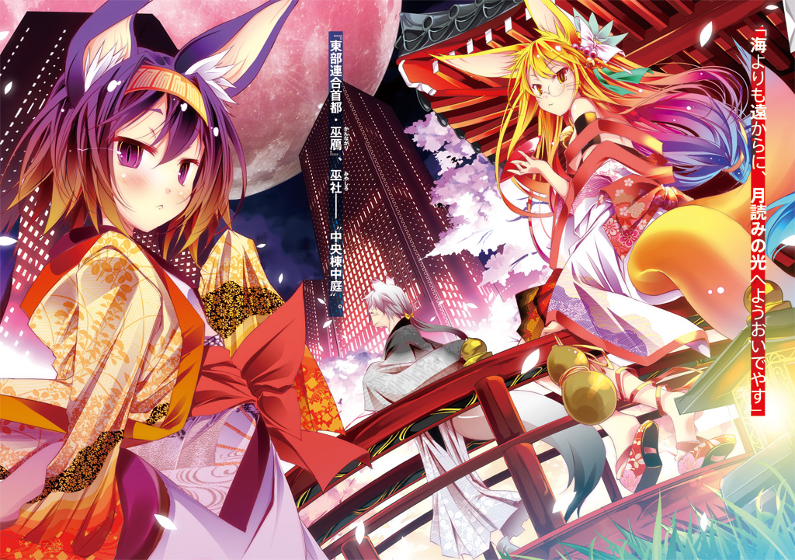

| ノーゲーム・ノーライフ 3 | |
| 榎宮 祐 | |

ＭＦ文庫Ｊ
ノーゲーム・ノーライフ３
ゲーマー兄弟の片割れが消えたようですが......？
榎宮祐
口絵・本文イラスト●榎宮祐
物心つく頃というのがいつを指すかはわからない。
だが〝最も古い記憶〟を指すなら、《彼女》は一歳を満たす前だった。
最初に口にした言葉こそ覚えてはいなかったが。
それを耳にした母らしき女性が──青ざめた顔で、自分を見ていた。
それが、彼女の最初の記憶だった。
────............
ほどなく、彼女は〝白い施設〟に預けられた。
白い壁が囲む建物に、生まれつき白すぎる少女。
彼女の他にも子供がいたそこにあって、しかし彼女は風景に溶け込むように。
ただ異質に赤いルビー色の瞳も、常に下を向いていた。
視線の先にあったのはいつも、二歳に満たぬ少女には似つかわしくない洋書の山。
......彼女が『ゲーム』というものを知ったのは、その頃だった。
白い服に身を包んだ大人達が『知能検査』と称し、いくつものゲームを持ち出した。
だがどれも簡単すぎて、退屈すぎて。誰とやっても面白くない──ゲームの数々。
『計測不能』という言葉だけを残して、自分とゲームする者はやがていなくなったが。
一人でやるほうがまだマシと気付いたのは、施設に預けられ一年が過ぎた頃。
チェスや将棋、囲碁を一人二役で、溶け込んだ景色の中黙々と続ける少女に。
もはや白い大人達すら話しかけることはなくなっていた。
......静かで、真っ白な記憶。
ただ『つまらない』というラベルが貼られた一連の記憶──
二年が過ぎ、少女は母らしき女性と再会した。
新しい父が出来ると楽しそうに語る女性、だが自分に向けられるその瞳は、白い施設の白い大人達の〝それ〟と同じ──何も見出せない虚ろな眼差しだったのを覚えている。
それが三歳の時。
少女は〝新しい父〟とやらとその連れ子──自分より七つ上の《少年》と出会った。
《大人達》の会話に、的確に相づちをうち、的確な笑顔を浮かべる少年。
だが皆が自分にだけ向けるものを、誰に対しても同じように向けるその少年に。
即ち──虚ろで無機質な笑顔を振りまく少年に。
長らく閉ざしていた口を、開いた。
「......ほん、と......〝空っぽ〟......」
──《空》と名乗った少年が、少女のこぼした言葉に目を見開いた。
そして誰も視線を合わせたがらない、少女の赤い瞳をじっと覗きこんで。
何かを探り、確かめるように沈黙し、そして──
少女は生まれて初めて見る〝色〟が、少年の顔に宿ったのを──覚えている。
その〝色〟に込められた意味を、当時の彼女には理解出来ようもなかったが。
少年は──《空》は、言った。
「なぁ、ゲームをしようぜ」
──少女はその日、初めてゲームを楽しいと感じた。
行われたゲームは、二十戦。
最初の数回は、少女の圧倒的なまでの完勝。
だが、回数を重ねるごとに、少年の手は徐々に読めなくなりはじめた。
定石を鼻で嗤うような誘導や駆け引き、奇抜すぎて少女には想像も出来なかった手を打ち始めた《空》は少女の理解を遥か超えて勝利し、ついには十勝十敗で引き分けられた。
初めて自分を負かした少年、だがその様子に勝ち誇る素振りはなく。
むしろ自分こそが負けたかのように──そしてそれがたまらなく嬉しいかのように。
その顔に、もう虚ろさはなかった。
少女にはまだその正体は知れない色を帯びた顔で。
少年は──空は──《兄》は、言った。
「イカサマ紛いの手でやっと勝てるダメな兄ちゃんだけど、これからよろしく──白」
その顔に宿った色を──初めて名を呼ばれた気がした──少女は。
それが〝親愛〟だと、自分が求められたことを初めて実感し。
ここにいていいのだと、認められたことを理解した。
──無機質でモノクロの記憶は、明確にここを境に色が生じる。
何かがこみ上げ胸が熱くなるのを感じたが、それが何かを、彼女はまだ知らない。
ただ視線を落とし、こくりと小さく、頷くしか出来なかった。
────............
......時は流れ、《兄》と《妹》は、二人で暮らすようになった。
両親を名乗る二人は既にいなかったが。
「ま、今後も俺らは二人一緒ってことだな」
兄が──《にぃ》が口にしたその一言以上に、少女が望むものはなかった。
二人の共有名義で、ネットゲームをはじめたのは、この頃。
二人の名前からとった、スペース二つの『 』のアカウント。
兄は奇抜で変則的な、妹には思いつきもしない戦略を次々と編み出し。
妹は精密機械のような正確さと計算で、兄の組んだ戦略を兄の想像を超えてこなす。
──それが〝二人で一人のゲーマー〟が、明確に生まれた頃。
あまりに勝利を重ね過ぎ、ネット上に都市伝説として囁かれはじめた頃だった。
──そこから、少女には自分でも真偽を疑う記憶がはじまる。
神を名乗る人物にネットチェスで勝利し、そして──異世界に投げ出された。
そこは『十の盟約』により武力が禁じられ、全てがゲームで決まる【盤上の世界】。
突然異世界に投げ出されたら、普通はどう感じるだろう。
不安、孤独、居場所の喪失感......？
だが彼女は、その何一つ当てはまらなかったと記憶していた。
端から己の居場所は、兄の腕の中と決めていた。
その兄と二人で、全てがゲームで決まる世界に挑む。
──嗚呼、それは、なんて居心地のいい。
これ以上、何を望めば──？
■■■
「そうか......俺が女になればいいんだ！」
エルキア王国首都・エルキア、王城謁見の間に声が響き渡る。
声の主は、玉座に座るざんばら黒髪の青年──空。
『Ｉ人類』と書かれたシャツ、腕章のように腕に捻じ曲げ巻いている女性用王冠が示すように、この世界、ディスボードにおけるエルキアの......そして人類種の王だ。
その王の唐突な発言に怪訝なまなざしを向けるのは、三人。
「......突然、何を言い出すんですのこの王は」
一つは、赤い髪と対比的に冷ややかな青い眼差し。
ステファニー・ドーラ。通称ステフ。
エルキア王国・先王の孫であり、育ちの良さが窺える雰囲気を纏った少女。
ただしこの場合、空に向けられた表情は勘定しないものとする。
「──なるほど、さすがはマスター、なんと深遠な閃きでございましょう」
もう一つは、空の発言を称える、熱のこもった琥珀色の眼差し。
ジブリール──光を乱反射し色を変える長い髪の、幻想的なまでに美しい少女。
腰の翼と、頭上を廻る光輪が彼女が人類ではなく、天翼種であることを示す。
この世界における知性ある【十六種族】、序列六位の彼女が、己が主──十六位の人類種である空の発想に、だが天啓を吟味するように手を合わせその言葉の意図を拾う。
「マスター御自身が女性なら、十八禁展開は全て、仲の良い同性の〝キャッキャウフフ〟という概念で片付けられる、ということでございますね......御明察に感激致します」
うむうむと、満足して頷く空が、最後の一人と目をあわせる。
「さぁ──妹よ！ 俺と『盟約に誓って』ゲームをしよう！ んで勝ってくれ！」
空が妹と呼び、膝に乗せているルビー色の瞳の少女──白。
男性用の王冠で雪のように白い、長い髪をとめた十一歳の少女。
空の妹──即ち女王である白が、しかし兄の目を覗きこんでぽつりとこぼす。
「......出来、ない......と、思う」
「え、なんで？ 『十の盟約』に誓って行われた賭けは絶対遵守、だろ？ ステフを強制的に惚れさせたり、ジブリールを所有したり。だったら女性化も出来るはずだろ？」
「ご自分の今までのえげつない行動、さらりと流さないで貰えますのっ!?」
そう叫ぶ被害者の声に──だが取り合う心優しき者は、不在。
「──しかし残念ながらマスター、今回は白様の主張が正しゅうございます」
「え、なんで」
「原理的に不可能なことは遵守出来ない故に、でございます」
ジブリールの言葉に頷く白に、空がようやく理解する。
......なるほど。考えてみれば当たり前のことだ。
「例えば、ステフ相手に『百メートルを一秒で走れ』と要求して勝っても、物理的に不可能だから、その要求を遵守すべく限界まで全力疾走するのが限界、ってことか」
「はい、さようにございます」
「──あの......何故私を例として使うんですの？」
百メートルを一秒で走れという無茶ぶりに、死に物狂いで走らされる自分を想像し。
空なら本当にやらせそうだという恐怖からステフが警戒した様子で言葉を挟む。
「待てよ、じゃ仮に『俺をリア充にする』でゲームしても、不可能じゃねぇかっ!?」
リア充になってる己の姿を思い描いて見る空。
──どうだろう、まるで現実味のない〝妄想〟しか浮かばないではないか。
「実際〝リア充〟とやらになれるかはさておき、なった気になることは、可能かと思われますよ。ご自分がどのような人格かなど、所詮考え方一つでございますし？」
「リア充気取りのヒキニートゲーム廃人とか、目も当てられないですよねっ!?」
想像してみて、絶望しか感じられなかった空が叫び。
「......これは、『盟約』の制約限界を確認する必要があるな......」
かつてなく真剣に考え込む様子に、無言で、だが半眼で「仕事しろ」と主張するステフ。
一方、兄と同じように考え込んでいた白が一つの実験を提示する。
「......条件、つき、で......性格改変......とか？」
「なるほど、それはわかりやすいな。じゃステフよろしく」
「──あの、もう一度聞きますわね。何で私なんですの？」
「何処まで可能か、ってのを一番確認しやすいからだ」
さらりとそう言う空の真意を、だがステフは理解出来ない。
「さぁ、ゲームをはじめよう。賭けるのは──『ステフの〝空化〟』だ」
──。
「............はぁ、わかりましたわ」
一瞬、顔に出かけた感情を抑え、諦めたような〝演技〟で応じるステフ。
......なるほど、自分はどうしたところで空に負けるだろう。
今までもそうだったし──現状、空にゲームで勝てる糸口すら見えていないのは事実。
ましてこの場合、実験なのだから、むしろわざと負ける必要すらある。
だがその結果、条件付きとは言え、空になれるのであれば──？
（コレは......空に勝てる千載一遇のチャンスじゃないんですのッ!?）
内心の『ふふふふ』という暗い笑いがこぼれるのを必死に隠して、ステフ。
「しょうがないですわね......わざと負けてあげればいいんですのね？」
「わざとも何もどうせ負けるだろ。じゃ今回は実験だから条件を明確にしよう......ゲームはチェスで。俺が勝てば『三十分間、ステフが空になる』。一応、ステフが勝ったら『あめ玉をやろう』とも明確にしておく。まあ無意味だが。それじゃ──『盟約に誓って』」
「ええ、『盟約に誓って』......はぁ」
雨のような暴言も、ステフは〝負けた先〟を思えば聞き流せるというものだ。
──『盟約に誓って』
神が定めた『十の盟約』に従い、絶対遵守の賭けを行う宣言を行い──
────............四十秒後。
「......ステフ、いくら何でも弱すぎないか。わざとでも凄いぞ......」
僅か五手で負けたステフが、空の言葉にしかし、笑って応じる。
「くくく......さぁて、これで人類種最強のゲーマーが一人増えたわけだ──」
突然睨むような目、皮肉に口元を歪めたステフが尊大に笑う。
「さぁゲームをしよう〝空〟──神さえ下さんとするテメェ自身を相手にする時だぜ？」
上品さを纏った少女が、だが不釣り合いに、見下すようになおも語る。
「くく、どうした、自分の掘った墓穴に飛び込むのに今更躊躇いでもあるのか？ 賭けるのは『てめーの恒久的真人間化』だ。さぁ──『盟約に誓って』と行こうぜ」
そう気取った仕草で、ステフ（空風仕上げ微妙な誤差と共に）は語る。
──いちいちポーズをつけながら。その様子に。
「なぁ白、俺ってあーいうキャラか？」
「......だいぶ......ちが、う」
「ドラちゃんから見たマスターを、盟約に従って限界まで再現しておられるのでしょう」
なるほど、リア充になったつもり──ならぬ、空になったつもり、というわけだ。
「......これ、俺を過大評価してんのか、馬鹿にしてんのか、判断に苦しむな......」
ファッサファッサと前髪をかきあげるステフに、そんなことしたことあったっけ俺、と顧みながら、口元を引きつらせた空が、渋々その要求に応じる。
「......ま、まあいい。思った以上に鬱陶しいから、こっちの要求は、今すぐステフが元に戻るってことで乗ろう──『盟約に誓って』」
────............再び四十秒後。
「何でですのぉおっ!? 強さは互角になるはずじゃないんですのっ!?」
......ごく自然に、川の流れのように負けたステフに、ジブリール。
「ですから、原理的に不可能なことは出来ない、と申しあげたはずでございます」
「私が空に勝つのが、原理的に不可能なんですのっ!?」
世界に裏切られたような顔、とはまさにこんな顔だろうという様相でステフ。
「いえ、ドラちゃんがマスターになった気になっても思考や記憶まで共有できませんので」
「わ、わかってて勝負に応じたんですのねっ!?」
「当たり前だろっ！ あの様子からどうすりゃ互角になったように見えるっ！」
──そもそも本当に空になったなら。
白と二人ならともかく、単独で〝人類最強〟を名乗りはしない。
「ぐぬぬ......だがまだわからんぞ。単純にステフの性能不足だったかもしれん」
「性能不足って言わないで貰えますっ!?」
「ジブリール、今度はおまえだ。天翼種なら、俺をエミュレート出来るんじゃね？」
天翼種と人類種では、文字通り身体性能の〝次元が違う〟。
もしかしたら──と願う空に、だが意外にもジブリールが驚く。
「私がマスターに、でございますか？ それこそ不可能かと思いますが」
「え、なんで？」
「......いえ、マスターの御意志とあらば、全霊を賭して挑戦するまでにございます」
なにやら凄まじい覚悟を決めた様相で、ジブリールは頭を垂れた。
────............
打ち合わせ通りわざと負けたジブリール。
『盟約』の絶対遵守の束縛を受け──姿が変わっていく。
「おぉっ!? 姿が変わるかっ！」
「......そ、か......ジブ、リール......精霊で、構成......されて......」
空と白が揃って目を見開き、驚きに声を上げる。
なるほど、天翼種にとっては『姿を変える』のは原理的不可能性を有さない！
これは、諦めかけていた〝空の女性化計画〟へ一縷の希望を見いだす結果──
と、喜びに顔を緩ませていた空の顔が、しかし、徐々に引きつっていく。
姿を変え、鏡のように空の姿になっていくジブリール──そこまでは良かった。
だが、徐々に──翼が、八枚生えて。
「......あ、あれ......？」
ジブリールの、元のそれより複雑で巨大な光輪が頭上に描き出される。
そして緩慢に開かれた口が──言葉を紡ぐ。
「──我こそ最弱なり」
......空はもとより、白、ステフも含めた全員が絶句する。
「え、えっと......？」
「最弱にして最強なり。神に弓引き【十六種族】を束ねるものなり。既知を未知へ覆すものなり──故に、世界変革を司るものなり。......我に、なに用ぞ、無力なるものよ」
──そして、しんと、水を打ったような静寂が続く。
「えと──」
つまり、これは、こういうことだろうか。
「......ジブリールが天元突破の勢いで俺を過大評価してるってことか......」
結局、ジブリールの言う通り、記憶などを共有出来ない時点で主観が入り込むわけだ。
──まあ、己の創造主と並べて、新たに仕えるべき主とジブリールは定めたのだ。ジブリールの中では、空は〝神格化〟されていると納得出来るわけだが──だが。
「あのさ、俺ここまで厨二臭いか？」
「......ぇ？ わり、と......」
「濃縮されてますけど、空の言動って要するにこういうことですわよね？」
ジブリールの変化以上の意外な発言だったように応える白とステフに、空。
「......俺、真剣に自分を見つめなおしたほうがいいかな」
文字通りに、穴があったら入りたい様子で。
空は手で顔を覆い、ジブリールの主観が入った自分の姿を視界から消すことにした。
────............
「......つまり限界以上のことは絶対遵守の盟約をもっても出来ないってことか」
大きなため息をついてそう結論づける空に、元に戻ったジブリール。
「残念ながら、そういうことでございます。つまり、マスターの女性化は──」
「ああ......無念だが、不可能ということになる」
だが、それも当然だろう。
「ま......ゲームを行った当人の有する権利以上のもの、能力以上のものまで『遵守』出来るなら、それは〝間接的に〟人類種も魔法に等しいことが出来ることになるしな」
だが「むしろ──」と続けて、舌打ちする空。
「それを期待したんだが──そう都合良く『十の盟約』の抜け穴は見つからんか」
「──っ！」
その発言に、ステフ、そしてジブリールも息を呑む。
ヘラヘラと、だが唯一神が定めた世界の絶対不変のルールさえ出し抜こうとする。
──これが空という人物。
──人類種の王。ジブリールが仕えると決めた者。
だが、当の空にその自覚はない様子で。
呆気にとられるステフとジブリールに、白だけが〝兄のすること〟と慣れた様子。
その白に、早々と思考を切り替えたのか、おもむろに別の提案をする空。
「じゃあさ、強制力はないとしても白──俺を〝白化〟してくれないか？」
こくんと首を傾げて白。
「......なん、で？」
「白がどういう目で世界を見てるのか、前から興味があったんだよな」
「......ふたり、みたい、に......にぃ、から見た......しろに、なる......だけ」
「うむ、それでも盟約の強制力は働くだろ。普段は出来ないレベルの、限界までのエミュレートをするなら、ちょっとくらい、新しく見えるものもあるんじゃねぇかな、って」
だが、兄の言葉に、白は思う。
──兄は、自分で思っているような、馬鹿などではけして、ない。
むしろ自分には思いつきもしない手練手管を駆使し、幾度も自分を負かしてきた人だ。その兄が、何故馬鹿を称するのか、白には不思議でしょうがないほどだった。
強いて言えば......兄はそう──変なところで〝鈍感〟だ。
もし、盟約の強制力によって、空がその鈍感さを克服すれば？
出会ったその日からは同じ時間を、同じように生き、同じような記憶を有する空なら。
気づかないだろうか。この感情に。
──胸に秘めている、兄に対する、兄以上の感情に。
そう考え、白が口にしたのは、兄の要求を完全に封じる一手。
本心と乖離してはいるが、やんわりと、しかし完膚無きまでに封じる──口実。
「......にぃ......しろが......にぃに、なったら、どう......思う？」
「──あぁ。そりゃ嫌だな。白が俺をどう見てるかなんて、事と次第によっちゃ、死ぬ」
──そうしてやはり兄は気付かない。
僅かに赤くなっている妹の頬......その意味にまでは、気づかない。
「ん～じゃぁもうさ、ジブリール、ステフになってみね？」
「お言葉ですがマスター、面白可笑しギャグキャラを増やす意図を把握出来かねます」
「誰が面白可笑しギャグキャラですのよっ!?」
──モノクロからスタートした、白の記憶。
〝あの時〟胸にこみ上げたものが、今はわかる。だが未だ表現には慣れていない白が。
小さく、傍目にはわからない程に微笑むのを。だが兄が見逃すことはなかった。
兄が小さく微笑み返し、その目に込められた意図を、言葉より明確に伝える。
──『楽しいな』と。
この世界が──笑ってゲーム出来るこの状況か。それとも白が笑っている事実か。
問うまでもなく、両方だと物語る兄の目に小さく、こくりと白が頷き、
──そして全てが黒く染まった。
■■■
まぶたが重い。
寝たまま泣いていたのか、酷く乾いた目が開くことを拒否するように重い。
いや、果たしてそれは乾いているせいだろうか。
想像したくもない、考えたくもないあの悪夢を思い出して。
あれが本当に悪夢かどうかを確認するなと、まぶたを開いて瞳に映る光景を確認するなと──頭の何処かで誰かがそう言って拒否しているように、白には感じられた。
だが、それを否定するために。ありえないと言い切る為に。
よせと訴えるその思考を黙らせ、痛みさえ伴って薄く、眼を開く。
そこは、エルキア王城、王の寝室。
何人一緒に寝るつもりかと思う程のベッドに横たわるのは白一人。
部屋には乱雑に散らかされた無数のゲームと、本の山と──それだけだ。
何度見回しても、いるべき人が、いない。
おはようの一言だけで、今日を生きる意味を見いだせた人が。
──空が、いない──独りの部屋。それが意味することに。
否定しようとした思考が小さく呟くのを聞いた気がした。
──『だから言ったのに』と。
「......おね、がい......夢なら────醒めてっ！」
普段口にしないような声を、声帯を引き絞り痛む程のかすれた声で、叫ぶ。
──これらの記憶の全てが、幻だったと主張するような、空虚な部屋で。
ただ、嗚咽を殺して、そう叫ぶ。
第一章──解離法
［残り──三手］
──意識も記憶も五感も、ない。
ここが何処か。自分が誰なのか。そんな問いももはや生じない。
何の実感もない、自己の定義すら曖昧になっている中で、何を問うのか。
なにも問えない。問う前提がない。何を問うべきかを問うくらいだろうか。
虚無に等しい、微かな意識、だがその意識がか細く、力強く主張していた。
何の根拠もなくただ「これでいいのだ」と。
このまま勝利を待つだけでいいという主張が、微弱な正気を辛うじて繋いでいた。
──勝利？ 何の？
────わからない、なにも......わからない。
■■■
「......どう、ですの？」
王の寝室の扉の前で、ステフがジブリールに尋ねる。
だが、ジブリールもまた、ため息をついて頭を振る。
「──なにも。私の入室も拒まれ、取り付く島もない状態でございますね」
「相変わらず、〝ソラ〟って言い続けてるだけ、ですの？」
「ええ......そちらは如何で？」
「城内スタッフに手当たり次第に聞いてみましたわ。みな答えは同じ──」
「ソラなる人物は知らない、エルキアの王はマスター一人──でございますか」
「ええ......どういうことですの？」
こっちが聞きたい、とジブリール、再度ため息をつく。
「順当に考えればマスターの記憶が書き換えられたことになるのでございますが」
「それって──」
「はい。マスターが──負けたことを意味します」
──酷い違和感があった。
突然、『ソラ』なる正体不明の人物を呼び続け茫然自失になった白。
状況そのものがまるで意味不明ではあったが、それ以上の違和感に、二人は閉口する。
──その会話が聞こえていたのか。
扉の下からすーっと、薄い板が差し出される。
「......？ これ、例の......」
「マスターの、タブレットＰＣ、でございますね」
床からそれを拾い上げジブリールとステフ、二人して画面を見る。
「......えっと、なんて書いてあるんですの？」
「マスターの元の世界の言語でございます──『質問』と書かれてございます」
ぽこっ、と音。新しいメッセージが表示される。
「なるほど。筆談ならぬ〝チャット会話〟をお望み、でございましょうか」
主が持ち込んだ異世界の膨大な知識。
その全てを把握するにはさすがに至ってないジブリール、だがその意図は汲む。
「今度はなんて書いてあるんですの？」
覗き込んで、やはり全く読めない文面にステフが問う。
「──『１‥ジブリールと対戦した人物の名は？』と」
「......シロ、じゃないんですの？」
「さようでございますね。これは......返信はどうすれば──」
操作方法がわからないでいるジブリールに、だがすぐ、ぽこっという音が届く。
「なるほど、回答は口頭でよいと──『２‥ステフに惚れろと要求した人物は』？」
「で、ですから、シロですわよ」
すぐさま、次のメッセージが届く。
「......『３‥十一歳の同性が、惚れろと要求した？』......と書かれてますが」
「え、えぇ......だ、だから変態だ鬼畜だって散々言ってるじゃないですの......」
口を引きつらせて答えるのと、更なるメッセージが届くのは同時。
「──『４‥どうやって負けたか、詳細に』......だそうでございます」
白の状態を考え、安易な答えは出来ない、とステフ。
出来るだけ詳細に思いだそうと、額に指を当てて必死に思い出す。
「えーと、ジャンケンでしたわ。私を挑発して、心理戦で、あいこ狙いの。でも重要だったのは〝要求内容〟のほうで、具体性のない条件をあいこで求められましたわ。それでペテン師呼ばわりした私に、でも問答無用で『惚れろ』......と言われましたわ」
ステフが言い終わると同時、次のメッセージが届く。
「──『５‥自分のものになれ、ではなく何故〝惚れろ〟と要求されたか』と」
「み、貢がせるためですわ。あとでミスだったと気づいて悶えてましたわ──シロが」
今度は、次のメッセージが届くのにしばしの間。
「──『６‥東部連合のゲーム内容を暴いたのは誰か』」
だがこの質問には、ステフとジブリールが同じ見解で答えを出す。
「シロと、お祖父様の遺品、ですわよね」
「それは、私も同じように記憶してございます」
......そして、次のメッセージは、途切れる。
黙って待ち続けるしかないステフとジブリールは王の寝室の扉の前で、立ち尽くす。
数分ほどしただろうか。だが、もはや質問ではない断言が。
むしろそれは〝懇願〟に近い、自信の窺えないメッセージが届く。
『みんな、記憶、消されてる』
そのメッセージに、ジブリール。
「......お言葉ですがマスター、記憶の所有権は所有者にあります。『ソラ』なる人物がゲームを行っても、自分の記憶を失うだけ、他の者の記憶を消すのは不可能でございます」
だがすかさず反論が返ってくる。
『同意の上で全員が賭けた』と。
「──すると今度は、マスターだけが記憶を失っていない理由が不明でございます」
......再び、メッセージが途切れる。
扉の奥でケータイを手に膝に顔を埋め、白は返せずにいた。
──わかっていた。
兄が、自分だけ抜きでゲームをするだろうか。
これほどの状況を招きかねないゲームを、まして負けるなど──
「え、あ、はいご苦労様ですわ......いえ、大したことじゃないですわ」
扉の外からステフの声がかすかに聞こえた。
「......シロ、言い難いんですけど、使いに出した者が戻って来ましたわ。〝シロが勝手に人類種のコマを賭けた〟ことでデモは続いていて、城外の者から聞き取りは出来ませんでしたけど、デモ隊が口にしてる罵倒の対象に──〝ソラ〟なる名は、ないそうですわ」
その報告に、目の前が再び暗くなっていくのを感じる白。
辛うじて意識を手放さないように、歯を食いしばって、考える。
あるはずだ。
みんなの記憶に食い違いが。必ずあるはずだ。だって、
──そうでなければ、自分の記憶は全て嘘になる。
（......ありえ、ない......あっちゃ......いけ、ないっ）
自分に言い聞かせるように、必死で頭を振って否定する白。
ゲームで負けて、嘘の記憶を植え付けられた──仮に、仮に、そうだとしよう。
だが〝この世界の誰〟が、自分の元いた世界に関する記憶まで偽装出来るのか。
ありえないはずだ、そんなことは出来ないはずだ。
そう自分を納得させようとするが、反論可能なのも──白にはわかっていた。
この世界には『盟約』も『魔法』もある。具体的な記憶の改竄ではなく、例えば。
〝全ての記憶を二つに分割する〟ということは、可能かもしれない。
──いや、もっと厳密に言えば。
兄の実在を示す証拠が一切ないこの状況で。
自分が〝正気だったという保証〟を、誰がしてくれる。
『空』という存在が、自分にとってどれほど都合のいい存在だったかを考えると、その可能性が──もっとも認められないその可能性が、酷く説得力を帯びて浮かび上がる。
即ち──
空など、自分が作り出していた都合のいい空想上の存在だった、と。
（──そん、なの......認め、ない......認め、られないっ！）
認められるわけがない。認めたら、全てが、自分の全てが──前提から──
タブＰＣから、完全に反応がなくなる。
扉越しに伝わる白の沈んだ様子に、顔を見合わせるステフとジブリール。
「ど、どういうことですの？ どうすればいいんですのよっ！」
「......整理して、考えてみましょう」
ジブリールが自分を落ち着かせるように言う。
「人類種のコマ──人類種の全権利を賭けた、東部連合との勝負が控えているこのタイミングで、マスターを行動不能にすることで、もっとも得するのは誰でございましょう」
「そんなの、私でもわかりますわ──犯人は東部連合ですのっ!?」
──たしかに、正式な勝負の前に、ゲーム内容を暴かれた東部連合が白を再起不能にするために秘密裏に挑み、記憶を消した──順当に考えると、それが自然ではある。
だが、白から届いたメッセージの履歴を見てジブリール。
──『６‥東部連合のゲーム内容を暴いたのは誰か』
「......東部連合なら、この記憶を真っ先に消すはずでございます」
東部連合は、ゲームに関する記憶の消去を要求することでゲームを長年隠蔽していた。
それを暴かれた故に、東部連合は勝負に応じざるを得なかったのだから──まして。
「マスターが、勝負を受ける理由が、ございません」
『十の盟約』──ゲーム内容は、挑まれたほうが決定権を有する。
それは〝ゲームを受けるか否か〟も、当然含まれる。
東部連合に仕掛けられた勝負なら、受ける理由が思いつかない......
「──ダメでございますね......この状況を説明出来る情報が全く足りません」
とジブリールは頭を振って、苦悩の色濃い顔でため息つく。
部屋の中からは、ただ血を吐くような白の嗚咽が聞こえてくる。
兄を──ソラという男をただ呼び続ける主を前に、ジブリールは行動を迫られていた。
──主を疑うなど、論外だ。
主がカラスは白いといえば、三千世界のカラスを白く染め上げるのが己の責務。
故に、主が『ソラ』という人物が存在したと言うなら、間違いなく存在したのだ。
だが、扉の向こうから聞こえる声は──
「......な、なんとかならないんですのっ!? シロ、このままじゃもたないですわよっ」
焦燥に、扉に爪を立てて、ステフを叫ばせるに足るものだった。
──【十六種族】序列第六位・天翼種、膨大な精霊──魔力を有する戦闘種族。
その身そのものが、神に編まれた〝完成された魔法〟故に、複雑な魔法は扱えない。
まして人類種の心の機微を、理解しきれるほど、複雑な感情を有してもいないが。
「......そのよう、で、ございますね」
──魔法など使わずとも、主の精神が、崩壊一歩手前にあるのは明白だった。
主を疑うなど論外、万死に値する。だが──
「──マスター。ゲームをしましょう」
「......え？」
ジブリールの声に、反応したのはステフ──そして、扉越しの白。
「私と【盟約に誓って】ゲームを──そして極めて失礼ながら、負けて頂けませんか」
──嗚咽は、やまない。
だがジブリールの意図を探るような白の気配に──答える。
「──〝ソラに関する全ての記憶の封印〟を要求いたします」
ステフがジブリールの発言に、目を剥く。
その視線が意味することは、ジブリールにもわかっていた。
おそらくジブリールが抱えているのと同じ違和感を覚えている。
白の主張を切り捨てるべきではないという、漠然としたその違和感──だが。
「マスターはこのままでは──壊れます」
それだけは、万死を受け入れてでも避けなければならない。
本来なら交わされた盟約内容をつきとめ、それを無効とすべく動くべきだろう。
だがそんな悠長なことをしていたら、その前に白が壊れるのは自明だ。
一度記憶を封印し、落ち着かせ、その後に犯人を突き止め必ず──
（必ずその素っ首を刎ねて、微塵斬りにいたしましょう）
いつもの穏やかな笑みの片鱗すらない、ただ質量を帯びた刺すような〝害意〟を放つジブリールに、ステフが腰を抜かしそうになりながらか細く窘めようとする。
「ジ、ジブリール、お、落ち着いてくださ──」
だがジブリールの気配がそれ以上の言葉を許さない。
──『十の盟約』で武力が禁じられている......それがどうしたのか。
犯人を突き止め、ゲームで負かせ、『殺害許可』を取り付けてこの手で殺せばいい。
その後でなら、主を疑った罰などいくらでも甘んじて受けよう。
ぽーん、と軽い音が響いて、ジブリールの手元のタブＰＣのアプリが立ち上がる。
白がケータイから、遠隔操作で立ち上げたのは──将棋アプリ。
白にとって、万に一つも負けはない、二人零和有限確定完全情報ゲーム。
故に──負けようと思えば、確実に負けることが出来る。
そして蚊が鳴くような声が嗚咽に紛れて、ジブリールの耳に届いた。
「......【盟、約に......誓っ......て】......」
深々と一礼して、ジブリールが応じる。
「ありがとうございます、マスター......【盟約に誓って】」
■■■
［残り──四手］
──記憶がない、自分が誰かもわからない。
腕の感覚ももはやない。聞こえる声も、誰のものかわからない。
自分は一体誰で、何故ここにいる。何故ゲームをしている。
全てが曖昧な中で、だがそれでも。
全てを忘れてでも絶対に負けられないという、核心だけが己を突き動かす。
なくなった腕のかわりに、口でコマをくわえる。
そのコマに記された数字を舌から読み取って、選びとる。
意味なんて考えるな。意味なんて必要ない。俺達に敗北はない。
そう──......に敗北はない。
──誰に、敗北はない？
......違う、考えるな、どうでもいいっ！
肩に触れる──誰のものともしれないこの小さな手のぬくもり。
それが、全ての答えだという、残り僅かな感覚を疑うな。
気が触れそうになる中、狂気を振り払って──或いは狂気そのものに身を委ねて。
口で咥えたコマを、盤上に指す。
■■■
──純然な、規定通りの、将棋。
白なら容易に勝利に......同じく容易に敗北にも辿りつける、ゲーム。
そう、簡単だ、ここで金を取らせれば、それだけで負ける。
たったそれだけで、あっさりと負けて、全てが封じられる。
兄と過ごした──記憶の全てが。
生きている実感を、はじめて与えてくれた人の。
初めて袖を通した制服姿の自分を、可愛いと言ってくれた人の。
入学式以降、一度も通うことのなかった学校から戻った自分を、ただ抱いて一緒に泣いてくれた人の。一人では何も出来なかった自分を、ただ優しく引っ張ってくれた人の。
兄の......にぃの、何者より大事な人との時間が──
この一手で──あっさりと、なかったことになる。
（──......っ！）
偽りかもしれない兄の記憶が、言葉が、脳裏をよぎった。
同時に白は、考えるより先に──手が、動いていた。
ジブリールが瞳を閉ざし、こぼす。
「......マスター、何故......勝つのでございますか」
そう──笑いすら出ないほど容易く自分を詰んだ必勝の一手。
その意図を問うジブリールに、応えた声はあまりに弱々しく。
だがジブリールとステフを、扉から一歩押しやる程の圧力を持って響いた。
「......『 』、に......敗、北──はっ......ない......のぉっ！」
えずきさえ混じえて、暗く閉ざされた部屋の中。
顔を濡らして毛布をかきむしって、白はただ兄の記憶を想う。
あの日、たった一日の通学から涙を伴って帰宅した自分に、兄が語った言葉。
──なぁ白、人は変われるっていうけど、ホントにそうかな。
飛びたいって強く願えば、翼が生えるのかな。違うと思うんだ。
変えるべきは自分じゃなくて、飛ぶための手段じゃないのか？
造るしかないんだ。今のままの自分が空を飛ぶ方法を。編み出すしかない。
自分も飛べないくせに、何言ってんだと思われそうだけど──
白を飛ばす翼、考えてみようぜ、ゆっくり......さ。
てんでダメな兄貴だけど、俺も一緒に考えてみるから、さ。
──コレを忘れて、どう生きよう。
〝生きていられる理由〟そのものだった兄の記憶を封じて、何をしよう。
これが植え付けられた記憶だとしたら、自分は、なんて酷い勝負に負けた。
だってこんなの──
こんなの──あんまりだ！
「......にぃぃ......やだよぉ......にぃを、忘れるなら────死ぬほうがずっといいッ!!」
喉よ裂けろという声に、ジブリールもステフもただ息をのむしかなかった。
......万死すら覚悟した提案。
それが拒まれた今、もはやジブリールに言えることはない。
俯き黙り込むジブリールをよそに、だがステフがおずおずと口を開く。
「あ、あの......よ、よくわからないんですけど......」
ステフの発言に、なんら論理性はなかった。
ただ漠然と、白を慰めたい──そんな一心で口にしたことだった。
「シロにとって、ソラは確かにいたんですのよね？ その、いなくなったら、シロがこんな風になってしまうくらい、疑う余地も無いくらい──確実に」
──だがその発言が。
「なら、その人がこの状況を作った理由があるはずじゃないですの？」
──前提を覆し一筋の光明をもたらすものだったことに。
この場でただ一人、ステフ自身だけが、気付いていなかった。
時間が停止したように、ジブリールも白も、目を見開いて固まる。
「で、ですが、盟約による記憶の消去ではこの状況は説明がつかな──」
「あ、いえ、ですから、そうじゃなく──そのぉ」
続いたステフの言葉に、二人は今度こそ息を呑んだ。
「──まだゲームは終わってないんじゃ、ないんですの？」
ガラス玉のように目を丸くするジブリール。
その視線の意図を汲めないのか、しどろもどろにステフ。
「で、ですから──記憶を書き換えられてるのは『盟約』によるものじゃなくて、ゲームそのものによるものかもしれないじゃないですの。記憶が書き換わってるのはシロの言うとおり私達のほうだったら、その......ソラという人は、私達の同意をとった上で、ゲ、ゲームを行ってて、それで、まだ、終わって、ない......と、か......」
自信なく尻すぼみになるステフの言葉に、しかし白が濡れた顔を上げる。
「──な、何を、根拠に......そう思われるので......」
あまりに状況証拠を無視した、飛躍のような仮説に、絞りだすようにジブリール。
「こ、根拠は......で、でも──〝違う〟気がするんですのよ」
そう、なんの根拠もない──だからこそ。
問答無用に感覚に訴えかける言葉を、ステフが口にする。
「あの人が──〝負けた〟って、絶対おかしい、ですわ」
あの人──シロともソラとも明言しないその言葉に、ジブリールは閉口する。
──ステフの仮説は、穴だらけだった。
『盟約』抜きにこれだけの事象改変を行う方法も。
自分達の記憶から特定の人物を消し、全権代理者──白には残す意図も不明だ。
だがその仮説が正しければ、それをも上回る疑問が氷解するのも、事実だった。
──エルキアの王、人類種の王、己が主。神を下し、天翼種を下し、東部連合をも飲み込もうとしていた者が......負けたなどと考えていたことに対する〝違和感〟。
ステフの仮説通り、この不可解な状況が、敵の意図したものではなく。
勝利のために作られた状況だとしたら──？
「それなら──確認の方法がございます」
頭を振って、ジブリールが言う。
「確かに、特定の物体や、個人がこの世に存在した事実ごと、全世界から記憶も記録も消すことは、『盟約』を使ってすら不可能でございます。ですが仮に──」
──それは、相当シビアな条件が求められる仮定の話。
更にそれを『盟約』の力なしで行う方法が、一層謎を深めてしまうが──それでも。
「ソラという人物がマスターの兄、即ち〝人類種の全権代理者〟として勝負を受けたと仮定すれば、人類種から〝消える〟ことは可能かと。その所有物からも──ですが」
ジブリールの言葉に、はっとステフが反応する。
「所有権・代理権を有さないものからは消えない──なら、他種族に聞けばッ！」
「はい、今すぐ東部連合大使館に空間転移し、確認して参ります──それから......」
扉の前で膝をつき頭を垂れて、
「......マスター〝達〟が敗北したなどという前提で思考した目に余る愚行、のちほど如何様にでも罰をお受け致します──もうしばし、お時間を頂くことをご容赦ください」
そう告げるや、虚空に溶け込むようにジブリール。
質量の転移によって生じた空間に吹き込む空気が、僅かな風を残して、姿を消す。
一人残されたステフは対処に困り、とりあえず扉の向こうに声をかける。
「あ、えっと......シ、シロ......大丈夫、ですの？」
......だが、その時には既に白の心はそこにはなかった。
──兄が存在するという確かな可能性。
その断片に触れたことで、凍りついていた思考が急速に活性化していく。
空が──兄がいるという期待、その期待を確証に変える〝根拠〟を暴き出すべく。
重い体をベッドから剥がして立ち上がり、這うように部屋の中央に向かう。
いつも半分閉じられた、濡れたルビー色の目。
その両眼を見開いて、部屋を見渡す。
ホコリ一つ見落とすまいと視線を巡らせて、なおも加速していく思考。
（......にぃ、が確か、に......いた、なら、どうして、この状況......つく、った）
ステフの仮説を信じるなら、この状況は兄に仕組まれたものだ。
何故そうしたか──兄の思考をトレースするしかない......でも。
──前提を嗤うようなプレイスタイルを、呼吸するように編み出す兄の思考。
自分には永遠に到達出来ないとさえ感じていた、そんな人の策謀を読む──？
......不可能だ。まるで出来る気がしない。
だが、兄は確かな足がかりと、決定的な判断材料を残した。
「......にぃ、が......負けるわけ──ない......」
──そう、『 』に敗北はない。
ならば──自分は、同意したのだ。兄は自分を、自分は兄を信じて。
この気が狂うような状況を作り出すことを、了承したのだ。
なぜ──そんなことに気づかなかったと、白が頭をかきむしる。
（──なんて......バカッ！ なんて、頭悪いッ！）
こんなザマで〝兄の自慢の妹〟だなど、どう顔向けすればいい。
──たかがいくらか記憶が消えた程度で。
「......どう、して......にぃ、を疑う、なんて──出来、たのっ」
だが今はそれどころじゃないと、抑える。
兄が、自分を信じて託したこの「状況」──終わらせる必要がある。
──焼き切れてもいい──動けという意志に、白の思考回路が応じる。
呼応し、もっと酸素をと叫ぶ脳に、遠慮無く小さな心臓が限界まで音を刻んで応える。
体温が急激に上昇していくのを感じながら、白は持っている全ての記憶を洗い出す。
空に関する記憶を、字幕付き映画のように一字一句一挙手一投足、残らず引き出せ。
兄が仕組み、この〝今〟があるなら、必ずヒントを残した。
兄に関する最後の記憶、複数の意図の読めなかった言葉が浮かび上がる。
──白、俺らは、いつも二人で一人だ。
「......二人で、一人......にぃ、は......白を......一人に、しない......」
何故──ステフの寝室になったはずのここで目を覚ましたのか。
どうして疑わなかった？ なんで真っ先に気付かなかったッ！
これこそが、自分が兄には届かない理由なのだろうと白が歯噛みする。
こんな簡単な答え──つまり空は、兄は──にぃは──
（......ここにいる──最初からっ！）
王の寝室を、射貫くような眼差しで睨みつける白の目に──もう、涙はない。
■■■
［残り──五手］
......俺は......空。年齢は......忘れたか。
......自慢の妹は──白、十一歳、綺麗な白い髪と赤い瞳の美人さん。
大丈夫、まだ、覚えてる。
「白、いるか？」
こくりと頷く気配。もう意識も体も、記憶もツギハギになっているが。
頷いた気配の主が白のものだとは、まだ辛うじて認識出来た。
「──白、まだ、いるよな」
再び、こくりと頷く気配。それだけが、今の自分を支えている。
記憶の大部分が失われた中でも、これだけはわかった。
──想像を遥かに超えている、と。
視覚は奪われて久しく、手足の感覚もない。
複数の声が聞こえるが──それが誰のものか、ここが何処か、もう思い出せない。
全てを失っていくのがこれほどの恐怖とは、想像出来ようはずもなかった。
「白......そろそろ俺、たぶん......そしたら──」
必死で何かを堪えている様子で、三度、こくりと頷く気配と。
──わか、ってる......という小さな声。
その言葉に、苦笑して空が懇願するように言う。
「頼みを聞いてくれないか。手......は、もう感覚がないな......ははっ」
ヤケクソを多分に含んだ笑い声で、続ける。
「どこでもいい。まだわかる所を、握っててくれないか──狂わないように」
肩を強く握られたことに、わずかに安堵する空が、あぁ、と息を吐いて。
そして──口で咥えたコマを、盤上に置く。
■■■
虚空を睨む白の心拍数が、なおも上昇していく。
──全ての情報を整理しろ。
兄は言った──『二人で一人』と。
ならば自分もゲームに参加していた──いや、終わってないなら参加している。
兄は言った──『常にゲームをはじめる前に勝ってる』と。
ならこの状況は全て想定通り、わざと行ったものだということになる。
兄は言った──『俺らは、少年漫画の主人公じゃない』と。
少年漫画の主人公──それは、成長するもの。
この場合、少年漫画なら白が成長するフラグだ。
空抜きでもやれるようになる、そういう展開を──だが兄はハッキリと〝否定した〟。
兄は言った──『俺らは、約束で結ばれてる』
自分達は......二人で一人。二人で、完成品だと。
（......完成、した......ものに──成長も、なにも......ないッ！）
小さな頭が脈打ち痛みを訴え始めるのを、だが無視して白が尚も内心叫ぶ。
もっと、もっと考えろ──ッ！ と。
この状況を作り出す必要性はなんだった。
兄は言った──『最後のピースを手に入れて来ようぜ』と。
東部連合との勝負を、今以上に有利に出来るピースを求めて勝負に応じた──
（......なら──敵は......誰）
兄との最後の記憶。謎めいた言葉を残した兄。
あの時、玉座から兄が見ていた、会話していた相手は──誰だ。何度記憶を見直しても相手は──〝姿がなかった〟。何故姿がなかった何故兄にだけ見えていた魔法で姿を消した何者──ならジブリールは、もっと──記憶の中の──何かの──だけ──から──
（......もっと......もっともっと、もっと考えてッ!!）
白の脈拍が、思考が──壁にかかる時計の動きを止めるまでに加速していく。
──こんな程度じゃ、兄の思考をトレース出来ない。
兄の行動には、常に二重三重──時には十重二十重の意味さえあった。
自分には想像すら出来ない方法で、結果から逆算するように戦術を生み出していた。
その発想力、前提を覆す思考法、ショートカットを駆使することは、出来ない。
（なら......しろ、は......しろの、やりかたで......やる、しかないっ！）
体温が更に上がっていき、万力で頭を締められるような痛みに汗が溢れる。
──それは、極めて非効率的。だが暴力的とも呼べる強引な思考法。
残された記憶、状況を構築する要素、手がかり、解答候補、判断材料。
幾千幾万の可能性、それらが生み出す幾億幾兆の状況を脳内に描き。
──その全てを、総当たりに検証考察していく。演算機のごとき力技極まる推理法。
それを可能たらしめる白の小さな頭が、脈打ち割れるように、脂汗が滲みだす。
そして──秒針が、二回ほどその音を刻んだ頃。
だが白にとっては数時間に感じられたその脳裏に、一人の──解答が、浮かび上がる。
あまりに記憶が断片的過ぎるその者──
顔も姿も、声も思い出せない。だが漠然と、残っている印象。
「......国王選定戦で......戦っ、た......人......」
人類種の為に──エルヴン・ガルドまでをも利用しようとした人。
そんな人物が、兄が人類種のコマを賭けたと耳にすればどうするか。
──東部連合戦、必勝のピース、森精種の支援を受けた──監視者。
「......クラ......ミー......！」
兄の対戦相手の名を口にし、全てが繋がるのを感じると同時。
回転数を上げすぎた歯車が、弾け飛ぶように──白は意識を失った。
■■■
［残り──八手］
確認しよう......俺は、空。
白の兄、十八歳、童貞コミュ障ゲーム廃人。
異世界から来た────待て。
神様とゲームして、勝って、この世界に、妹と一緒に来た......その後は？
──なるほど、どうやらこの世界に来てからの記憶はもう〝奪われた〟らしい。
だが問題はここからだ......このゲームの目的は、なんだった。
それを〝奪われていたら〟──全て終わりだ。
......──
──大丈夫。思い出せる......〝まだ俺のものだ〟。
期待していた通りの重要性だったようだ。
「......あなた、どういうつもりなの？」
少女らしき声が、鋭く問う。
視覚は既に無い。だからその姿は見えないが──声は聞いたことがある。
名は確か......クラミー・ツェル。
森精種の国──エルヴン・ガルドの内通者。このゲームの対戦相手。
「ん、なにが？」
よし、声も、まだ出るようだ。
「とぼけないで。あなた──わざと負けるように打ってるわね？」
目が見えない中、盤上から聞こえるコマの音だけを頼りに打っていたのだが。
どうやらミスはしていないらしい。......全て、上手く行っている。
「いいや？ ちゃんとコレで、勝つようになってるのさ」
......たぶん、な。
その確信を裏付けるものがあまりに希薄になっていて。
根拠を問われれば断言は出来ないが。
「──なるほど、あなたは私に、記憶を奪わせるのが目的だったのね」
そう──これはそういう、ゲームだ。
自分からなくなったものは、対戦相手に移っている。
この世界に来てからの記憶が自分にないなら、クラミーが持っていることになる。
「......あなたが〝何処の国の間者でもない〟──ええ、それは理解したわ」
よくわからないが、何やら理解されたらしい。
でも、と少女は続ける。
「──このままじゃ、あなたは負ける。存在を奪われ、実在した事実ごと、消えるわよ。その先に、どんな意図があるの？」
......それこそ教えるわけにはいかない。
それこそが、このゲームの本当の目的なのだから。
「何で質問する？ それごと俺から奪えばいいだけだろ」
そう──これはそういう、ゲームなのだから。
「......いいわ。ならお望み通りあなたの全てを奪ってあげるわ」
クラミーがカチッと盤上から音を鳴らす。
その音から打たれた手を脳内で映像化し──空は静かに、笑みを浮かべる。
「────な......んなの、コレッ!?」
引きつった、いや、悲鳴染みた声を上げて、クラミーが固まる。
──同時に、ごっそりと、自分の中からナニカが消えて行く。
「あ、あなた......いったい......なんなのッ!?」
そうこちらに語りかけるのは、先ほど悲鳴を上げた────誰だ？
──さぁて、もう一度確認してみよう。
俺は......空。白の兄で、それで..................それで、何だ？
「────ッ!?」
喩えようもない悪寒、全身が凍りついて砕けそうな感覚が襲う。
俺は、誰だ。
ここは何処だ。何処から来た、何処にいたっ！
自分が、自分でなくなっていく──喩えようもないほどの〝恐怖〟。
堪えられず、歯を打ち鳴らし震えているのが、奪われ希薄になった五感でもわかった。
頭の何処かが、叫ぶ。
『わかっていたことだろう。予定通りだ。これでいい』
──徐々に自分が消えていくこの恐怖が、予定通りだと？
ふざけるな、こんな恐怖を想定していたなら、自分を何様と勘違いしてたっ！
こんなの、正気を保っていられるとでも思って──
「......にぃ......」
だが。痛むような、絶対零度の寒気が。
「......しろ、ここに......いる」
そのたった二言で、拍子抜けするほど容易く溶かされ、引いていく。
「──そう......そうだよ、な」
俺は......空。自慢の妹、白の兄。
今は──そう、ゲームをしている。今は負けて、そして勝つために。
それが、全て。それがわかれば、十全。何も、問題はない。
そう心の中で呟いて、打ち震える歯を強く噛んで黙らせ。
次のコマを咥えるため──緩慢に、口を開く。
■■■
──......
「マスターッ!?」
「シロっ!! 大丈夫ですのッ!?」
心配そうに呼びかけるジブリールとステフの声に、白の意識が再浮上する。
──どうやら倒れたらしい。ステフの腕の中、状況を確認しようと──
「......っ！」
動かした視界に兄がいないことに、咄嗟に突き飛ばしそうになるのを。
だが辛うじて思考がとどめた。
──兄は、この部屋にいる。
ならば──もう何もおびえることはない、と。
「......だい、じょう......ぶ......」
痛む頭を抱えて、汗に濡れた身を起こそうとする白を、だがステフが押し留める。
「大丈夫じゃないですわっ！ 急に黙って急に倒れて──どれだけ心配したかッ!!」
そう叫ぶステフの目が、僅かに赤いことに気付いて。
「......ごめ、ん......」
と白は小さくこぼした。
一方、不自然に白から距離をとっていたジブリールが覚悟を決めた口調で、
「マスター、お伝えすることがございます。ソラ──マスターの確認ですが......」
東部連合大使館で行った確認の報告をしようとするジブリールに──
「......もう、いい......」
と白はその言葉をさえぎった。
「......にぃ、は......いる......」
「──はい。その通りにございました。如何なる処罰も──」
東部連合大使館──初瀬いのにいれた探りで、『空』の存在は明白に確認出来た。
主達の主張を、主達の敗北を疑った自分に──
「......じゃ......命令」
「はい、なんなりと」
今この場で死ねと告げられれば、迷わずそうするつもりだったジブリール。
だが応えた白の声は温和で、ただ急ぐような響きだけがあった。
「......にぃを......見つけるの、手伝......て......」
その言葉に、ジブリールが神の啓示を賜ったように傅いた。
そして今度こそ大丈夫というように、ステフの腕を優しくほどいて白は立ち上がる。
足取りはおぼつかず。だが眼光は正常に戻った白の目が二人を捉え、問う。
「──ふたり、とも......〝昨日〟......なに、して、た？」
返って来る答えはわかっているように、それは問いというより確認だった。
顔を見合わせ、ステフとジブリールが答える。
「昨日は──デモの対応に追われて、玉座でシロがゲームしてるのを横で見てましたわ」
「はい、私もその隣に」
──だがその回答に、確信をもって〝違う〟と白は断言する。
「......それ......〝一昨日〟......十九日......」
再び顔を見合わせる二人に、だが白が畳み掛けるように問う。
「......質問変更......その夜......何処、に......いた？」
言われて、記憶を探るステフとジブリール。しかし。
「────............」
全く思い出せない。それを、当然という顔で眺める白に、ジブリール。
「マスターは、昨日の......いえ、一昨日の夜の記憶があるのでございますか」
「......ない、だから......それで、いい」
──それは、全員から共通して消えている記憶の存在確認。
すなわち──
「では──一昨日の夜から昨日にかけてゲームは行われた、ということでございますか」
手伝うと誓った手前、全力で脳を回転させて答えるジブリールに白が頷く。
「あの、どういうことですの？」
だがやはりわからないのか、首を傾げるステフに、ジブリール。
「白様にはある『記憶』が私達になく、私達にある『記憶』が白様になかった。故に混乱があった──ですが、全員からなくなっている記憶があるなら、話は変わります」
なおもわからない様子のステフ。だが、そう、それはつまり──
「ゲームに参加していたのは我々全員であり、そしてプレイヤーは人類種全体に影響を及ぼせる──全権代理者に他ならないということの証明、でございますね」
──そう。これで、あとは──
「......次......ステフ......確認」
「は、はい、なんでも言ってくださいな」
今まで見た記憶がないほど真剣な、睨むような顔の白に。
十一歳の少女に気圧され、声が裏返り喉を鳴らしながらも真剣に応じるステフは。
──状況の把握に、数秒の間を要した。
「..................あ、あの......なにをしてるん、ですの？」
ステフの勘違いか、幻覚でない限り、視界にあったのは。
極めて真剣な顔のままの白と。その白の、小さな二つの手。
その手が揉みしだいてる自分の──
「......ステフ、の......むね、を......揉んでる......」
もにゅもにゅ、ぽよぽよと可愛い擬音が似合う様子で続ける。
「──......あー、あの、私、どう反応すればいいんですの？」
だが、表情を変えることなく、手を止めることも無く。
ただこくん、と。首をかしげて白が問う。
「......こーふん、しな、い......？」
「す、するわけないじゃないですのっ！ したら人として色々アウトですわよっ！」

だが、その言葉に我が意を得たり、と白が手を離す。
「......『惚れろ』って......言われ、た......のに？」
「────あ......」
......確かに、惚れろと『盟約』で要求された相手が白なら、感じるものがあるはず。
つまり自分に惚れろと要求したのは、ソラということになる......と、納得するステフに。
だが、申し訳なさそうにジブリール。
「マスター、あの......その確認不要でございましたよね」
「......ぅん」
だが特に気にする様子も無く、迷わず頷く白。
「──はい？」
「......もう、にぃが、いるのは......わかって、るから......」
「......じゃあ、私、なんで揉まれたのかお聞きしていいですの？」
あんなに心配してたのに......という顔でげっそりとこぼすステフに、白。
「......お礼」
「何のお礼ですのよっ！ 私が胸を揉まれることで何の得が──」
だが、続いた白の言葉が、ステフの言葉をとめた。
「......ステフ、いなきゃ......気づけなか、た......だか、ら──」
そして──白が続けようとした言葉を。
ふと、兄以外に対して口にしたことはあっただろうか、と思い巡らし。
──ない、という結論に達する。
だからか、不慣れに、つたなく、白は視線をそらし、顔を赤らめて、
「......ありが、と......ステ、フ......」
そんな白の表情と言葉に、ステフが言葉を飲む。
だが──ここから数日に亘りステフが頭を抱えることになるのを、白は気づかない。
十一歳の女の子にときめいたのは、異常なことではないはずだというステフの葛藤に。
だが頭を抱えるステフを他所に、ジブリールが静々と問う。
「ではマスター......状況は、全て把握出来た、ということでございますか」
「......ん」
兄は『人類種のコマ』を賭ければ、クラミーが──エルヴン・ガルドが接触してくると踏んでいた......そうして呼び出したクラミーを、兄は味方に取り込もうとしたはずだ。
「......あと、一つ......だけ」
残る問題はたった一つ、だが肝心の部分。即ち──『ゲーム内容』だ。
だがコレも、白の思考の中ではほぼ全て答えが出ていた。
──兄は、仕掛けられるのをわかっていた。
相手がクラミー、ひいては森精種、エルヴン・ガルドだということまで。
だが盟約実行前に記憶が書き換わっているコレは、どうみても魔法が介入している。
森精種の用意したゲーム？ ──違う。
序列七位の森精種を相手にするのに、兄が魔法の介入を予想しないはずがない。
「......にぃは、ジブリール、の......作った、ゲームで......勝負した」
間違いなく、森精種の魔法によるイカサマを阻止しうる力を持ったゲームで応じた。
それが出来る者は──こちらには、たった一人しかいない。
「──私の、でございますか？」
そう、位階序列第六位。仮想世界の構築すら行える、天翼種・ジブリール。
間違いなく、兄はジブリールに対してこう言ったはずだ。
「......ジブリール......つく、れる？ 記憶を、消す、ゲーム......」
問われて、ジブリールは考え込んだ。
今、マスターにそんなゲームを作れと言われたら......？
「具象化しりとりのような仮想世界ならば......ですがここは現実でございます故......」
「......森精種と、合作──なら？」
「が、合作──っ!? あの森の田舎者どもとでございますかッ!?」
心底嫌そうな声が上がる。彼女にとっては想像もしなかった話だったのだろう。
だがじっと見据える白の瞳に、ジブリールは真剣に思案し、
「──森精種の術者次第でございますが......不可能ではない、かもしれません。扱える力の絶対量は位階序列六位である天翼種の方が上でございます。しかし複雑な術式を編むことにかけては......七位の森精種の方が──格段に長けております」
普段、己を下に置くような発言をすることはありえないジブリール。
だが主を疑うという言語道断をした今、その瞳に見つめられ、どんな虚勢をはれよう。
「例えば──具象化しりとり盤の核を私が提供し、森精種の術者がゲームを編む......それなら、この規模の事象変動魔法を編むことも、もしかしたら可能かもしれません」
だが、まだ足りない。あと一つ足りない、と白。
「......それ、に......不正が、仕込まれ......ない、保証。でき、る？」
「出来ます」
だが白の懸念を、迷わずジブリールが断じる。
「これ程の事象変動を齎す術式なら、森精種の限界を遥か超えた精霊量が必要でございます。最終的にゲームを起動させるのは私でしょう。術式に不正があればそこで発覚します」
「......ぜ、ったい？」
「はい、この一連が魔法で行われているなら、必要な力は、体感的にわかります」
そして周囲を見回してジブリール。
「率直に──大戦時、私が森精種の都に撃ちこんだ『天撃』に届く力でございます」
さらりと、些細なことを語るように、続ける。
「都を跡形もなく消し去るつもりの私の一撃を防ぐ魔法の展開に、森精種達は三〇〇〇名の術者の精霊回廊接続神経や命を捧げてなお、防ぎきれなかったと記憶しております」
白は、今更ジブリールに対して驚くことでもないと割り切り、思考を続ける。
だがステフはたまらず、目の前の決戦兵器にツッコミを入れる。
「あ、あなた......いったいなにをしてるんですのよっ!!」
「森精種の魔法技術は大戦後発達しましたが、扱える絶対量は不変。この事象変動が魔法によるもので、マスター達の指示なら、起動させたのは私。不正はけして見落としません」
だがジブリールはなおもさらりと、ただ断言を持って続ける。
──つまり、答えもまた、やはり最初からこの部屋にある。
この、無数のゲームが散らかされた部屋の中に『基盤』があるはずだ。
まだ終わっていないこのゲームの──ゲーム盤が。
だが、何処を見回してもそれらしいものはない。なら──
「......ジブ、リール......この部屋......魔法の、反応......ある、はず......」
兄がこの部屋にいる──だが認識出来なくなっている。
ならばゲーム盤本体も〝白の認識から外れている〟と考えられる。
「......消えた一日半......〝ゲーム中の記憶〟......なら、ゲームも......認識、出来ない......」
だが認識から外されていようが、ゲームが続行中なら、魔法を使っているはず──
「......調べてみましょう」
ジブリールには、そこに魔法の気配など感じられない。
だが──二度と主を疑うものかと、ジブリールが羽を広げ、琥珀の瞳を見開く。
「ひ、なん......ですのっ」
魔法を一切感知出来ないはずの白やステフも、地に伏せそうになる圧力が生じる。
ジブリールが途方も無い量の精霊──魔法の源を動かしているのだ。
頭上の光輪が激しく回転し、部屋が揺れるような錯覚すら引き起こし──
「──見つけました」
その一言に思わず顔がほころぶ白とステフ、だが。
ジブリールが、部屋の一角を指さして言う。
「......ですが、申し訳ございません。あちらに、認識することを阻害している力場が展開されているのを感知するのが限界でございます。マスターの推察通り、私の提供したゲーム盤の核が使われた森精種の術式なら、その認知阻害を突破するのは──不可能かと」
「......っ」
爪を噛んで、白がうめく。
──あと、一歩。すぐそこまで答えが来ているのに──
「こ、この辺ですの？ 何かあるか調べてみますわね」
ジブリールが指さした辺りを、ステフが床に視線を落として歩く──だが突然、何かに足を取られたように躓いて盛大に転んだステフが、顔面から床に突き刺さる。
「......ドラちゃん、何もないところで転ぶとは、これ以上のキャラ付けは不要かと」
だが、立ち上がりながらこちらに向けるステフの視線は、きょとんと。
「......え？ 転んだ？ 私がですの？」
その言葉に、白とジブリールが同時に気付く。
「......っ！」
「認識は出来ずともそこにある。触れることも、自覚が持てないだけということで？」
ジブリールの言葉に頷いて、白が歩き出す。
認識できなくても、「そこにある」──触れる。
一切見えない、触った感触すら認識出来ないゲーム盤が、ここにある。
ふと、ステフが転んだ辺りに白が何かを見つけた。
小さな箱に入った、漢数字の刻まれた、表と裏で白と黒の、コマ。
一方、別の箱には、エルフ数字が刻まれた、同じようなコマ。
そのコマの正体を暴くのは、極めて簡単だった。
「......オセロ......の、コマ」
「どういうことでございましょう。これが、ゲームのコマでございますか？」
何故ゲーム盤は見えないのにコマは見えるのか、というジブリールに白が答える。
「......まだ、使われてない......か、ら」
使われていない、認識出来るコマ。
記憶が奪われ、認識からも外されるゲーム──まだ終わってないゲーム。
その全てが白の中で一本の糸に繋がる。
ルールは、おそらく──
「......記憶、か......存在を......コマに分割、して......奪い、合う......ゲーム」
白の呟きに反応したのはジブリール、そして一拍の間を置いたステフ。
「お、お言葉ですがマスター......」
「そんなルール、しょ、正気ですのッ!?」
そう──白の推測が正しければ、疑う余地なく狂気の沙汰なゲーム。
だがそのルールが予想通りだとすれば、やはり──
「......にぃ、やっぱり......すごい、よ......」
冷や汗が一筋流れる。ようやく──兄の意図に行き着いた、と。
■■■
［最初の一手前］
「──さぁ、ゲームのルールをおさらいしよう」
そう言って空、テーブルを挟んで椅子に座って向かい合うクラミーと。
自分の背後、白、ステフ、ジブリール。そしてクラミーの背後の森精種の少女に言う。
「ゲームは、『自分を構成する概念』を、三十二個に分割した──〝オセロ〟」
裏と表が白と黒に分かれ、数字が刻まれたコマを、手で遊ばせながら空が続ける。
「コマには番号が刻まれ、一に近いほど重要なものだ。記憶とか人格、肉体、そういったもんか？ それ以外は普通のオセロ。相手のコマを裏返し──相手の『存在』を奪い合う」
空が思いつき、ジブリールが動力源を提供し、森精種の少女が編んだゲーム。
気楽に説明する空の、だが尋常ではないそのルールに、誰かが緊張に喉を鳴らす。
「なお、重要度の設定は、ゲームの魔法に従い、自分自身の深層心理における優先順位に反映される。つまり、どのコマが何を司るか、自分にもわからんってことになるな」
楽しそうに、だが──
「......どのコマを取られて、何を失うかわからない──ワクワクしね？」
狂気じみた笑みを浮かべる空に──冷静に冷たい目で応じるクラミー。
「私達は、あなたの正体とその背後を暴きたい。あなたは、私と、エルヴン・ガルドについての暴けるだけの手を暴きたい。お互いの利益が一致するゲームということね」
「正解。そして勝者は自分の全てを取り戻し──敗者は一切戻らない」
その言葉の意味に、ぞわりとステフの背筋に寒気が走った。
「──〝人格〟を奪われて負けたら──ははっ、面白いことになるなぁ？」
「あ、一つだけ。通常のオセロと違ってパス権はない。相手のコマを挟める場所がなかったとしても置くのを義務とする。後半、そういった局面で数値の小さいコマをささなきゃいけなくなったらどうなるか......まあ、お分かりだろ？」
だがクラミー、怖じけづく様子はなく、ルールの穴を鋭く指摘する。
「で──物理的に〝継続不可能〟になったらどうするの？」
即ち、五感や、肉体そのもの、ゲームに関する記憶の消失などだ。
「相方......俺の場合、白やそこの二人が代打ち。あんたはそこの森精種ちゃんになる。よって、この場にいる全てが参加者──全員で『盟約に誓って』ゲームを開始する」
だが、それでもなお問題が残る──即ち。
「だが『全て』を奪い合う以上、味方から『自分に関する記憶』の一切も失われる場合もあるだろうから、その時こそ本当の〝続行不能〟。ゲームは終了。コマが多い方が勝ちとなる」
「勝利判定は客観性を要するから、ゲーム盤自身が行うようになってる。そうだな？」
「はいなのです。そのように術式を編みましたのでぇ」
「私も確認致しました。どうぞご安心を、マスター」
クラミーのパートナーである森精種の少女と、ジブリールが交互に頷く。
ジブリールの目が、最も危惧しうる可能性を強く否定する──〝仕込みはない〟と。
ん、と頷いて、空が続ける。
「──だが、ゲームが終われば全て元通り......ってのもつまらんだろ？」
そう、これは魔法だ。
だがジブリールが提供した膨大な力があっても、その結果を永続させることは出来ない。
本心、空を存在ごと抹消したいクラミーの意図を読んで、にやりと笑う空。
「ゲーム終了後もその結果を〝固定〟させるために──賭けるものは『二つ』とする」
指を一つ立てて、まずと空。
「一つは、『ゲーム結果の恒久的確定』──相互譲渡された存在の痕跡を、抹消・交換・保有することの確定だな。そしてこれとは別に、もう一つ要求可能とする」
その意図を先読み、クラミーが続ける。
「......それこそが、〝本当の要求〟ということね」
「ＹＥＳ。そうしなきゃ、俺の存在を消せても、白をどうにも出来ないからな」
それこそが──人類種の全権代理簒奪を狙うクラミーの目的だと指摘するように。
「同じく、俺もそっちの森精種をゲット出来ない。必然、二つ目の要求は──」
「......相方を奪うこと、ってわけね」
クラミーが勝てば、空の記憶を失った白──人類種の全権代理者を手に入れる。
空が勝てば、エルヴン・ガルドきっての術者を一人手に入れる、というわけだ。
「ま、もちろん要求は決勝後、変更してもいいってことにしておこう」
それを、だがクラミーが鼻で笑う。
「......私があなたに同情して、存在を残したりするとでも思ってるの？」
「ははっ、面白いジョークだが、そんなわけないだろ」
同じく笑い返して一蹴する空が、クラミーの目をのぞき込んで言う。
「白は俺がいなくなったら、盟約で拘束してもたぶん使い物にならない。そして、そっちの相方に関しても同じ事が俺に言える。つまり『保有』じゃなく──『自害』でも『人格改変』でもいいように、盟約を変更可能としておかなきゃ──だろ？」
ぞわりと、その場の全員の、白と空を除いた背筋に寒気が走る。
「ま、要約すると──お互いの存在と、相方の生殺与奪を賭けた奪い合いだ」
そう──相方まで含めた〝オール・オア・ナッシング〟。
狂ってる──そう思ったのは、ステフだけだろうか。
賭けの対象とされている白は、兄の敗北など考慮すらしていないのか。それとも全ての策略を聞かされているか理解しているのか──ただ、いつもの半眼のまま。
「継続不能に陥る最後の一手、すなわちその存在の全てを奪い取られるまで──というルールの下で、さぁて──ゲームをはじめる心の準備は、みなさま宜しくってぇ？」
そう、戯けて一同を見回す空に、視線が集まる。
正気とは思えないゲームを考え、設定した空。
そんな男を前に、何とか平静を保ってクラミーは思考する。
そう、これは──空が考えたゲーム。
一見対等なルールに見える──故にこそ、クラミーはそれを疑うしかない。
仕掛けられたゲームで、自分に有利に働くようにしていないはずがないからだ。
ルールの抜け穴、あるいは──とクラミーが相方の少女に視線を向ける。
だが、少女はただ、小さく首を横に振る。
──何も読めない。真意をつかめない。だがゲームに仕込みはないと。
ゲームの術式を編んだ森精種の少女本人が、ゲームに仕込みをすることは出来なかったと言う。だが逆にジブリールが仕込みを行ったというのもあり得ない、と。
「──......いいわ」
ならば、ゲーム中に、その真の意図を暴く以外、選択肢はない。
空にどのような意図があろうが関係ない、こちらには森精種の力があるのだ、と。
白、ステフ、ジブリールと、空。
そしてクラミーと、エルフの少女が手を軽く上に翳して──言う。
『──【盟約に誓って】！』
■■■
白が、【参】と刻まれた裏表、白黒のコマを手に。
なにも無い空間を──いや、見えていないだけでそこにある盤を、睨む。
コレはおそらく、存在ないし記憶を三十二個に分割した奪い合いオセロ。
どちらも残っているコマは数字が小さい──つまり重要性が高いのだろう。
取られれば一手で終わる可能性があるコマということ、だからこそ残っている。
だが、このルールを設定したのは──挑まれた側、すなわち、兄だ。
このゲームを行い、そして消えることまで意味があったということになる。
ならばそれは、と──白が目を閉じて考える。
──兄が、何故自分を一人にしたのか、疑問だった。
だがいざ答えが見えると、それは当然と言えた。
まず第一の理由は、極めて単純。
わざと記憶を託し、一度は負け込むことを意図したそれは。
（......しろ、には......でき......ない、よ）
想像して、そう、悲しげに笑って白が結論を出す。
兄が行ったことを、白が行って......正気を保てるとは思えない。
ただ側からいなくなっただけで、一度は兄の存在すら疑った自分だ。
──忘れられるなら、まだいい。
──忘れてしまったら──絶対に正気でいられない確信があった。
白は目に見えず、手で触れても認識出来ない盤面を睨む。
確かに、盤は見えない。だが──
兄は、日光が嫌いだ。窓側に座ることは、まずない。
兄は、寝るときも、並んで座るときも、白が壁側に来る位置を選んだ。
兄は、広い場所が孤独感を与えると、常に白を広いスペースから遮ってくれた。
盤は見えない。だが兄の癖、兄の仕草、兄の気遣い、兄に関する全ての記憶が。
兄が座った椅子の位置、白を控えさせた位置さえも、目に見えるように暴き出す。
（......ここに......にぃが......いる......）
虚空を、だが確証を持って、兄がいる位置と感じ。
目頭が熱くなるのを、だが白は堪え、思考を続ける。
（......そして、これが......第二の......そして......最大、の......理由っ）
白が【参】と書かれたコマを、白い面を上に向け、指で挟む。
迷う余地も無い。兄が〝白か黒か〟など。
最後の手を〝白〟に託したなら──決まってるから。
今も見えず、認識すら出来ない対局。
開始の記憶もない。途中経過も知らないその盤上。
兄がわざと負け、そして白に勝たせようと打っただろう手。
それを受けた相手が兄の策にまんまとはまって、打たされただろう手。
そして逆転出来るよう、兄がとっただろう全ての位置取り。
その全てを読み切り──たった三手で逆転する。
それだけは......自分にしか出来ないッ！
確信とともに白が手を振り下ろし──カチリ、と聞こえない音が三人の耳朶を打った。
直後。
「い、つっ──っ」
「いたっ......な、なんですのっ！」
白も、ジブリールもステフも、襲ってきた頭痛に頭を押さえる。
白が振り下ろした一手に呼応するように、頭の中をノイズが走り。
認識出来なかったオセロ盤が姿を表し、パタパタと黒い盤上を白く染めていく。
そして──失っていた一日半分の記憶が──逆流する──
■■■
────［十九日・昼］............
それは、間違いなく、兄とゲームしていた玉座の間。
「ああ、やっと来てくれたか。待たせすぎじゃね？」
そう言う兄の視線の先には、二人の少女がいた。
黒いベールと黒髪の少女、クラミー。
そして隠す気もないのか、森精種らしい長い耳が髪から覗く、森精種の少女。
「......来るのがわかっていたかのような口ぶりね──なら当然......」
そういうクラミーに、空は笑って答える。
「ああ、用件はわかってる。当然、いつでもいいぜ」
「なら急いで。人類種のコマを渡される前に、あなたに消えて貰わなきゃいけないの」
「白、よくきいてくれ」
「......ぅん？」
「俺は、お前を信じてる」
────［十九日・夕］............
「──と、いうわけだが、ジブリール、作れるか」
気が触れたとしか思えないようなゲームの内容指定に、だがジブリール。
「──申し訳ございませんが、出来かねます。そのような大掛かりなゲーム改造は──」
「お前一人にやれとはいってない。そこのクラミーが連れた森精種と一緒に作れ、な？」
名前を一向に名乗らない森精種の少女に、空が振る。
「......天翼種と、合作ですかぁ？ 丁重にお断りするのですよ～」
「奇遇でございますね。私からも願い下げでございます」
視線で火花を散らす二人を、だが関心もなさげに空。
「あそ、じゃー勝負は受けない。ちゃちゃっと帰ってくんね？」
そう、にべもなくあしらう空に、だがクラミーが森精種の少女に言う。
「......協力してくれるって言ったわよね」
「もちろんなのですよーでもそこの悪魔と合作は......うぅ......わかったのですよぅ」
「......にぃ」
空が指定したルールを聞いて、白が不安げに空を見上げる。
「白、俺らは、いつも二人で一人だ」
────［十九日・夜］............
ジブリールの具象化しりとり盤の『核』を手に、森精種の少女がこぼす。
「こんな精霊回廊を壊すようなぁ、爆弾的精霊の使い方、頭おかしいのですよぉ」
「申し訳ございません。精霊回廊の原潮流を汲み上げているだけのものを、耳が長いだけの方には爆弾と誤認させたようで。次から『低能注意』と札を付けてお渡ししましょう」
「おめーら......ホント誰となら仲良く出来んの？」
「だってぇ、どこかの天翼種の某お方がぁ、大戦時、私たちに撃った一撃で何名が犠牲になったかを思うと......普段えらそーにしてるくせに『天撃』とか大人げないのですよ」
「身の程をわきまえ、上空に飛行妨害魔法を張らなければ眼中に留めることすらなかったのに、自業自得でございます。あれで落下してたんこぶが出来たのでございますよ。うっかり皆殺しにして、私に何の落ち度がございましょう？」
「もういーから黙って作れよおまえら！ 日付が変わるだろうがッ!!」
────［二十日・昼］............
「......さて、本当に日付が変わっちまったわけだが」
じーと半眼でジブリールを見る空と。
同じように半眼でクラミーもまた、自分の相方を見ていた。
「も、申し訳ございません。この耳長が度々回路を暴走させそうになるもので」
「そ、その暴走を力技で抑えつける度、術式編纂やり直すことになったのですよ～？」
ため息吐いて、頬杖ついた空がこぼす。
「まーいい、おほん──じゃ、改めてルール説明と行こうか」
「......にぃ」
「白、兄ちゃんの身を案じてくれるのは嬉しいが、安心しろ。わかってるだろ？」
「白、俺らは、『約束』で結ばれてる」
「白、俺らは、常にゲームをはじめる前に勝ってる」
「──東部連合を飲み込む為の、最後のピースを手に入れて来ようぜ」
「......んっ」
こくりと頷く白の頭を、優しく撫でて空が言う。
「──さぁ、ゲームをはじめようか？」
────［二十日・夜］............
「............っ」
白の右手が、空の肩を強く握り。
それ以上の力で、握りすぎた左手が、爪が刺さり血が流れる。
目の前で記憶を、腕を、足を、五感を奪われていく兄を、ただ見ているだけ。
──それが兄を信じるということ。
白を信じてくれると言った、兄の言葉に報いること。
今は、堪えるしか、ない。
そのあまりの様相が、ステフにゲームを止めさせることをすら躊躇わせ、だがもはや見てはいられないのか、顔を手で覆って泣きそうな声を上げていた。
そしてジブリールもまた、主二人の覚悟に、もはや何もいうことは出来ない。
ただその一挙手一投足を、両眼を開いて見ているしか。
「──さぁ、そろそろ終わり」
そういうクラミーが、コマを手に言う。クラミーも無傷とは程遠い状態ではあった。
いくつかの記憶はその場の全員から失われ、自分でも自覚出来る程度には削られていた。
だが、盤上は明らかに黒が──クラミーの圧倒的優勢だった。
「......中々興味深い記憶をお持ちで。でも意図だけは相変わらずわからないわ」
空からほぼ全ての記憶を奪ったはずなのに。本当の狙いだけが未だにわからない。
空の記憶──フラッシュバックに顔を引きつらせながら、クラミーが言う。
「そっちが残すのはあと三コマ。本当の狙いに関する記憶が、あなたを構成する筆頭候補とは恐れ入るわ......けどどういうつもりだろうと──これで」
パチッと、クラミーがコマを打つ。
「たぶん、終わりよ」
その言葉に呼応するように、空の姿がふっと眼前から消え去る。
そして、たったさっきまで感情をむき出しに、勝負を観戦していた三人が。
人形のように、光を映さない、意識のないような目で。
クラミーの姿も、ゲーム盤も見えていないように、フラフラと部屋を出ていく。
参加者である彼女たちから、このゲームが行われたことも含めた記憶が消えたのだろう。
そして白だけが、そのままベッドへ向かって、静かに寝息を立て始める。
「......これで代打ちもなし。空も消失。〝継続不能〟──私の勝ちね」
結局空の本当の意図は読めなかった。
気分が悪くなる記憶の数々をよこしてくれたが、それがどう──
「クラミー......様子がおかしいのですよ」
勝利宣言はゲーム盤が行うことになっていたはずだ。
──だが、一向にゲームが終わる気配がない。
「どういうこと？ イカサマは仕込まれてないって言ったわよねっ！」
「そ、それは間違いないのですよっ！ 術式を組んだのはわたしなのですよぉ？」
「じゃあ、どういうことなの──まだ〝続行不能〟になってないとでもいうのっ!?」
ふと、クラミーの目に映ったのは残された空の、三つのコマ。
壱、弐、参と書かれた、自分を構成する最重要のコマ。
「──待って。この時点で存在が消えたなら、この三つは、いったいなんなの？」
まさか──まさか『自分の存在そのもの』より。
ゲームに勝つ為の策のほうが上だとでもいうのか？
そんなバカな──だが、ならばその記憶を奪えていない理由も説明が──
「クラミー、どうするのです？」
「どうもこうも、ないわっ」
このゲームを強制終了出来るとしたら、あの天翼種だけだろう。
「こっちの記憶も削られたまま──待つしか無いじゃないっ」
まだ〝続行可能〟と判断しているらしいゲーム盤に苛立つように、クラミー。
「......なんなのよ、一体何をしたの、あの男──ッ」
たった今、あっさりと負けて消えた男の。
だがその記憶の、ほぼ全てを奪ったクラミーは虚空の中、確かに。
薄く勝利の笑みを浮かべる姿を見た気がして──足が震えるのを、抑えられずにいた。
────............
そう、空は確かに〝ペテン〟を仕込んでいた。
クラミーが疑った通り、このゲームははじめから空に有利なように作られた。
だが──その方法論を知ることは......誰にも出来ない。
ゲームを作った当人すら、森精種の魔法を使おうと──暴くことは出来ないのだ。
何故なら、そのペテンは、一切の不正なく成り立つ不正故に。
──このゲームでは、無意識が反映され、コマの重要性を決められる。
通常なら、自分の構成概念の最上位が何であるかは、誰にもわからない故に。
──そう。
■■■
「......にぃと、しろ以外......は、ね」
薄く白が笑って、姿を現した盤を見つめる。
つまりこれが──兄が仕込んだ〝ペテン〟の正体だった。
「思い出しました。いくらゲームのルールとはいえ、マスターを忘れるなんて」
同意して行ったゲームの仕組み上、仕方ないこととはいえ。
主を疑いその存在を消そうとした不甲斐なさに、ジブリールは頭を垂れる。
「で、でもなんでソラは消えたんですの、わざとだったんですのよね!?」
同じく失った記憶の大半を取り戻したステフが、声を張り上げる。
だがそれでもなお、空の真意を示唆する記憶は白にも、ない。
──いや、おそらくその記憶は、最初からない。
兄は、自分にその真意を伝えていなかったのだろうと、白は思った。
もしその記憶を奪われたら、計略が全てご破算になるからだ。
だが、問題ない──今の白には〝わかる〟のだから。
──オセロ、二人零和有限確定完全情報ゲーム。
そのパターンは将棋やチェスより単純で、必勝法は明確に確立されている。
通常の手段で勝つ気なら、空は白に代打ちを任せればよかっただけなのだ。
そうはせずオセロにしたのは、おそらく──白に読ませやすいように。
......と、虚空から、何かが勝手に、黒いコマを置く。
躊躇うように、迷うように......
そう──空が設定した通り、このゲームにパス権はない。
代打ち──即ち白が打った、たった一手は。
クラミー側から、一切の打つ手を封じる、視覚がないまま空が仕込んだ一手だった。
重要度の高いコマを無為に置かされることになる──躊躇するのは当然。
......兄の戦略に感心しきりに、【弐】と書かれたコマを手に取る。
白には、もうわかっていた。
自分が手にしている、【弐】と記されたコマが司る〝概念〟も、兄の真意も。
──故に、敵に対して、同情すら覚えて、言う。
「......こんな、の......誰も......読め、ないよ......にぃ......すごい」
そう、笑って指した白の二手目によって。
さらに裏返ったコマが盤面の、過半近くを一気に白く染めあげる。
ぼんやりと、クラミーと森精種の少女──そして。
兄の姿が見え始めたことに、ジブリールもステフも目を見開き。
白は目からあふれそうになるものに必死に堪える。
白のケータイから、そして人類種、ジブリールの記憶から消えた兄が仕組んだゲーム。
そこから読み取れる──残された三つのコマの意味。それは──
【参】──ゲームに勝つ方法
【弐】──白に対する絶対的信頼
そして【壱】が──
「......しろ、個人の全、て......」
これらが、空という人物を構成する、己自身以上の要素の正体。
なぜそう言い切れたか、答えは簡単だ。
立場が逆なら──白もまた、そうだったと言い切れるから。
兄のいない自分は、もはや自分ではない。
それを失いうるモノ──兄自身や、敗北の可能性が、己より重要なのは──自明。
それを理解していた空は、初めから自分が消え、そして白の代打ちによって逆転すると確信していた──そんなペテン、たとえ読めたところで、どう対策すればいいというのか。
白く染まりつつある盤面に、ゆらゆらと、不安そうに......黒いコマが置かれる。
「......さぁ、にぃ......」
そして、それを待っていたように。
「......帰って、来て──っ！」
【壱】と書かれたコマを盤面に叩きつけた白の眼前に、明瞭に空の姿が戻る。
──僅か四コマ差で勝った盤面から『勝者‥空』の音声が響くのと。
コールされた勝者の姿に向かって、白が床を蹴るのは、同時。
空の第一声は、
「よし白、殴っていいぞ。覚悟は出来て──」
だが迷うことなく空の胸に顔を埋めた白の方が、僅かに早かった。
大粒の涙をこぼして兄の胸に顔を埋めて、ただ、言う。
「......ごめん、なさい......ごめんな、さいっ......もっと──早く......っ！」
状況についていけないジブリール、ステフは、ただ呆然とするしかない。

だが、声は意外なところから上がる。
「クラミーッ！ ねぇクラミーッ！ 聞こえないのですッ!?」
声に視線を向けると、そこには。
必死の形相でクラミーに呼びかけ続ける森精種の少女、そして。
ステフが、おもわず口元を押さえて、息を呑んだ。
抜け殻──いや、ハッキリと死体のように、力なく椅子に頽れるクラミーの姿に。
......空がどうやって勝ったか、ステフには未だ、わからなかった。
だが、空が提案したこのゲームに負けた場合の結末。
一手でも間違えていたら......、と空が辿っただろう結末を目にして、足が震えた。
何を失ったのか──それとも肉体以外の全てか。
そこにクラミーと呼べる人物は、人格は──もはや、存在しない。
（こ、こんなゲーム、どういう神経で〝負けこむ前提〟でやれるんですのよ!?）
──あまりに理解を超えたゲームに、内心恐怖に染まってステフが空を見る。
それがもたらす悲惨な結果を、目の当たりにするまで想像すら出来なかったゲーム。
その結果に対して、なおも泣き続ける白を抱き寄せ、空が非情に口を開く。
「──さて、俺〝ら〟の勝ちだな。第一要求といこうか」
その言葉に、森精種の少女が悲鳴のように懇願する。
「待っ──どんなことでもするのですっ！ クラミーを──こんなにするのだけはッ!!」
だが、空は一切の温度をなくした瞳でそれを見返す。
「......俺が負けて、白が同じことを願ったら、お前らはそれを飲んだのか？」
そう──【盟約に誓って】行った、相互同意の上でのゲームだ。
空の言うとおり、同じ立場なら彼女は鼻にもかけなかったはずだ......だが──
「む、虫が良すぎるのはわかってるのですっ！ で、でも要求内容は変更可能に設定したのはそっちだったのですよ！ わ、わたしをどうにでも好きにしていいのです──クラミーを、こんな......こんなにするのだけは──っ！」
だが空は悪魔のように嗜虐的な笑みで、死刑執行人の鉈を振り下ろすように、
「だ～め♪ 予定通りの要求をさせて貰う。と、いうわけで──」
「や────やめてえええええぇぇぇぇぇっ!!!」
「要求一、互いの奪いあった全ての記憶の定着と──奪い合った全ての返還」
「──ぇ......？」
その一言に、一同が揃って同じ音をこぼし。
「──かはっ！ ──はっ......はぁ......」
同時、クラミーが呼吸を思い出したように意識を取り戻す。
だが目が覚めても虚空を見つめ続けるクラミーに、少女が駆け寄る。
「クラミー！ クラミー、大丈夫なのです!? 自分がわかるのです!?」
必死な少女の声に、だがクラミーは呆然と虚ろな目を続ける。
それから何度も身体を揺さぶられ、ようやく気がついたように、
「ええ......うん、私は、大丈夫......むしろ......」
──とクラミーは震える自分の肩を抱きしめ、悪夢のように空を見た。
「あの男が──空が、大丈夫な理由が、理解出来ないで、上の空だっただけ」
──瞬間、盟約の実行に、ジブリールと森精種が作ったゲーム盤が爆音を上げる。
その様子に、もっとも冷や汗を流したのは、意外にも──空だった。
「あ、危ねぇ......ジブリールの〝核〟があってさえ、この要求はギリだったか......」
──原理的不可能性を有する契約は順守出来ない。
空の要求を実行するのに、あのゲーム盤の全魔力量でも足りるか怪しかったわけだ。
そんな空の様子に、しずしずとジブリールが前に出る。
「......マスター。こんなゲーム、次は従者として止めさせて頂くことをお許し下さい」
「却下だ。今後相手する連中考えたらこの程度の危ない橋、渡れるだけマシさ」
ただ──と空。胸に顔をうずめて泣く白の頭を撫でて、言う。
「そうだな、手段はもうちょっと選ぶよ。正直──想像を超えてたわ」
「──想像を超えてた、ですって？ それはこっちのセリフよ」
空の記憶が定着したクラミーは、だがその記憶を疑わずにいられない。
本当に、ただの人類が、神を打ち破って天翼種を下した──そんなこと以上に。
空達の〝過去〟に触れて、言わずにいられなかった。
盟約によって定着した空から奪った記憶の数々。
フラッシュバックするそれらに、恐怖に顔をひきつらせクラミーが叫ぶ。
「なんで──〝こんな経験〟をしてまともでいられるのあなた!?」
クラミーが何をもって、そう叫ぶのか。
ゲーム中の空の心境すら最後には奪われていたなら、見たはずだろう。
そのことかもしれないし、もしかしたら──白さえ知らないことかもしれない。
だが唯一その全てに心当たりがある空も、意外そうに一同に問う。
「えっ、俺ってマトモに見える？」
──いいえ。と、その場の全員が首を振った。
常軌を逸した信頼関係？ ──違う。
『己を構築する要素』の筆頭に、他人を入れるのを『信頼』とは言わない。
それはもはや、存在の前提だ。
この二人は、比喩でも強調でもなく、本当に──二人で一人なのだ。
歪んでいる。壊れている。なのに繋げるとそう設計されたように完全な一つになる。
理解は出来ない。だが空の過去に触れたクラミーは知っている。知ってしまった。
『運命』──そんな安い言葉には重すぎる、だがそう思う以外にない記憶。
何故ならこの二人は──出会わなければ──
「......さて、要求その二だ」
そう、盟約によって応じた要求は──〝あと一つ〟残っている。
身構える森精種の少女を、だが空の意図を知ったクラミーが「大丈夫」と制止する。
「そこの森精種──〝フィール〟。あんたの記憶を一つ改竄する権利を頂く。拳で語るならぬゲームで語った今なら、クラミーはわかってるよな？」
クラミーは、ため息ついて頷く。
「......えぇ、わかってるわ──私達に、二重スパイをやれっていうんでしょ？」
驚愕する一同に空が笑う。クラミーは忌々しげに、
「記憶を私に託せば、盟約を使わず私を味方に出来ると踏んだわけ、ナメられたわね」
しかしその顔は、面白い企みを吹き込まれた子供のように笑っていた。
「──いいわ。ノってあげる、面白いじゃないの──あなたの〝計画〟」
その様子から、フィールの理解が追いつく。
空の意図──全記憶の共有、クラミーの記憶の覗き見、その定着。
盟約による拘束はなく、自分にはたった一つ──然るべき時に記憶を改竄......
それらが東部連合戦──ひいて、今後影響し得る全てを考え──
その結論に至った森精種の少女は、ただ、こういうしかなかった。
「なるほど......素直に言うのですよ──〝完敗〟なのです」
ジブリール、ステフは相変わらずただ、呆然とするだけ。
唯一、白だけがそれらの言葉が意味するところに行き着き、目を見開いて零す。
「......にぃ......すごい......」
「だろ～？ 自慢の兄ちゃんって褒めてくれてもいいのよ？」
そうからかうように言う空に。
だがぎゅっと空の胸に顔を埋めたまま、抱きつく手に力を込めて。
「......ん......白の、自慢の......にぃ......」
「んむ──素直に言われると照れるぞ兄ちゃん......っと」
緊張の糸が切れ、襲ってきた猛烈な疲れに、空は抱きつく白ごと床に倒れこんだ。
慌てて駆け寄るステフとジブリールを手で制して、空が言う。
「──白......そろそろ、いいよな」
「......ん、すたん、ばい......いつでも、おっけ」
そしてクラミーもまた、森精種の少女──フィールの手を握って。
「悪いけどフィー......私もちょっと、いいかしら」
「え、あ、はい、なんでも言って欲しいのですよ！」
空、白、クラミーの三人が、一斉に息を大きく吸い込み。
「うおおチョ～怖かったああマジもうこんなこと二度としねぇええええごめんしろ！」
「ひっひぃ～ん......ひっ、ひっくっ......ひぃ～ん......」
「びえんも────なんなのよ───あの男」
呆然とする一同をよそに三人。
疲れて眠るまで、子供のように本音を垂れ流してひたすら泣き続けた──
第二章──指向法
翌日──エルキア王城・片隅の小さな会議室。
そこに空と白、ステフとジブリール、クラミーと森精種のフィールがいた。
空は皮肉な笑みを浮かべ、白はいつもの半眼、そしてクラミーは落ち着いた目で。
昨日、散々泣き疲れてそのまま泥のように寝た三人も、いまやその様子はなく。
よく見れば三人とも僅かに目は赤いが、本来の調子を取り戻している。
「......それで、なんでここに集められてるんですの、私達」
誰が先に言うか窺っていた様子の質問を、ステフが引き受け口にする。
同じく待っていたように、空が答える。
「俺はクラミーの記憶である程度意思疎通してるが、共闘するんだ。自己紹介が必要だろ」
──『共闘』
昨日クラミーがこぼした──エルヴン・ガルドへの二重スパイ。
その更に先をすら匂わせたやり取りに、ジブリールとステフ、クラミー達を注視する。
クラミーは──黒目黒髪の、知性を湛えた鋭い瞳を覗かせ、端的に言った。
「──クラミー・ツェルよ。よろしく」
............。
それ以上いうことはない、という様子に。仕方なく空が続ける。
「えー、俺と同い年の十八歳、身長は一五八㎝、スリーサイズは上からぁ──」
「あ、あんたっ!? 卑怯よそれっ！」
おもむろに個人情報を垂れ流しはじめた空を慌てて制してクラミーが叫ぶ。
「あとブラはパッドが入ってて実際は──」
「わ、わかったわっ！ わかったやめてちゃんとやるからぁっ！」
微妙に半泣きになっているのをクラミー以外の誰もが気付いたが、ともあれ。
「で、でもその前に──〝フィー〟を紹介しなきゃ説明出来ないわね......」
と、クラミーがちらりと目配せして、フィーと呼ばれた森精種の少女が口を開く。
「はぁい、フィール・ニルヴァレンなのですよ」
柔らかそうなふわふわのカールが掛かった金髪から、森精種の象徴でもある長い耳を覗かせる──見た目十代中盤程の少女が、気の抜けるような声で自己紹介する。
「そこの悪魔以外はぁ、気楽にフィーって呼んでほしいのですよ～」
お日様のような笑顔とはこのことか。ふわふわした柔らかい雰囲気のフィーに、しかし悪魔呼ばわりされたジブリールがはて、と首を傾げて言う。
「はて、随分嫌われたものですね。何故でしょう不思議でございます」
──それはひょっとしてギャグで言ってるのか。
全員がジブリールに半眼を向ける中、空が頬杖ついてこぼす。
「首都に『天撃』とやら撃ちこんだって言うその口で、よくぞ言えたな」
だがその空の指摘が極めて予想外だったようで。
「え、その件に関しては既にご説明した通り、どうみても私に非は──」
「あるだろ！ たんこぶと首都壊滅、吊り合わないにも程があるだろ！」
そうツッコむ空に、にこにことフィーが乗っかる。
「付け加えるとぉ、その時に魔導書を根こそぎ持っていかれたのですよぉ。あの時失われた魔法体系を取り戻すのにぃ、八〇〇年以上の時間がかかったのですよぉ？」
空が指先で、ハンマーのようにコツコツと机を叩いて言う。
「──被告ジブリール、弁護を」
「弁護と仰いましても......森精種の首なんて【レア２】ですし『天撃』で力の全てを失ったのに、割に合わないではございませんか。私だって回復に五年くらい要しましたよ？」
『天撃』とやらが何かはわからないが、都市を一つ消せるらしい攻撃。
それだけの力、天翼種でもさすがに代償があることに、内心ほっとする人類種一同。
......五年が、適切な代償かはさておき。
「ですので、せめてもの戦果として目についた本を持ち帰った次第にございます。確かに十の盟約以後は──えへへ、今思えば大収穫だったと思ってますがうぇへ、えへへへ～」
「判決、被告ジブリール──有罪」
「何故っ!?」
即時控訴を求めるという顔で驚くジブリールは無視して、空。
同族を虐殺した本人を許して貰えるには全くどうしたものか、と悩みながら。
「えーと、じゃ、フィーって呼んでも？」
「はいなのですよ～？」
「共闘するにあたってわだかまりはなくしたい。どうすりゃジブリールを許してくれる」
と端的に切り出す空に、フィーは気の抜けた声で頬に指を当てて考える。
「ん～、それはとっても難しいのですよぉ～」
だがクラミーも目を閉じ、腕を組んだまま言う。
「......フィー、空の計画に、彼女の力は必要よ。私からもお願い」
うぅ......と、仕方なさそうにため息をついて、フィーが提案する。
「じゃ～、足を舐めて『許して下さいフィール様』って言えば許すのですよ～」
「おやおや～、天の彼方までつけあがりましたね耳が長いだけの森の雑種さんが♪」
にっこにっこと黒い笑顔で笑い合う二人に。
だが空の膝の上で興味なさそうにケータイゲームを弄る白が、ぽつりと言う。
「......ジブ、リール......有罪......罰」
「えぇぇぇ、ま、まさか本当にこんな動物の足を舐めろとおっしゃるので──」
「......罰」
「う、うぅぅぅ......納得行かないのですが、マスター達の御命令とあらば......」
とジブリールがフィーの足元で這いつくばる。
ペロペロ......
「──ドーゾオ許シ下サイフィールサマ（棒）」
「はぁい、許したのですよ～」
あっさりと、本当に許したらしい顔で、手をあわせてフィーが微笑む。
──こんなんでいいのか。
こいつ、本当は過去のことなんて気にしてなくて、ただジブリールに嫌がらせしたかっただけではないかと疑うも、一旦それについては気にしないことにする空。
「マママ、マスター、ちょ、ちょっと宜しいでしょうかっ！」
だが空の思考を遮るように、大発見に目を光らせジブリールが駆け寄る。
「あ、あのような下等動物の足を舐めて謝罪など、恥辱の極みのはずなのですが、どうしてでございましょうっ！ こう──マスター達に命令されてやっていることだと思うと不思議と......ゾクゾク来るものがっ！ この大発見の正体に心当たりは──」
「よし、じゃクラミー、紹介の続きを──」
無視して話を進めようとする空に、だがなおも。
「あの、わだかまりというなら、私にもありますわよ」
「──え、ステフ？ なんかあったっけおまえ」
びっと涼しい顔のクラミーを指さしてクラミーが吠える。
「何って──こ、この人、私を魔法使ってイカサマで負かした人じゃないですのよっ！」
「騙されるお前が悪い。さぁクラミー、続けてくれ」
「ちょっ!?」
一言でさっと片付けられたステフはさておきと、クラミーが語りだす。
「フィーは......幼馴染。正確には──私の主人、だけどね」
一瞬、意味がわからない様子の白にジブリールが解説する。
「エルヴン・ガルドは民主国家ですが、位階序列で自分達以下の種族を盟約で縛ることを推奨しておりまして──端的に申せば『奴隷制度』を採用しているのでございます」
「え......じゃあクラミーは......」
思わずそう零したステフに、こくりと頷くクラミー。
「ええ、曾祖父の代からニルヴァレン家の奴隷よ。生まれも育ちも、エルヴン・ガルド」
言葉を失うステフに苦笑して、クラミーが続ける。
「大したことないわよ......誰だって苦労の一つ二つ、するものね」
と空を見やる様子に、ステフとジブリール、フィーまでが、疑問を覚える。
このクラミー当人をして『大したことない』と言わしめる、空の過去──
「......ま、よくある話よ。奴隷の私をフィーだけが〝友人〟として扱ってくれた」
その空気を察し、話の流れをそらすようにクラミーが続ける。
「けど奴隷を〝友人〟扱いしてるなんて家名に傷がつく所の騒ぎじゃないから、表向きは当然そんな素振り見せられないわけだけどね」
「わたしはぁ、それがすごく、気に入らないのですよぉ？」
ふわふわと、だが僅かに怒気をにじませるフィーにクラミーが続ける。
「ニルヴァレン家はエルヴン・ガルドでも名のある家よ。代々上院議員の末席に名を連ねてきたし、先代当主が昨年、鬼籍に入ってからはフィーが事実上の家長──」
とそこで話を読んで、反応したのはなんと──
「......じゃあフィールさん、エルヴン・ガルドの次期選挙までの上院議員代行──え、じょ、上院議員が、奴隷解放運動を企ててるって──国家反逆じゃないですのっ!?」
──それは、世界最大の国の、とてつもないスキャンダルなのだが。
だがそんなことより、全員の視線が今度はステフに注がれる。驚愕の眼差しで。
「──ス、ステフ、おまえ今の話ついてこれたのかっ!? また病気か、熱はっ!?」
全員の視線を代弁する空に、ステフがそのままの勢いで振り向いて叫ぶ。
「だからいい加減、バカってレッテル剥がして頂けませんっ!? 政治については、国政を全部ぶん投げてるどこかの王様お二人より詳しくなきゃ、務まらないんですのよっ！」
ま、まあ、目の前で繰り広げられた驚異の光景はさておき。
空が、フィーの目をのぞき込んで、問う。
「......いいのか、フィーはそれで」
「はぁい？ 何がですかぁ？」
「俺らに協力するのは、エルヴン・ガルドの破滅に繋がるかもしれんぞ？」
──そう、クラミーが口にしたように、空が企てるのは東部連合、その先──だが。
「はあ、でも、その時は、その時なのですよ～」
フィーは、変わらぬ笑顔でにっこりと。
「わたしはぁ、クラミーが傷つけられなければなんでもいいのですよ～家とか正直どうでもいいですしぃ......あと〝老人ども〟がうるさいので、出来れば家督は捨てたいなぁと」
雲のようにつかみ所のない柔らかい笑顔のままで。
「いっそ国ごとなくなれば、話が早いのにと思ったこともあるのですよぉ、えへへ～」
「さ、さらりとえげつないですわね......」
その笑顔から発せられる言葉に、ステフが一歩後ずさる。
......なるほど、クラミーの為なら、故郷すら滅ぼしても構わないと。
本来ならそんな言葉、疑って掛かるところだが......と空。
クラミーの記憶の一部を受け取っている為か、そこに虚偽はないように感じられた。
二人の関係を......自分と白にあてはめると──不思議と共感出来た。
「クラミーは目を離すと、すぐこっそり泣いてるからぁ、側にいたいのですよぉ」
サワサワとクラミーを撫でながら言うフィーに。
「な、泣いてないわっ！ 泣いたことすらないわっ！」
「いや、国王選定戦で負けた時、子供みたいに泣きじゃくって──」
指摘した空をすかさずキッと睨むクラミーを、だが撫でるのをやめずフィー。
「やっぱりそうなのですねぇ、クラミーは気負いすぎって、いつも言ってるのですよぉ」
嫌そうに、だがその手を振り払う様子はなくクラミーが声を荒らげる。
「だ、だから泣いてないつってんでしょっ!? わ、私を赤ん坊の時から知ってるからっていつまでも子供扱いしないでくれるッ!?」
それを眺め空、クラミーの記憶から、ひっそりフィールの年齢を思い出す。
見た目は十代中盤、だが森精種故か、実際には──五十二歳。
そして飽きる様子もなくクラミーを撫で続けるフィールの笑顔に、思う。
（──友人ってより、母親......だよな）
そう、未知のものを見るように、すこし羨ましげに空と白が視線を向けた......
■■■
「さて！ 交流も済んだところで、さらに親交を深めるために──」
「お風呂なら一緒に入らないわよ」
「な──何故わかったしっ!?」
さらっと思考を読まれ愕然とする空を、呆れた目で見返してため息つくクラミー。
「自分の記憶を全部渡したの、忘れてるのかしらこの人」
「ぐ、ぐぬぬ......っ！」
まずい、これは非常に由々しき事態だ。
この世界で──オカズの調達は至上命題であるっ！
ましてここには、フィールという森精種っ娘までいるのだ──逃がす手はっ！
瞬時に策略を組もうとする空に、だが助け舟は意外なところから入る。
「クラミー、共闘する相手との親交はぁ、大事なのですよー」
「ふぇっ!?」
味方だと思ってたフィーの言葉に、思わず素が出るクラミー。
「わたしにもジブリールさんと仲良くしろ～って、言ったのですよぉ？」
「そ、それとみんなで風呂入って撮影までされることと、何の関係があるのよっ！」
だが空がここぞとばかりに、灰色の脳細胞を総動員する。
フィーの意図はわからないがここはノるしかない、と空のゴーストが囁いた。
「俺らが元いた世界、ニッポンの親交を深める為の伝統儀式──『裸の付き合い』だ」
キッパリ言い切る空に、噛みつくようにクラミー。
「こ、こっちの世界に来てからの入浴に、そんな意図はなかったじゃないっ！」
空の記憶を持ってるクラミーに、容易に指摘される。
当然だ、空はそんなこと思ったことすらない。クラミーが疑うのは必定。
だがしかし──それでも論破可能なのだっ！
「そりゃステフもジブリールも、事実上盟約で縛ってたからな。今回は、クラミー達には信頼関係だけで動いて貰うんだ。ここは伝統文化に頼るしかないのだ──ジブリール君」
「こちらに」
パチンと指を鳴らした空に、すっと側で膝をつくジブリール。
「タブＰＣから、日本国伝統『裸の付き合い』について、説明差し上げたまへ？」
空の意図を的確に汲み取りジブリールがタブＰＣを操作する。
「おほん──『裸の付き合い』古くは戦乱時代、武器を仕込めず、かつ体を晒しその身体性能を、手の内を全て見せることで、互いの害意の無さを証明する儀式を起源とする」
スラスラと何処にも書いていない文章を流暢に捏造するジブリールに。
だがクラミーはなおも噛み付く。
「そ、そんなの嘘よ！ 空の記憶にそんな話はないわっ！」
「起源までは俺も知らなかったし。でも信頼関係が高まるって記憶はあるはずだぞ？」
一瞬の間。空の記憶を漁ったのだろう──そして。
「──それを圧倒的に上回る、下世話な記憶しかないんだけどぉぉっ!?」
エロ知識や映像の洪水に見舞われたのだろう、顔を真っ赤にして叫ぶクラミー。
それをさすがに見かねたのか、フィーが口を挟む。
「わかったのですよぉクラミー、わたしが代わりにおことわりするのですよ」
「へぁ？ あ、う、うん──ありが──」
「ソラさんはお気づきだと思うのですけどぉ、クラミーはこう言いたいのですよぉ。プロポーションに自信がないから、イヤだぁって──」
「い、いいいいい言わないわよそんなことッッ!!」
きょとん、と目を丸くしてフィー。
「違うのですかぁ？ だって......」
ちらりと、フィーの視線が巡る。
ジブリール。ステフ。そして自分の胸を見下ろして。
最後に、クラミー......の、胸を。慈愛に満ちた目で。
「だいじょうぶなのですよクラミー。女の価値は、胸じゃないのですよ～」
「──あ、あ......い、いいわよっ！ 入るわよっ！」
びしぃっと、白を指さしてクラミー。
「そ、そこのちびっ子がいるのに、そんな理由だとでも思ってるのッ!?」
指された白は携帯ゲーム機から顔をあげ、こくんと首をかしげる。
だが更に深みを増した優しい笑顔で、子に言い聞かせる母のようにフィー。
「クラミー、子供と比較するのはぁ自虐がすぎるのですよぉ～」
バンッとテーブルを叩いてクラミーが立ち上がる。......半泣きで。
「ふぃーのばかぁっ！ い、いいもん、風呂はどっちッ!?」
「はーい、では皆様ご案内いたしま～す♪」
すかさずジブリールがいつから持っていたのか、人数分のお風呂グッズを手に。
「......私も入るんですのよね、ええ、まあわかってましたわよ？」
......と、ジブリールに連れられていくクラミー、ステフを眺めて。
空も白を抱えて立ち上がり、同じく後を追うように歩き出すフィーに問う。
「──で、なんでこっちの嘘八百に付き合ってくれたんだ？」
「え～、嘘だったんですかぁ？ 酷いのですよぉ～」
笑顔のまま、しれっと嘯くフィー。
だが、並んで歩く空と白の探るような沈黙に、フィーが答える。
「......裸になってくれればぁ、みなさんの体内精霊活動から多少は人格を解析出来るのですよぉ、寝首をかかれる可能性を把握しておけば、対処するのも楽なのですよ～」
なるほど、と苦笑して空。
「ジブリールが語った通りの、裸の付き合いがしたいってことだな」
相変わらずふわふわと、そう──〝つかみ所のない〟笑顔でフィーが続ける。
「クラミーに渡した記憶が、クラミーにソラさんを無条件で信じさせているのです。その内容は与り知らないですしぃ、命を獲らなかったのは本当に感謝してるのです──でも」
笑顔のまま、薄く開いた目でフィーが言う。
「クラミーが信じても、わたしまで信じてるとはぁ、思わないほうがいいのですよぉ」
僅かに開かれた瞳が語る──コレすら含めて〝ペテン〟ならば。
使える手段の限りを使ってエルキアごと、〝空達をこの地上から消す〟──と。
だがその視線を軽く受け流し、空が笑って応じる。
「それで正解だ。ペテン師の〝信じろ〟を信じるようなマヌケじゃ、こっちも困る」
笑顔のまま沈黙し、並んで歩く空と白、そしてフィー。空がふと質問する。
「ちょっといいかな──森精種ってさ、みんなフィーみたいな頭の回転してんの？」
その質問にふふっと笑って、フィーが答える。
「それがわかればぁ、わたしの反逆が〝上〟にどこまでバレてるか、わかるのですよ～」
──やはり、泳がされている可能性も想定済みか。
「はは、やっぱ最後の敵はエルヴン・ガルドになりそうだな」
「クラミーさえ傷つけなければぁ、全力でお手伝いするのですよぉ？」
──クラミーさえ傷つけなければ、エルヴン・ガルドを滅ぼしても構わないと。
暗にそう言い切って、フィー。
「ではぁ、焚き付けた手前、わたしはクラミーの側にいくのですよぉ」
そう言って、柔らかそうな足取りでクラミーに追いつくフィーを見送り。
空が、ボソリとつぶやく。
「──ジブリール」
「こちらに」
空の小さな呟きをきき、瞬時に空間転移して空の背後に現れるジブリール。
「......あいつ、何か魔法使ったか」
「いいえ、一切反応はございませんでした」
その回答に、僅かに眉を顰める白。
──それは、自分さえまだ辿り着けていない、兄の三手四手先を、自分より先に読まれているかもしれないという不快感。そして空も、ちょっと悔しそうに、苦笑して頭をかく。
「魔法抜きで、俺の本当の意図を見抜けるかぁ？ だとしたらちょっと自信なくすぜ」
自分以上のイカサマ使いに、ペテン、心理戦で負けたら、いよいよもって詰みだが。
フィーは本当に自分の仕込んでいる〝最後の一手〟まで読めているのか。
「......ま、いずれエルヴン・ガルドも相手にするんだ、お手並み拝見と行くか」
■■■
──さて、相も変わらず、レーティングの都合で消費される薪。
過剰な湯気に包まれた中には、おそらく楽園が広がっているのだろう。
浴場内にいるのは憮然とした白。ジブリールが持ち込んだ『精霊水配合』とかいう謎のシャンプーによって多少は改善されたものの、相変わらず風呂は好かないらしい。
その白の髪を洗っているステフが、新たに浴場に入ってきたクラミーの姿に。
「え、クラミー、そんなスタイルよかったんですの？」
「ふん、着痩せするタイプなのよ......」
散々弄られた割りには、モデル並みの理想的な体型のクラミーにステフが驚く。
他にもジブリール、そしてフィーがいるはずだ。
そう、いるはずなのだ。
風呂なのだからして──当然、一糸まとわぬ姿で。
だが、それらに着衣のまま背を向け座る空は、見ることが出来ない。
（頼むぞ......二つのケータイとタブＰＣのカメラよ。おまえ達を信じるぞっ！）
白を──未成年の裸が映って発禁フラグを回避すべく仕掛けた三スポットのカメラ。
今度こそベストショットがとれることを祈って、振り向きたい心を抑える空に、ふと。
「......マスター、あれは想定してございましたか？」
背後からジブリールに話しかけられ、ああと反応する空。
「〝当然だ〟」
ふり返ることが出来ない空が、とりあえず──と背後に呼びかけてみる。
「フィー......あ、いや、フィール様？」
「あらぁ？ どうしたのですか～かしこまってぇ」
幸い、すぐ近くにいたらしいフィーの反応に空が続ける。
「クラミーのおっぱい偽装してる魔法、あれは幻惑？ それとも変質させてる？」
「変質させてるのですよぉ、それより──」
笑顔のまま、呼びかけるようにフィーが言う。
「クラミー、バレてるし、やっぱり裸の付き合いで偽装は失礼だと思うのですよぉ」
瓶のコルクが抜けるような音で、魔法が解け元の体型──貧乳に戻るクラミー。
「さらっと認めないでよフィーッ、なら何もしないほうがマシだったじゃないッ」
何故か、そのいじられっぷりに妙な共感を覚えるステフ。
「......大丈夫ですわ、強く生きてれば、良いこともありますわよ」
「そんな目で見ないでっ！ これから育つもんッ！」
ステフの慰めを勝手に胸のことと解釈するクラミーを傍目に、改めてフィー。
「それで、どのような魔法をご所望なのですかぁ？」
「うむ──話が早くて助かる」
空の意図を的確に汲んだフィーに、大きく頷いて空が言う。
「──俺を〝女性化〟出来ないですかねっ!?」
そう叫んだ男の、背中越しに伝わる気迫は。
神風を呼び起こすように、立ちこめる湯気をゆらりと揺らした......
「そーすりゃ俺は背後に広がる楽園を見ることが出来るのです！ 同性なら誰がどう見ても完全な健全、それが十八禁なら銭湯も温泉も十八禁！ 完璧に無敵に健全なのですっ！」
「内心に渦巻く欲望が変わらなければぁ、本質は変わらないとおもうのですよ～？」
「内心を立証出来る物的根拠は無いっ！」
「素晴らしいですマスターッ！ 暴論を躊躇なく言い切られるとは感激でございますッ!!」
そしてフィーから告げられた言葉に。
「出来るのですよぉ？」
「マジですかッ!?」
脊髄反射でふり返ろうとした体が、理性に抑え付けられて腰を痛めそうになる。
おお......おぉ、女神が目の前──いや、背後におられるっ！
「ただし元には戻せませんがぁ、いいですか～？」
──え？
「性別を決めるのは二つの魔力要素ですぅ。同じ要素が二つなら女性、異なれば男性、魔法で異なる要素を同位化すれば女性化出来ますぅ、でも元には戻せないのですよぉ～」
......何故ファンタジー世界に来てまでＸＹ染色体について説明されているのか。
ステフに頭を洗われている白が代わりに答える。
「......却、下......」
天井を──いや、見えない天を仰いで男泣きする空。
「おい頼むぜファンタジー......盟約、魔法まである世界で、なんで性別逆転程度のことが出来ないんだよッ！ たるんでるんじゃねぇのか世界もっと気合い入れろよッ!!」
そう叫ぶ空は、もはやただ背後に広がる天国を脳内で想像し。
人の生み出せし力──三つのカメラという科学を信じて全てを託すしかなかった......
■■■
エルキア王城──蔵書室。
風呂から上がり、そのままここへ直行したらしい空と白。
白が濡れた髪にタオルを巻いたまま、黒板に一心に何かを書き殴っていく。
その側では空がタブＰＣを弄りながら、無数の紙に線を引いていく。
日が沈みはじめ、部屋を照らすのは揺らめくろうそくの火と、空のタブＰＣだけ。
先程までのおちゃらけた空気は──微塵も感じさせない真剣な顔の二人に。
「──......」
帰る前に、一声かけていこうとしたクラミーが立ち止まる。
室内には無数の紙が散らかされ、中には潰されたり、×印をつけられたものもある。
黒板に書き殴られる記号の羅列も、空が引く無数の線も。
それが何なのか、空の記憶を受け継いでさえ完全には理解出来ない。
だが──見当はつく。一つ深呼吸してから、クラミーが部屋に立ち入る。
「......これが、東部連合を破る戦略？」
「ん、悪いが白には話しかけないでくれ──って、話しかけても気づかないかな」
そのやりとりに気付いてもいないのか。
白は瞬きすらせず、まるで機械のように無数の数式を黒板に刻んでいく。
「ま、正直〝コレ〟は白の領分でな、俺にはさっぱり、あくまでお手伝いだ」
そう言って空が右手で書いているのは、クラミーの目にはどう見ても戦略図だった。
だが、左手で操作しているタブＰＣで見ているのは──
「なんで、さっきのお風呂動画の確認をだな？」
「......私にステファニー・ドーラのようなリアクションを期待してるなら無駄よ」
「顔を真っ赤にして胸を隠して言われてもなぁ」
──ダメだ、こいつと真面目な話をしようとした自分が間違っていた。
そう思ってきびすを返そうとするクラミーを空の声が止める。
「〝本当に勝てるのか〟って、聞きに来たんだろ？」
──やはりこの男は苦手だ、と再認識するクラミー。
人のペースを崩すのが、もはや〝癖〟になっている。
それは受け取った記憶からも明らかだったが──だからこそ。
気になることが一つあった。
「──ええ、そうよ」
「答えはわかってるだろ？ 俺の記憶持ってんだから」
「それでも、わからないことがあるのよ」
そう、理解できない。
空と白、二人が組んでいる戦略は、なるほど見事なものだ、恐れ入る。
だが──どうみても欠陥があるのだ。
なのに空は、その欠陥を承知で──『問題ない』と結論づけている。
それを確信たらしめる自信の根拠が、空の記憶の何処を探しても見当たらない。
「理屈上は確かに可能だわ。でもあくまでそれは理屈の話──」
それは自分と行ったチェスや、オセロ戦にも──いや。
空の記憶にある限り、今まで行ったあらゆるゲームに共通して言えたこと──即ち。
「一歩でも間違えれば谷底じゃない。これの何処が〝必勝〟だなんて言えるの」
──そう、空の記憶にある勝利に彩られた勝負の数々。
だがその全てが、あまりに危うい綱渡りの上に築き上げられているのだ。
これを、何故〝必勝〟と言えるのか──
だが空は心底意外そうな眼差しをクラミーに向け、
「一歩でも間違えれば必勝じゃねぇよ。だから一歩も間違えないしかないだろ？」
──これだ。こう言い切る根拠が、空の記憶をいくら探しても見つからない。
「たった一つのミスもしない、って言い切れるの、あなた」
そう、睨むように言うクラミーに、だが笑って空が答える。
「ははは、そりゃー無理だわ、俺一人じゃぁ絶対しくじる......けど」
す──、と目を動かした空の視線を追う──その先にいるのは、白い才能。
黒板に猛然と数式を叩き付けていく、白い白い十一歳の少女。
「──『 』なら話は別だ。俺が踏み外しても、白がいる」
空の記憶の中を、埋め尽くす言葉。
──『 』に敗北はない。
ここに至ってクラミーは、ようやく見落としていた事実に気が付いた。
互いの存在を賭けたオセロゲーム。
結局奪えなかった〝三つ〟のコマ──己の存在以上に重要だった三つの要素。
それらが司っていたものが、今ならわかる気がした。
（......なるほど。空一人の記憶しかないから、必勝に見えない......ってわけね）
自分の存在そのものより優先した妹──白の存在。
それが、二人で一人のゲーマーの。
崖に張った綿糸の上を歩くような戦術を、必勝と言わしめているのなら。
その『信頼』を奪えなかった自分に、空の自信の根拠は──きっとわからない。
だが、空が白に語った無数の言葉。
そして自分に言い聞かせてきた無数の言葉。
「──あなたは......〝翼〟、見つけたのね」
「ん？」
そして空の声真似をして、クラミーがニヤニヤして言う。
「──『なぁ白、人は変われるっていうけど、ホントにそうかな』......か」
「な──っ!?」
──これだ。こいつのこの表情を見たかった。
とクラミーは顔を赤くしてる空に満足気に笑って、踵を返す。
「はっずかしいけど、嫌いじゃないわよその考え。胸を張っていいんじゃない？」
「るっせぇよ！」
「出来た妹を持つと大変ね。意地があるものね──お・に・い・ちゃ・ん」
「てめっ──さっさと帰れよッ！ エルキアに長居してたら怪しまれんだろっ！」
去り際、多くの事がクラミーの脳裏をよぎった。だがそれはあえて語らない。
ただ一言──振り返って、言い残す。
「──〝人類の可能性〟......信じるわよ」
返って来た言葉は憮然と、だが力強く。
「当然だ。おまえだって、人類だろうが」
その言葉に目を閉じて、クラミーはエルキア城をあとにした。
第三章──誘導法
エルキア王城──謁見の間。
玉座の上で脱力して溶けるように身を預けているのは人類種の王、二人。
「なぁ、いい加減暇だぞ......東部連合、マジでいつゲーム日を通達してくんの？」
「......たい、くつ......」
クラミー達との一連のやりとりから、早くも五日が経とうとしていた。
せっかく引き締めた気も、これだけ待たされるといい加減緩むというものだ。
そんな空達を普段なら戒める立場のステフも、さすがに言葉が尽きてきた。
不安そうなステフの脳裏に、ふと一つの可能性が過ぎる。
「も、もしかして忘れられてるとか──届いてないとか......じゃないですの？」
──今まで送った書簡がことごとく届いていなかった件を思い出して言うステフに。
溶けていた空が身を起こして、これ以上ない程に嗜虐的な笑みを浮かべる。
「......ほー？ だとしたらちょっと思い知らせてやらなきゃ──なぁ？」
と空の脳裏に、最後の切り札に用意していた史上最大の嫌がらせが駆け巡り──
「マスター、突然失礼します」
とジブリールが虚空から姿を現す。
その手の中の筒に目をとめて、空と白がばっと身を起こした。
「お、ジブリール！ それもしかして──っ!?」
「はい、東部連合からのゲーム承諾とその日取りについての書簡でございます」
にっこりと笑ってジブリールが続ける。
「どうやら東部連合とゲームをさせまいと、エルキア王城の中で封殺されていたようでございます。少々、私を見かけるたび挙動不審になってらした方がいたので──」
「えっと......まさか......」
ジブリールのことだ、まさか殺──
「ご安心を。極めて丁重かつ穏便に説得致しました。優しく目を覗き込んで軽く叱りましたら、下半身を濡らして泣き喚いたあげく洗いざらい喋って渡してくださいました」
「そ、そうか......」
──『十の盟約』に、恫喝は含まれないのだろうか。
いやその前に、この書簡を自分に渡していないのは略奪に──
だが、ステフが頭を抱えて言う。
「......気付くべきでしたわ......人類種の命運が掛かっているんですもの......ソラ達に対して『虚偽報告をしない』と盟約を交わしていない政府の誰かが、ゲームで〝手渡す権利〟を巻き上げれば──」
......なるほど、政治に関しては本当に頭が回るらしい。
ステフをちょっと見直すことにしよう、と内心ひっそり思って空が続ける。
「──渡す日時指定までは設定されないってことか。おい人類種、こんなとこばっか随分小賢しいじゃねぇか。出来ればその頭をもっと国のために使って欲しいとこなんだが」
「今は、ソラが人類種の敵ですもの、遺憾なく発揮してるんじゃないですの？」
半眼でそう応じるステフを、だが華麗にスルーして空。
「さーてさて、なんて書いて─────────なぁ白、今、何日だ」
「......27」
引きつった顔で確認する空に、即答する白。
「──じゃあ、今日じゃねぇか、勝負の指定日ッ！」
「へっ!? あ、あの、時間は──」
慌てふためくステフに、空が吠える。
「夕方から──半日もねぇじゃねぇか！ えーい、全員急いで支度しろっ！」
「わ、わかりま──」
「不肖ジブリール、いつでも準備は出来てございます」
「......しろ......準備、ばん、たん......」
「その兄、空もいつでも準備オールクリアだっ！ さぁみんな行くぞっ！」
すっくと立ち上がっただけで〝準備完了〟と言ってのける空達に、焦るステフ。
「あ、あの！ ちょっと、こ、国家公式戦ですわよ！ せめて礼服とか──」
「え、これが俺らの正装だろ、何か問題か？」
異常者の集団の中では、正常な者こそ異常呼ばわりされるのは常なのか。
〝おまえはなにを言ってるんだ〟という顔でステフを見つめる三人の目に──
「わ、わかりましたわよっ！ もう、このまま行きますわよっ！」
「ではマスター方、ドラちゃん、私に掴まってくださいませ。大使館まで跳躍──」
「あ、ジブリールそれ却下」
ジブリールによる最速の移動手段を断って、ステフに向き直る空。
「ステフ、城の正面に馬車を用意させろ──ド正門から、堂々と出る」
その言葉にジブリールは意図を把握しかね、ステフは絶句する。
「なっ......ぼ、暴動の最中ですわよっ!?」
「だからこそ──さ。何のために暴動起こさせたと思ってんだ」
■■■
罵詈雑言が飛び交う、デモ隊で埋め尽くされたエルキア王城前大広場。
その正面の巨大なエルキア城正門が、轟音を立ててゆっくりと開いていく。
誰が姿を現そうが罵倒の限りをぶつけるつもりでいたデモ隊が──だが。
歩み出てきた四つの人影に、波を打ったように静まり返る。
四人の歩みに、静寂に包まれた広場の人だかりが割れて道を作っていく。
中央を歩くのは、夜のように深く冷たい黒髪黒瞳の『王』──空。
その右に、かつてないほどに妖しく赤い紅玉の瞳の『女王』──白。
その後ろを一歩引いて歩くのは、静かに輝く琥珀の瞳の『従者』──ジブリール。
三者三様に光る目が湛える、ただならぬ覚悟、そして絶対的なまでの〝自信〟が。
民衆に、言葉を紡ぐことを許さなかった。
......いや、少し美化しすぎた。
主にジブリールの眼差しと穏やかな微笑が、ただ一言語っていた。
──『我が耳に届くところで、主に罵声を浴びせるなら、命と引き替えにどうぞ』と。
その呼吸すら止めさせる威圧的な空気が、全ての言葉を大衆から奪い。
そのずっと後ろを、アクアマリンの瞳のステフがおどおどと小走りで追いかける。
──結局。空達の歩みは、ただ一つの罵倒すら許さなかった。
息切れして馬車に乗り込んだステフが、呼吸を整えながら空に問い詰める。
「ぼ、暴動を起こさせた、って──どういう、ことですの？」
だが空が、意外そうに白に言う。
「あれ、白、説明してなかったのか？」
「......？」
こくん、と首を傾げた白に、空は口にしてから気付いた。
......愚問だった。
白が自発的に、空以外に何かを説明するはずもない。
「あーアレだ。俺が人類種のコマを無断で賭けた意図は──〝三つ〟ある」
空が指を三本立ててステフに向き直る。
「一つは、言うまでもなく東部連合をゲームの場に引きずり出す為だ。もう一つは、わかっただろうが、クラミーを誘い出しこっち側に引き込む為。そしてもう一つが──」
順に指折り語る空の指が、最後の一本になり、悪戯気に笑って言う。
「大衆の、疑惑の目だ」
「え......？」
「〝俺らならきっと勝てる〟なんて甘えた信頼はいらねぇんだよ。俺らが八百長で負けないかどうか、血眼になって観戦してくれる連中が必要なのさ。それが結果的に東部連合のあからさまなチート対策になる。疑惑の目以上に信頼できる監視はねぇだろ」
ニヤニヤと笑う空。
あっけに取られるステフをよそに、空は馬車の御者に気楽な声をかけた。
「んじゃ、馬車を出してくれ。目的地は──いづなたんちで！」
「......ご～」
■■■
エルキア首都郊外、国境線ギリギリの位置にそびえ立つ巨大なビル。
在エルキア・東部連合大使館。
馬車から降りた空達を、袴のような服を来た初老の、白い毛並みの獣人種が出迎えた。
東部連合、在エルキア次席大使──初瀬いの。
「......お待ちしておりました」
「待たされたのはこっちだっつの、さぁ、はじめようぜ？」
馬車から降りるや軽口を叩く空を、だが警戒した様子でいのが言葉少なに応対する。
「......では、こちらへ」と。
先導されて建物──大使館の中を歩く空達の前を行くいのに、言葉はない。
「なんだ、随分無口だな、あの爺さん。どうしたんだ？」
この前はもうちょっと皮肉飛ばしてたりしたのに、とこぼす空に。
呆れた顔でステフが答える。
「ペテン紛いに東部連合の大陸領土全域を賭けさせた人がそれ言うんですの？」
ステフは「むしろ──」と頭をおさえて。
「人類種の全権利を賭けて戦うゲーム直前に、そんな暢気にしていられるあなたがたこそ頭の何処かがおかしいんじゃないんですの？」
ここを訪れるのは二回目なのに、見るもの全てに興味があるのか涎を垂らすような顔で忙しなく周囲を見回すジブリール。対比的に小さくあくびを噛んでケータイを弄る白、そして頭の後ろで手を組み気楽に言う空に、ステフは胃が痛むのを必死に堪えて言う。
「大丈夫かステフ？ 肩の力抜けよ、先が思いやられるぞ」
「お気遣い感謝しますわ。でも私の胃痛の十割があなた方が原因なんですのよ......」
通されたのは、先日と同じ応接間。
「......では、ゲーム開始時刻まで今しばらく、ここでお待ちを」
「あいよ。観客もちゃーんと通しといてくれよ？」
いのが無言のまま一礼して立ち去ると、空は迷わずソファーに横になり、
「んじゃ、ジブリール、時間になったら起こしてくれ」
「かしこまりました。どうぞおくつろぎを」
「......しろ、も」
と言って、横になった空のお腹の上で迷わず丸くなって目を閉じる白。
そうしてものの数秒で、気持ちよさそうに寝息を立て始める兄妹。
「......信じられませんわ。どういう神経してるんですの」
数時間後には、全人類の命運を決める勝負が始まる。
ステフはゲームの日程を知らされた瞬間から吐き気と胃痛をこらえているのに。
と空達と同じようにくつろいだ様子でジブリールが、
「ドラちゃんも休まれてはいかがです？ マスターの書物によれば、人類種の脳は起きてからの数時間が最も性能を発揮するように出来てるそうでございますよ？」
「こんな状況で寝られる鋼の心臓があれば、そうしたいですわね......」
「確かに。マスター達がそこまでする必要があると考えれば、状況は厳しいでしょう」
「............っ！」
その一言に、ステフの顔が引きつる。
「どうやらこの勝負、マスター達をして最大性能の発揮を前提としているご様子。ならば私も、少々本気で挑む必要がありそうでございます」
ステフは胃痛が更に悪化するのを感じた。そして──
ゲーム開始までの数時間、ステフはトイレと応接間を往復して過ごすこととなった。
■■■
「......ふぁ......あれ、ステフ。この数時間で、なんか痩せた？」
「......やつれた、なら、そうかもしれないですわね......」
ゲーム開始時刻が近づき、寝起きの空達に対してげっそりしたステフが答える。
「よし白、調子はどうだ？」
「......おーる、ぐりーん」
問う空に、普段より数段鋭い光を放つ目で白が答える。
「ジブリールはどうだ？」
「天翼種に調子の良し悪しはございません。命令一つでいつでも全霊を捧げましょう」
だがジブリールもまた、普段の余裕は拭い去った油断のない顔でそう答える。
「ステフ──は......まあ、うん、ダメそうだな」
そう言って空、おもむろに言う。
「ところでステフ、こないだ俺らがやったゲームを覚えてるか」
「......どのゲーム、ですの」
「鳩が飛ぶタイミングを言い当てるゲームだ」
「ああ......私が犬にされてた日ですわね、それがどうしたんですの」
「その時賭けたものさ、俺──まだ要求してないの、覚えてる？」
「──え？」
「ジブリール、この場の音を獣人種に聞こえないようにすることは出来るか」
「はい、マスターとドラちゃんのお二人を精霊で覆い、音漏れを遮断致しましょう」
と光輪を回すジブリールに一つ頷いて、空がステフに向き合う。
「それじゃ、ステフ、今からとっておきのおまじないを、かけてやろう......」
とても、とても優しい笑顔で。
だが不気味に近づく空に、ステフはただ、嫌な予感しかしなかった──
■■■
──ゲーム開始時刻。
いのに案内され、一同が通されたのは大使館の中のワンフロア。
巨大なビルの一階を丸ごと使ったのでは、と思わせるほど広大な四角い広間。
壁を埋めるような巨大スクリーン一枚、それが四面に張られたフロアだった。
そこには、人類の命運を決めるゲームを観戦に来た数百──いや、千人に届くのではと思わせる人類種が詰め掛け、疑惑に満ちた眼差しを舞台に向けている。
正面スクリーン前の舞台には、黒い箱──そして五つの椅子が据えられていた。
「............」
無言で、その椅子の一つに正座して待つのは──対戦相手の少女。
東部連合在エルキア大使。
フェネックのような長い耳に黒髪の獣人種──初瀬いづな。
目を閉じて精神統一している様子の少女に、先日のような人懐っこさは微塵もなく。
「......皆様こちらにお座りください」
いのに促され、いづなの隣に座る空。順に右へ白、ジブリール、ステフが続く。
着席を確認したいのが、いづなの傍らに立ち、手にした書類を読み上げる。
「では──これより、〝盟約内容の確認〟をはじめます」
ごくり、と誰かが喉を鳴らす音が聞こえた。
「東部連合『ルーシア大陸に保有する全て』を。エルキア王国『種のコマ』──即ち人類種の人権、領土、その他、保有する全てを互いに賭け、東部連合指定のゲームを、東部連合大陸代表者、エルキア国王二名とその従者二名の、計五名──一対四で執り行う」
空は要求の全て──一対四という条件も通っていることに薄く笑みを浮かべる。
──当然だ。拒否権は与えていないのだから。
「なお東部連合は慣例として、付随し〝ゲーム内容に関する一切の記憶の忘却〟を要求。この要求には、全プレイヤー、観戦者を含た全人類種が含まれるものとする」
淡々とした声で、いのが続ける。
「また、ルール説明は、ゲーム開始後となります。よってルールを聞かされてからのゲーム拒否は無効勝負としルールに関する記憶忘却のみを行う──本当に、宜しいですかな？」
──メチャクチャな話だった。
どんなゲームかは賭けた後知らされるだと？
まして、その要求の重さを改めて宣言され、言うに事欠いて〝宜しいですか〟？
〝宜しいわけがない〟それが観衆全員の思うところだった。
だが、それに対してあまりにも気楽に。
「ああ、何も問題ない。ただし、二つだけ明確にしておくぞ」
同時に、鋭く応じる人類種の王──空。
「俺らが棄権しても、消えるのは──〝今日のゲームの記憶のみ〟だ。不可能ゲー吹っかけて辞退させ、俺らの記憶だけ奪おうって期待は、今のうちに捨てとけ。時間の無駄だ」
そしてなおも、いのの目を覗きこむように、言う。
「そして二つ目だ。〝ゲーム中の不正発覚は、敗北と見なす〟──『十の盟約』の大前提、そっちが忘れてさえいなければ、何も問題はない。さぁ、さっさとはじめようぜ」
......あまりに、容易く。
東部連合の上層部が仕込んだ罠の一つを、容易く切り捨てる空に。
また、己の敗北など、一片も考慮していない様子の空に。
傍目には無謀極まる行動に、観衆が。
だがゲーム内容が暴かれているのを知っている、いのといづなが。
それぞれ異なる理由で顔をしかめる。
「......では、同意したとみなし──盟約の宣言を願います」
そう告げるいのに。空と白が手を上げる。
ジブリールは迷わず、ステフはためらいがちに、
『【盟約に誓って】』
「【盟約に誓って】、です」
人類種の全権代理者、空と白、そしてプレイヤー一同。
東部連合・大陸全権代理者、初瀬いづな。
──『十の盟約』に従い、相互に誓いの言葉を口にする。
「それじゃ白、手を離すなよ？」
「......にぃ、こそ」
ぎゅっとお互いの手を強く握り合って、椅子に背中を預けて、空が言う。
「さぁ──ゲームをはじめようぜ」
「......では、はじめさせて頂きます」
と、いのが呟いて黒い箱を操作する──おそらく電源を入れたのだろう。
壁を覆う巨大なスクリーンに、光が映し出される。
──今まさに、人類という種そのもの。
そして世界第三の大国の、大陸領土全てを賭けたゲームにあたり。
緊張、疑惑、絶望、無数の感情が渦巻く中。
千に届く観衆が詰めかけた広間は、しかし水底のように静まり返っていた。
いづなの隣で、スクリーンを眺めながら空が言う。
「なぁ、いづなさ」
「......なんだ、です？」
ゲーム開始直前の敵からの言葉。
応じるべきか、一瞬迷う。
だが、スクリーンを眺める空が何気なく、感慨もなく口にしたその言葉を。
──聞くべきではなかったと、いづなは後に悔やむことになる。
「最後にゲームを〝楽しい〟って感じたの、いつ？」
その言葉に、いづなが何かを思うより早く。
スクリーンは黒く染まり。そして。
──空達の意識は、スクリーンの中に飲み込まれた。
■■■
没入していく意識の中、しかし空は冷静に思考を巡らす。
（ゲーム内容は、先王が残した情報と、探りを入れた情報から割れている）
それは確かに空が暴いた通りの『電子ゲーム』。
唯一違うのは、意識を没入させての仮想空間で行われるゲームだということ。
先王はそれを『異世界で行われる』と書いたが、それが認識の限界だったのだろう。
（当時の対戦相手は、初瀬いの。あの爺さんだった）
ゲームは『撃ち合いゲーム』──即ちＦＰＳゲームだったと遺されていた。
ただし最後のゲームから時は流れ、プレイヤーも初瀬いづなに世代交代している。
ゲームの内容も変わっていると見て、間違いないだろう......だが──
（獣人種の特性と、やつらが行うであろうイカサマ、そして観衆の目がある『公開戦』であることを踏まえれば、根本的なゲーム内容が変わることは、まずないとみていい）
そう、この条件下では。
それ以外のジャンルは獣人種にとって『必勝』とはなり得ないから。
（だがそれでも細かいルール変更、フィールド変更は確実に行われるだろう。想定したもの、想定外のものにも、如何に早く対応し戦術に組み込めるかが勝負──ッ）
しかし──ロードが終わり、今まさに組み立てられていく世界の姿に。
空は思考を強制終了され、目を限界まで見開く。
そこは────
「──────────嘘、だろ」
「............────」
兄妹は、己らの失策を呪った。
無数のルール、無数のフィールドを想定し無数の戦略を用意していた。
だが──このフィールドだけは、まったく、予想すらしていなかった。
そこは間違いない。見慣れた......二度と見たくないと思った。
嗚呼、愛しくも憎き、トラウマが詰め込まれた場所──
見紛うはずもない──日本国・東京だった。
「......すまん、ステフ、ジブリール」
「え、はい？」
「────はっ！ え、あの、お呼びでございましたかっ!?」
呆然とするステフと、見知らぬ景色に涎をこぼすジブリールに、空は言う。
「俺達もうダメだ。すまん、人類種は終わりだ」
「ガクガクブルブル」
「は......ど、どういうことですのッ!? あんな啖呵切っといて──」
「ごめんなさいすみませんまさか東京が舞台なんて予想してないです僕達にここは無理ですホームはアウェーですもう僕達は役にたたないので申し訳ないですが自力でなんとか」
「ガクガクブルブル」
白目になって早口でまくし立てる兄と、蹲って頭を抱え震える妹に、ジブリール。
「──ま、まさか、ここがマスターの世界なのでございますか？」
とナレーション──もとい、いのの声が響き渡る。
『驚かれましたかな？ ようこそ、ゲームの中の世界へ』
「......ゲームの......中」
『ええ。ここがゲームの舞台となります。この架空フィールドでゲームを行──』
「待て」
『──はい？』
「確認させろ。ここは──架空の場所、実在しない場所、なのか？」
『その通りですが、何か？』
看板を見回して、冷静に空が確認する。
乱立する無数のガラス張りのビルに、アスファルトとコンクリートで構築された世界。
......確かに、東京都心の街並みによく似ている──が。
点在する看板の文字は明らかに日本語ではないし、あちこちに鳥居が建てられ気持ち自然が多い......と、よくよく見れば空が知る東京とは、微妙に違っていた。
「──つまり、ここはあんたらが想像して作った人工的な仮想空間だ、と？」
『ええ、御理解が早いですな』
「───脅かすんじゃねぇえッ！」
空の渾身の絶叫がゲーム内の東京（偽）に響き渡った。
「──ああぁクソっ！ トラウマが幾つかフラッシュバックしたじゃねぇかッ！ 思わず動脈掻き切ろうかと思ったよ紛らわしいもんを作ってんじゃねぇぞジジィッ！」
猛然と怒り狂う空に、いっそ戸惑ういの。
『......何をそこまでお怒りになっているのか......このステージにご不満が？』
「不満タラタラだ！ 何が悲しくてこんなステージにした！ 精神攻撃か嫌がらせか！」
『いえ......東部連合の若者に昨今人気の高い、ＳＦステージで特に意図はないですが』
「あ......、あぁ？ エ、ＳＦ？」
──そ、そうだ。
落ち着け。落ち着くんだ空童貞十八歳。
そうだ、考えてもみろ。この世界はファンタジー世界だ。
元の世界で、皆が、俺達が思い描いたままの──エルフやドラゴンがいる世界だ。
俺らの世界ではこの『ディスボード』がファンタジーであるように。
こいつらにとっては『現代地球』のような世界こそ空想の産物──それだけのことだ。
これは意識を没入させてのゲーム、ここは架空の世界、東京じゃない。架空だ。
そう言い聞かせ深呼吸する空。
「はぁ......はぁ......よし、大丈夫。落ち着いた」
「......ガクガクブルブル」
「白、落ち着け。ここは東京じゃない。似てるだけで、連中が想像で作った場所だ」
「............ひぐっ......ぇ？」
トラウマに触れすぎたのか。
いのの声さえ聞こえていなかったらしい白に、言い聞かせるように空。
「そうだ、だいたいここはゲームだ、ゲームの中なら出歩けるだろ、ペ◯ソナとかシュ◯ゲとかアキバズ◯リップとか。ここはゲームの中。ゲームの中なら大丈夫。それに俺らはオフのほうではガッチリ手を繋いでる。そうだろ、な？」
「......ゲームの、中......ん......うん、わか......った......」
まだ若干目が虚ろながら、白が立ち上がる。
『えー、では改めて──ゲームを始めて宜しいですかな』
──そういえばこのゲームは、人類が観戦してるんだった。
見えないが、氷河より冷たい眼差しを向けられているのを感じ、咳払いする。
「おし。もう大丈夫だ。はじめてくれ」
『......おほん、それではまず、オープニングムービーを』
「はい？ 何ですのそれ」
「必要、でございますかそれは」
訝しげなステフとジブリールに、しかし、とっくに正座している空と白。
「オープニングを飛ばすなぞゲーマー失格だ。襟を正して刮目して正座で見たまえ」
「......こくこく」
そううながされ、渋々正座させられるステフとジブリール。
そして東京（偽）上空に、巨大なスクリーンが映し出される。
『あなたは──モテモテだった』
......オープニング開始一秒、早くもクソゲー認定しそうになる空。
だがゲーマーとしてのプライドが、辛うじて沈黙を保たせた。
『世界中の女の子にモテにモテて、追いかけられる日々のあなた......しかしそんなあなたの心中には、ただ一人と決めている──想い人がいるのであった』
ふざけたナレーションとともに映し出されるのは。
ただでさえ天使ないづなが、可愛く華やかな衣装を着せられた映像。
『しかしそんなあなたも、あまりに多くの誘惑が続けば、その想いもブレてしまう──』
そして大量の獣耳っ子に追いかけられ、抱きつかれる図が流れ。
『多くの誘惑をかいくぐって──あなたは、想い人に『愛』を届けられるのか!?』
リビン・オア・デッドシリーズ番外
ラブ・オア・ラベッド２～恋の弾丸あの子に届け～
──オープニングが、終わった。
というか終わっていた。
何かを堪えるように頭を抱えている空に、無言の白。
興味津々で涎を垂らすジブリールの隣で、ステフがきょとんと首を傾げている。
「......じ、爺さん、ちょっといいか」
国家と人類の命運がかかったゲームに、思い切ったゲームチョイスしてきたな。
思わず皮肉の一つや九つ飛ばそうとする空に、だが、いのが申し訳なさそうな声で。
『......何も言わないで頂けますかな。いづなが血生臭いのは嫌と作らせたゲームで』
......随分メルヘンチックね、いづなたん。
『それより皆さま、足下の箱を御覧ください』
言われて一同が足下を見ると、いつのまにか小さな箱が置かれている。
ＦＰＳなどで弾薬が入っていそうな箱だ。中を開けると──。
「なんだこれ、銃か？」
「......変、な......形」
「マスターの文献に登場する『銃』とは、また随分形が異なって御座いますね」
「なんですのこれ。どこを持つんですの？」
奇妙な形の銃に戸惑う兄妹に対し、銃を見たことのない二人に、いのが続ける。
『ではルールを説明させて頂きます』
説明書を読み上げるような棒読みで、いの。
『そちらの銃で、迫ってくるＮＰＣ達を──撃って頂きます』
「撃つのかよっ!?」
『時に撃ち、時に爆破し──メロメロにして頂きます』
「ぎゃ◯☆がんかよっ!!」
『メロメロにされた女の子は、皆様の愛の強さに気づき、愛の力を託して消えます』
「......あ、はい」
『〝めろめろガン〟から放たれるのは「らぶパワー」──つまり皆様の「愛の力」です』
ふと、手元の奇妙な銃を見下ろして。
「──これ、『めろめろガン』って名前なのか」
「......ださぃ」
「安直な名前でございますね。幼稚なセンスがひしひしと伝わって来ます」
「ねえねえ、『じゅー』ってなんですの？」
『めろめろガン──めろガンで「想い人」、いづなを撃てば皆様の勝利となります』
「......はぁ」
『一方、皆様の誰かがいづなに撃たれますと、いづなの「愛の奴隷」になります』
「──あのさ......寝返るって言おうぜ？」
『世界中の女の子が自分に振り向く中、「想い人」だけは振り向いてくれない、その愛の力を伝えてメロメロにするのが、このゲームの目的となる──以上、説明書より』
自分の意志で語ったわけではないと、言外に主張するいのに。
ふむ、なるほど──と空。
頭の中でルールをまとめながら、半眼になって口を開く。
「......イラつく設定だな。要するに片っ端から女の子をフって廻れって、何様だ」
ハイパーリア充様ですかそうですか、爆ぜちまえ。
つまり、全員がスーパーモテモテ。空側四人は、全員いづなが『想い人』。
だが、いづなは『四人全員が想い人』ということだ。
「つまりいづなは四人を惚れさせてハーレムエンド狙い、俺達はいづな単独狙い、と」
『まあ、設定上そうなってしまいますな』
「......なんつーか、なんだ。こう」
もやもやする気持ちを抱いて、空が言葉を紡ぐ。
「いづなたんが可愛い獣っ子だから許すけど、これが例えば爺さん、おまえとかだったら今すぐログアウトして、助走つけてチョキで目を殴りたい設定だな」
『お気持ちは強くお察ししますが、一対四を要求したのはそちらだとお忘れなきよう』
──このイラつく設定は空達によって生み出されたのだと強調するいの。
だが続く言葉はむしろ空に同意を見せて、
『昨今はこのような可愛いゲームが流行でしてなぁ......私の若い頃はもっと熱く──』
──何処の世界にも懐古厨はいるのか、と妙に感慨深げに空。
「......まあいい。ルールを確認したい、いくつか質問するぞ爺さん」
『なんでもご質問ください』
一、『銃』や『爆弾』を撃つと『エネルギー』を消費する。
二、『ＮＰＣ』を撃ち撃破することで『エネルギー』を回復出来る。
三、『ＮＰＣ』は『エネルギー』に惹かれ襲い、触れられると『エネルギー』が減る。
四、『エネルギー』が尽きると『ＮＰＣ』は寄って来ない、事実上戦闘不能になる。
五、いづなに撃たれると、いづなの『味方』になり操作不能──『敵』になる。
六、いづなに撃たれ『敵』化した味方は、味方に撃って貰うことで元に戻せる。
七、また、六の手段で『エネルギー』切れも、回復することが出来る。
八、ステータスは、魔法が使えないだけで全て現実での身体能力を反映している。
「──と、つまり、こういうことでいいんだな？」
『飲み込みがはやく、助かりますな』
......あごに手を当てて空が考える。
想定しうる問題、懸念事項は無数に浮かぶが、問題ない。
辛うじて──本当にギリギリだったが──想定の範囲内だった。
「ま、レ●ト・フォー・デッドとぎゃる●ん混ぜたシューティングってことだな」
ルールを頭の中で整理し終えて、しかし空は言わざるを得なかった。
「しかし頭の悪いゲームだな......オタがブヒブヒ言いながら買いそうな......」
「......つまり......にぃ、が」
「うむ。このステージと主人公の設定はクソだが、こんなバカゲーを国取りに使うアホさ加減は好感が持てる。獣耳の女の子に追いかけられるとか、願ったり叶ったりだしな」
鼻息荒くそういう空が、ふと。
「爺さん、この〝めろガン〟──味方に撃つと回復するってのはどういう理屈だ」
『簡単でございます。〝らぶパワー〟を発射するわけですので』
「......いづなに撃たれたのと同じになる？」
『ええ、一時的にですが、撃った相手の「愛の奴隷」にな──』
パーンッ！
いのの台詞が終わるより早く、白が躊躇なく、空に引き鉄を引く。
飛翔したピンク色の弾は、音速で空の腕にあたり、無数の小さなハートを散らせ──
「唖々、妹よ──我が妹よっ！ こんな近くにこんな愛らしく愛おしい女性がいたと今の今まで気づかなかった己の両目を嗚呼っ！ えぐりとってしまいたいッ！」
「......ゃぁ......にぃ、ダメ......しろ達、兄妹......」
もじもじと、頬を赤く染めて白が芝居がかった様子で応える。
「おぉッ！ それがどうしたというのかっ！ そうだとも世間は許しはしないだろう、だが俺達の世間は何処へ行った！ ここはディスボード、ここはゲームの中ッ！ 全てがゲームで決まる世界──誰が文句など挟もうかいざ往かん──倫理規定の彼方へとッ！」
「ちょっ、私が挟みますわよっ!! 国民が観戦してるの忘れてませんのっ!?」
状況はつかめないが、慌ててステフが口を挟む横で、更にジブリール。
「では、私も一つ、挟ませて頂きましょう」
パーンッと。
ジブリールが発射した弾が、白にあたってハートを散らす。
「......ジブリール......すき......」
「あぁぁぁ白ぉっ！ 兄ちゃんの愛を拒むのかっ!?」
「あはぁっ!! これがマスターの文献にあった『三角関係』と『ＮＴＲ』でございますね。なるほどこう──恋愛感情を有さない私にすら、なにやらそそるものが──っ！」
「──はっ！」
......と、ふと目が覚める空。
「ぬぅ......操作不能状態でも意識はあるのか......自分が操作不能になるって没入してると結構怖いもんだな......危うく白に手を出して発禁の彼方に向かうところだった......」
少し遅れて意識の戻った白が、じろっとジブリールを半眼で睨んで、
「......ジブ、リール......あと、で......おしおき......」
「あぁ！ お許し下さい白様！ 好奇心を抑えられなかったのでございますっ！」
「何でお仕置きなんだ？ まあ......とりあえず、ルールは把握した......さて」
具体的にルールの内容を把握し、空が脳内で戦術を組み立てはじめる。
真っ先に浮かんだ懸念事項、それは──
「えーと......ステフ、さっきのルール説明、理解出来たか」
「ふ、甘く見ないでほしいですわね──一切理解出来ませんでしてよッ！」
ドドンと、清々しいまでに、誇らしげに胸を張るステフに、空。
「ふむ。じゃあまずその銃な、こういうふうに握るんだわ」
「ん、こうですの？」
「そうそう。で、その穴に人差し指を入れる」
「はいはい？」
「で、それを真下に向けて、人差し指を握り込もうとしてみ」
「こうですの？」
言われるままに、床に向かって引き金を絞るステフ。
パーンッという音。それが地面にあたり──そして跳弾。
「......あ、あぁ......なんて素敵なわ・た・く・し──うふふもう放さないですわぁん」
自分自身の愛の奴隷になったステフが、自分を抱きしめてうねうねしだす。
「ふむ、やはり跳弾性能ありか。これが鍵だろうな、白」
「......ん、わかって......る......任せ、て」
真剣な眼でウネるステフを観察、二人にしかわからない打ち合わせをしていく兄妹。
「じゃ、ここを暫定αポイントとする。ゲームバランスを把握するまで隊列行動。ルール通りならジブリール以外は論外の身体性能だろう。ＮＰＣが獣人種のステータスなら、撒くのも怪しくなってくる。ジブリール、お前は後ろ。追手を蹴散らしてくれ」
「......いえっさー」
「了解でございますが──ドラちゃんはこのままでよろしいので？」
言われて、うねうね動くステフを見つめ空、
「別に、いづなに撃たれても問題ないだろ。ステフなら」
「さようでございますね。ドラちゃんなら」
きっぱりと告げる空の言葉に、さらりとステフを見捨てるジブリール。
「よし、行くぞ二人ともっ！ 人類の命運はこの一戦にありッ！」
「「おーっ！」」
「うふふ、なんて素敵なわ・た・く・し......あぁんどうして貴女は冷たいんですの？」
ガラスに張り付いてうねうねし続けるステフを放置し、三人は走りだした。
■観戦フロア■
ゲームが、始まった。
あまりのバカゲーっぷりに呆れる観衆の中。
だが油断のない気配で、黒い瞳に黒いベールで陰を落とす少女。
──クラミーの姿があった。
（......フィー、見えてる？）
《はぁい、感度良好、クラミーのお目々、ばっちり頂いてるのですよぉ》
クラミーの視覚を建物の外にいる森精種──フィーが同期、その上での思念会話。
エルヴン・ガルドで生まれたクラミーは、身に染みていることだが......
（ホント、他の種族からしたらたまったもんじゃないわね、こんな魔法）
──ぴくりと、いのの眉がつり上がる。
（──これは......魔法の気配？）
人類種と同じく精霊回廊接続神経を持たないため、獣人種に魔法は使えない。
だがその常軌を逸した五感が捉える〝気配〟に、いのはちらりと視線を向ける。
（......クラミー・ツェル！ 何故ここにいるっ......！）
確か、国王選定戦に森精種が送り込んだ、エルヴン・ガルドの間者だったはず──
（──誘ったのか......〝他種族の監視〟を）
──盟約の条項に盛り込まれているのは、プレイヤー及び人類種の記憶のみ。
ここにいるクラミーが、魔法によって遠方の他種族──森精種に報告しているとしたら。
このゲームの全てが、エルヴン・ガルドに知られていることになる。
バーチャル空間を立ち回る空を睨んで、いのは思う。
（この男──どこまで用意周到なのだ......ッ！）
──『わかりやすいチートしてみろ。テメェらのゲームのイカサマまでバレるぞ』。
目を閉じる男の薄い笑みが、そう語っていた。
《ふふ、気付かないふりしてぇ......耳が魔法に反応して動いてるのですよぉ》
視線を向けず、だが明らかにこちらを意識しているいのに、フィーが笑う。
──これで空の望み通りの展開になったはずだ。
（フィー、行われてるゲームは空が予想してた通り。〝電脳空間〟という、魔法では干渉出来ない虚構の世界。こっちから出来ることはなさそうだけど──）
《わかってるのですよぉ、わたしたちが見てる、っていう事実が重要なのですよぉ》
──さすがはフィー。
おそらく空の要求を聞いた日から把握していたのだろう。
（これで東部連合は、あからさま過ぎる不正は出来ない......）
ゲーム内以上に──イカサマの正体までエルヴン・ガルドにバレたら。
どうにでも対策は取られ......今度こそ東部連合は終わる。
その為に、盟約の穴をついて、仮に負けても記憶を消せない〝フィーを〟監視につけた。
（......まあ、それでも不正は見逃す気はないけどね。フィーも手伝って頂戴）
《ん～この術式、維持するの大変なのですよぉ？ でも、クラミーのため頑張るのです》
──改めて、空の記憶にあったこのゲームの攻略法。
何度見返しても、あまりに綱渡りで、肝心の部分がぶっつけ本番になっている。
だがそれをもってしてもなお、空の記憶の中燦然と輝くのは〝必勝〟の二文字。
その確信を与えているもの──空に人の可能性を信じさせるもの。
このゲームで、自分も触れることが出来るだろうか、とクラミー。
「......見せて貰うわよ──空」
そう、ベール越しのクラミーの眼に映るのは、画面の中を駆け抜ける空。
■ゲーム内■
コンクリートジャングル、架空の東京を、ビルの合間を縫って駆ける一同。
──群がって来る獣耳のＮＰＣ達を巧みに回避する空。
その眼光は鋭く、思考を巡らせる。
ＮＰＣは、獣人種という設定のため足の速度も身体性能も極めて高い──が。
その動作は、辛うじて空にも対応できる程度だった。
獣人種の身体性能も個体差があるのと、抱きつく意図しかなく動きが単調故だろうか。
だが、そんなことはどうでもいい──それよりも。
ここまでコアゲーマーの癖で〝ヘッドショット〟で仕留めてきたＮＰＣに、違和感。
「ＮＰＣが消えるのと、服が消えるのに──一瞬のラグがあった気がするッ！」
一フレームをすら見逃さない神経質なゲーマーの目が、察知する。
よもや、出来るのか──パーツ破壊が！
空が銃の狙いを定め、撃つ。
マズルフラッシュ、そして爆音を伴って飛翔した桃色の弾丸が、ＮＰＣのスカートにかすり──ＮＰＣは消えずに、小さなハートを散らせてスカートだけが消し飛ぶッ！
「やはり──やはりそうかッ!! これこそ、このゲームの本当の醍醐味かッ!!」
──ならば、出来るか？
いや、やるんだ。体と限りなく密着しているパーツ──即ち。
パンツだけを狙撃することが──必ず出来るッ!!
「布面積──コットンパンツと仮定、平均１・５ミリ」
スカートを失い、だが人間を遥か超える速度で抱きついてくるＮＰＣを睨む空。
「許される着弾誤差は１ミリ未満......だが、俺ならやれる──っ！」
ＮＰＣが抱きついてくる腕が、風を薙ぐような轟音で頭上をよぎる。
僅かに屈んでＮＰＣの腕をやり過ごした空、そのまま体の軸をずらし右足で踏み出す。
最低限の動作、たった二回のステップで、ＮＰＣの背後をとる。
超近距離から、空の銃口が狙うは──ボーダー柄のパンツっ！
「──ここだッ」
発射された弾丸がパンツを削り──そして消える。
だが同時にＮＰＣもピンク色のハートを散らし、『エネルギー』になって消滅する......
「ちくしょぉぉぉ！ んだよノーパンに出来ないのかっ!? くそぉぉっ!!」
■観戦フロア■
パンツの消失に失敗した空に、部屋を埋める観衆が。
ＯＨＨＨＨＨＨ............と無念な声を上げる。
その光景に、クラミーは必死で手首をつねりあげ目を逸らすまいとしていた。
（作戦、作戦よ、意図があるに決まってるわ、何かを探ってるのよ堪えてフィー）
《わたしは大丈夫なのです......クラミーこそ視線が泳いでるのです、酔いそうなのです》
『うぉっしゃぁぁブラ破壊っ！ 手ブラとか、わかってるなッ！』
画面から聞こえる空の言葉に今度はＯＯＯＯＯＯＯＯＨＨＨＨＨッと上がる歓声に。
（......もう、なるようになればいいわ、こんなバカ種族......）
クラミーは、深く考えるのを止めた。
《あ、クラミー、目を閉じちゃダメなのです、目をあけてクラミーッ》
■ゲーム内■
（──よし、最後の確認と行くか）
獣耳っ子に追われて、ビルの間の裏路地をご満悦に走る空、ちらりと目配せする。
マイペースにとことこと、小さな歩幅で、しかしぴったり空に寄り添う白。
ビルの間を蹴って跳ねながら、空達の背後のＮＰＣを楽しそうに蹴散らすジブリール。
二人と視線を交わして、こくりと頷く。
「白、銃の性能報告」
「......全部、おおまか......単位は、メートル......で」
と言い添えてから、すーと白が空気を吸って。
「弾速毎秒三〇〇、射程約四〇〇、風重力影響無し、直進性、跳弾性能あり、限界跳弾回数は射程に比例して無限、跳弾角度は入射角度に比例で、単純──」
と、一気にまくし立て、はぁ、と息を吐いて一言。
「......つか......れ、た......」
計測よりも喋るのに、という様子の妹の頭を、空がわしゃわしゃ撫でる。
「よーしよし、上出来ださすが白！」
僅かに機嫌を直したらしい白を確認して、
「ジブリール、設定されてる身体能力はどんなもん？」
空達は説明通り、自分達の普段の体と何も変わらない。走ってると息も上がる。
だがジブリールを、どう制限かけているのか。
「魔法が使えない、とはどうやら〝私自身〟の否定のようでございますね。物理的限界数値に設定されているようです。全く、物理的肉体とはなんとも不便でございます」
ビルの壁面を跳ねまわって不便とは何ぞ......だが空、更に慎重に問う。
「獣人種の身体性能は、物理限界に迫ると言ったな。今のおまえと互角か？」
「甚だ不愉快なことに、そう考えて問題ないかと思われます」
ただ、とジブリールが続ける。
「以前お話ししたように、獣人種には『血壊』を使う者がございます。もしそれがゲーム内に反映されているとすれば──瞬間的には私をも凌駕すると考えたほうがよいかと」
──『血壊』......物理限界に届く身体性能を有する獣人種、その中でも更に一部の者だけが使える、物理限界をすら瞬間的には突破しうるという力。
その獣人種が用意したゲームだ、反映されていないはずがない。
「天翼種といい獣人種といい......この世界の連中デタラメ過ぎだろ」
はぁ、とため息ついて空──だがまあいい。情報は出揃った。
「つまり敵は、仮想空間内で魔法を禁じ、自分達の本来の得意分野である『身体性能にもの言わせた戦闘』を行い、圧倒的有利に立ってる──と、思い込んでるわけだな？」
空の口から思わず笑いがこぼれる。
こっちは、そんな『戦闘』に付き合ってやる義理はない。これはゲームだ。
──かつての世界で、二八〇を超えるゲームの頂点を飾った『 』。
その二人が示す、あらゆるゲームにおいて共通する真理、それは──
「どんな複雑に見えるゲームでも、究極的に取れる行動は二つしかない」
「と、申しますと？」
問うジブリールに、意地悪い笑みを浮かべて空が応える。
「──戦術的行動と、対処的行動。つまりは、動かすか動かされるかでしかない」
即ち──主導権をとったほうの勝ち。
それがあらゆるゲームに通ずる真理と言える。そして──
「あいつらは気づいてない。コレこそ人類が古代から最も得意なゲームだ」
そのゲームの名前は──『狩り』だ。
「白、用意はいいな。くれぐれも走るのは最低限に──な」
「......了、解......」
「じゃー、そろそろはじめるか？」
────............。
空達から数百メートル離れたビルの八階。
小さな窓が一つあるだけの倉庫に、いづなは身を潜めていた。
陽光の反射で空達からは見えないその窓から、獣人種の視力で空達を観察する。
敵は四人、自分は一人だ。
如何に必勝のゲームとはいえ、油断すれば一瞬で終わる。ましてや敵には天翼種がいるのだ。何かを仕掛ける前に、まず敵の戦力分析に徹していたいづなだが。
楽しそうにＮＰＣ達の服を破壊して遊ぶ三人の様子に、不機嫌に眉をひそめる。
──『最後にゲームを〝楽しい〟って感じたの、いつ？』
空の言葉に、いづなが歯を噛む。
（楽しいなんて、感じたことあるわけねぇだろ、です）
ゲームは、奪い合いだ。間接的に殺しあう為の手段だ。
......負ければ、たくさんの人を不幸にする。
その為にはどうしても勝たなければならない。
だが勝てば、倒した相手を貶め、命さえ奪いかねない。
そんなものに〝楽しみ〟？
あるのはただ──奪った人達に対する『罪悪感』だけなのに。
（何を、楽しそうにしてやがる、ですッ）
イラつきを覚え、空を睨むいづなの瞳がいっそう鋭くなり。
──ふと、その瞳が、空の手に『ボム』が出現するのを捉えた。
ブンッと振りかぶって投げられた『ボム』は桃色の閃光を放ち。
一瞬遅れて轟音と、ズゥン──という衝撃による揺れが。
「──っ!?」
いづなが息を潜めるビルを揺らした。
驚いた猫のように飛び上がって、いづなは周囲を警戒する。耳を澄ます。
（......居場所を特定された、です!? そんなはずねぇ、ですっ！）
ゲーム開始後、いづなはすぐに空達から距離を取り、観察に徹していた。
獣人種の五感がなければ──いやあったとしても、特定は出来ないはず。
だがいづなの聴覚──レーダーのように半径一〇〇メートルの全てを把握する耳が。
確かに、このビルをゆっくりと上がってくる足音を捉える。
（この足音は──白、です）
一定のペースで、短い歩幅で、軽い体重。
いづなが、最も〝脅威に値しない〟と判断したプレイヤー。
いや──白だけではない。空もステフも、人類種など戦力としてみなしてすらない。
いづなが開始と同時に仕掛けなかったのは、天翼種であるジブリールを警戒してのこと。
どんな卓越したゲームの腕があろうが、こちらのゲームが暴かれようが、人類種は自分に近づくことも、近づかれるのを察知することさえ不可能──反応が追いつくはずもない。
──なのに。
さっきの『ボム』と『近づく足音』に感じるこの不気味さは、なんだ。
ふと、違和感を覚える。
このビル内にはＮＰＣもひしめいているのは、音で把握している。
その中を、一切乱れないペースで、ゆったり走る足音......？
「──ッ！」
いづながバッと、和服を翻して、埃舞い立つ狭い部屋の扉に銃口を向ける。
いづなが身を潜める倉庫、その唯一の出入り口。
僅かに開け放たれた扉の外には、大量のＮＰＣが徘徊している。
小さな、軽い足音は八階フロアにまっすぐ向かい、そして、到着すると。
ふっ、と──止まった。
（──？）
いづなが怪訝そうに耳を立て、その様子を探る──直後。
足音が一気に速度を上げた。
人類種の子供の走る速度、何の脅威にも値しない──はず、なのに──
（──どうなってん、ですッ!?）
外の──フロア内を徘徊するＮＰＣ達が。
銃撃音一発ごとに一体ずつ、例外なく消されていくことに、背筋を寒気が走る。
正確無比な射撃を繰り返す足音は、しかし一切の躊躇も乱れもなく。
速度を落とさず、無数のＮＰＣを蹴散らしながら真っ直ぐ──
（ここに来やがる──ですっ!?）
もはや疑いの余地はない、〝居場所が割れた〟──ッ！
どうやって突き止めたか──それはこの際、どうでもいい。
獣人種の五感をフル稼働させ、倉庫の外、フロアを駆ける──視界外の白に向かって。
引き金を引く。
爆音と閃光を散らせ、銃口から飛び出した弾丸は、正確無比に、僅かに開け放たれた扉の隙間を縫って飛翔、壁に当たってハートを散らせ、跳弾。確実に白の額を射貫く──
そう、白には見えない場所からの、偏差まで織り込んだ跳弾を利用した曲芸射撃。
だが──その正確無比な弾丸は。
一歩横に動いただけの白の顔の横をかすめ、通りすぎる。
（──ありえねぇ、ですッ！）
そう、ありえない。
毎秒三〇〇メートルの亜音速で撃ち出される弾を見て避けるなぞ。
人類種には、たとえ認識が追い付いても体が──挙動が間に合うはずがない。
ましてやそれが、十一歳の少女の身体能力ならなおのこと──だが。
それは──『避ける』場合の話だ。
ここまで無数のＮＰＣの中、ペースを乱すことなく走ってきた『白の足音』が。
いづなを答えに導かせる。
（まさか──っ）
確認の為に、再度弾丸を、今度は二度跳弾させて、白に向かって放つ──が。
「......無、駄......」
その弾丸は、白が〝既に撃っていた〟──四回目の跳弾を重ねた銃弾に迎撃される。
（やっぱり──そうなのか、です!?）
ここに至って、いづなの認識が改められ。
──確信する。
この人類種は──この十一歳の少女は。
全ての物体の動きを把握しきって動いてる。
──弾丸も、ＮＰＣも、突然、虚空から現れるものではない。
弾丸であれば、ターゲットの位置を確認、腕を伸ばし、照準を定め引き金を引く。
ＮＰＣであれば、自分を認識、移動、その後に抱きついてくるという。
無数の過程と工程──プロセスを踏まえ必然を伴って襲ってくる。
ならば──避ける必要などないのだ。
ただその射線上に、いなければいいだけだ。
──何を隠そう。
元の世界で都市伝説にまでなったゲーマー『 』──即ち空と白。
世界中のコアシューターがひしめき合うＦＰＳというジャンルにおいて。
不動の記録を叩きだしたのは──空ではなく、白だ。
悪魔的なまでの計算能力によって敵の動きを把握、そこから導きだされる行動パターンから射撃可能時間まで織り込んだ、未来予知に迫る偏差射撃と回避行動は。まさしく『弾が避けて通り、弾が追尾して襲ってくる』かの如き錯覚を敵に与えた。
（──デタラメじゃねぇか、ですっ!!）
無論、いづなはそんな空達の世界の話を知るよしもない。
いづながその事実に行き着けたのは、獣人種の直感──ではない。
ゲーマーとしての勘が、この少女は──あの天翼種以上に危険だと、告げていた。
慌てて周囲を見回す。いづなが身を潜めているのは資材で埋まった狭い空間。
視界外から放ったいづなの跳弾を──跳弾で迎撃する相手にこの場所は──マズい。
（──逃げるしかねぇ、ですっ！）
逃げるスキを作る為、いづなが扉の隙間から『ボム』を投げる。
──だが、それが外に飛び出すよりも早く。
外から侵入してきた弾丸によって、──炸裂する！
（な──ッ!?）
ゴォォウッ──と。
室内で轟いた爆風を、とっさに資材の後ろに隠れ、危うくやり過ごす。
だが、ボムを投げると予め分かっていたとしか思えない迎撃。
その間も乱れることのない白の駆け足がいよいよ倉庫に迫り、いづなは総毛立った。
（来やがる、ですっ!!）
駆け足のまま飛び上がり──扉を蹴る。
爆煙を切り裂いて、白が倉庫の中に飛び込んでくる。
だが同時に手近な棚を引き倒した音に紛れ、白の着地点がいづなの耳には届かない。
呼吸音を探る──聞こえない。
（──弾幕を張るしかねぇ、ですっ）
資材の後ろに身を潜めたまま、大まかに狙いをつけて乱射する。
無数に放たれる弾丸。それが跳弾し、部屋の中に結界のような弾幕を作り出す。
だが──一瞬。
白がゆっくりと息を吐き出す音が聞こえ──ぞくりと背筋に悪寒が走る。
即座にいづなは飛んだ。
砕けるような力で床を蹴り、小さな窓を突き破って、ビルの外の宙空へ飛び出す。
振り返りざま、爆煙で視界を遮られている部屋の中、いづなが感じ取ったのは。
いづなの放った全ての弾幕が撃墜された音。
そして更に、跳ね返った弾丸が、いづなが隠れていた場所へ収束する音だった。
（──一体、なにが起きやがった、ですっ!?）
あと一瞬──一秒でも脱出を躊躇っていたら、降り注ぐ弾丸に全身を撃ち抜かれていた。
だが、いづなの目がさらに見開かれる。
この一連のことをやってのけた白に、ではなく。
──頭上から迫る気配に。
「は～い、いらっしゃいませぇ」
（天翼種──ジブリールッ、です!?）
飛び出すのを知っていたとしか思えないタイミングでの、空中での待ち伏せ。
──いつの間に屋上まで移動した!?
驚愕に喘ぐ。天翼種と言えど、このゲーム空間では物理的限界に縛られる。
魔法なんてインチキは使えない、飛行能力も持たないはずだ。
だが二本の足で移動したなら、自分の耳が聞き逃すはずが──ッ！
混乱しつつも、しかしいづなの思考と感覚は動き続ける。
ジブリールの手から、『ボム』が落とされるのを察知する。
（──目くらましっ！ です！）
即座に断じる。
ボムを迎撃しても、爆発に紛れて銃弾が襲ってくる。
ならば──ボムは無視。ジブリールを先に撃ち、二発目で処理する！
文字通り、一瞬と呼んですら生温い刹那の判断に、引き金を絞る。
だが。
「狙いが甘うございますよ♪」
いかに魔法を封じられても、天翼種の身体性能は獣人種のそれに肉薄する。
空中で、至近距離から放たれた弾丸を、だがジブリールは、体を捻り目視で避けた。
僅かにかすめた弾は、ジブリールの帯を掠め、ハートを散らし服を砕いて消える。
続いて迎撃されたボムが炸裂し、閃光と爆音を上げる。
爆煙の先に向かって弾を撃ち込もうと銃口を構えるジブリールの目が、しかし。
──迫り来る三発目の弾丸を視認し、丸く見開かれる。
いづなが放った弾は──三発。
聞こえた発砲音は二発──だが一発目はジブリールに回避運動をとらせるため。
二発目はジブリールの投げた目くらまし用のボムを逆に目くらましに利用するため。
そして三発目こそ、本命──
「と──あれ？ あ、飛べないんでしたぁっ!?」
咄嗟に羽を打って避けようとしたジブリール、だが羽はただ虚しく空を切る。
体勢は立て直せず、不可避の一撃がその額を撃ち抜く──
その直前。
ジブリールは、確かに目撃した。
何の脈絡もなく──遥か彼方のビルに慌てて目を向けるいづなの姿を。
唐突に──いづなが身体を捻って、可能な限り大きく、回避行動を取った。
そのはためく振袖の袂を、彼方から飛来した弾丸が貫き──消し飛ばす。
間髪容れず、同じ方角から飛来した二発目の弾が、今度はいづなに撃たれたばかりのジブリールへ突き刺さった。
──その事実に、ケモノじみた勘が働く。
撃たれたジブリールを、即座に取り返す、この一撃。
（ここまでが、計画通りだとしたら、です!?）
ばっ──と顔を上げれば。
いづなが突き破ったビルの窓から、白が銃口を向けているのが見えた。
だが──
（この体勢からじゃ、攻撃が出来ねぇ、ですッ！）
先程のジブリールと同様。
最初の狙撃で回避運動をさせられたいづなに、それを迎撃する術はない。
──いかに獣人種の身体能力があろうが、空は、飛べない。
足場のない空中で弾丸を避ける──その無茶を押し通すため重心を〝引っこ抜いた〟。
それが限界──もはや体勢は立て直せない。
きりもみしながら落下していく自分を、白の銃口が冷静に狙っている。
反撃、不可能。回避、不可能。ならば──！
撃発。
不可避の軌道で襲い来る弾に、いづなは、
（──ッ!!）
ガチリと歯を鳴らし、腕を大きく振り上げた。
弾道上にひるがえった二枚目の振り袖に白の弾丸が鋭く突き刺さり、消し飛ばす。
だが、弾丸はそこでハートを散らせ、そして──消える。
「......なる......服を、盾に出来る......んだ......」
そのルールは説明されてないなぁ、と。
感心したように呟く白を余所に、いづなが手足を使ってようやく着地する。
そのまま即座に跳ね起き、本物の四足獣さながらに駆け去っていく。
そして立て続けに撃たれたジブリールが、頭からアスファルトへ墜落。
──一瞬の沈黙。
だが何事もなかったようにむくりと起き上がり。
ジブリールはハートマークに変わった眼差しで遠方を見やり。
「マスター......おゝ我が主様ぁん......どうかお側にぃん」
とアスファルトを踏み砕きながら突撃する。
即ち──三〇〇メートル彼方から狙撃した空のもとへ。
──白が攻勢にかかってから、僅か十一秒の攻防。
「......はぁッ......はぁ......ッ」
まだ爆煙が立ちこめる倉庫の中、白は激しく呼吸を乱していた。
──いくら精密機械のように動き、コンピューターも真っ青な演算を行おうとも、その身は僅か十一歳の、人類種の、ただの女の子だ。
体力も含め、現実ステータスがそのまま反映されているこのゲーム。
まして兄と揃ってヒキコモリ。万年運動不足が祟って──体力は、壊滅的にない。
少しでも回復を早めるべく脱力し、ただそこで何かを待ち、呟く。
「......仕留め......はぁ......そこね......た......」
「白のせいじゃない。それより──」
そう答えるのは、たったさっきまで三〇〇メートル彼方にいた、空。
ジブリールに空の弾が命中して、きっちり十五秒。
正気に戻ったジブリールが、空を抱えて白が待つビルの八階、倉庫内まで運んできた。
「操作不能状態はやはり十五秒で元に戻るようだな......それと」
白の隣に降り立ち、空が問う。
「......ジブリール、確認したか？」
「はい、しかとこの眼で」
すっ──と空にかしずいたジブリールが言う。
「マスターが射撃を行う前に、マスターの方角を向いたのを、間違いなく」
その報告に、更に質問する空。
「ふむ、無行動の待ち伏せから、呼吸を止めてボムの炸裂音に紛れて撃った。だが避けられた。完全に不意を突いた、死角からの亜音速飛翔体での陽動までかませた狙撃──」
「ジブリール──天翼種なら避けられるか？」
それは、不可知の攻撃を察知出来るか、という禅問答に等しい。
「──不可能でございます。これが獣人種の第六感、で御座いますか？」
だがそれを苦笑して空。
「馬鹿言うな。それが出来たら第六感じゃない──『未来視』だよ」
第六感とは、五感の総合がもたらす〝高度な勘〟にすぎない。
事前情報が一切ないことを察知出来るなら、心が読めるなんて嘘つく必要もなく。
こんなゲームをやらずとも、東部連合はエルヴン・ガルドと渡り合えるはずだ。
「──では......」
「ああ、間違いない──チートだ」
頭をガシガシかきむしって空。
「ったく、面倒くせぇチート仕込んで来たなぁ。油断してくれてる間に一発で仕留められれば最高だったんだが──まあいい。総員γポイントへ。ジブリール、白を休ませる為に抱えてやってくれ。俺は別のルートで向かう」
「御意に」
■観戦フロア■
「──なっ......」
画面に映る光景に、絶句するのは──いのと、クラミー。
千人を超す観衆は空達への疑念すら忘れ、大喝采を上げている。
確かに仕留め損なった。
だが間違いなく──空達が、東部連合の少女を圧倒していた。
（なん......なの──今の）
だがクラミーは驚嘆を超えて、目の前の光景を疑う。
敵が提示してきたゲームで、まるで自分達のゲームであると主張するように。
あまりに計算し尽くされた動きと戦略で、思いのままに相手を誘導した。
（敵が最も警戒していないだろう白で、正面から圧倒。緊急回避させ、逆に最も警戒してるジブリールを陽動に使って、足場のない空中で体勢を崩させてからの遠距離狙撃──）
《......ほわぁ......すごいのですよぉ......》
クラミーの視界を共有しているフィーすら、心から感心するようにこぼす。
──そう、恐ろしいまでに、完璧な戦略。
だが、そこに無数の疑問が生じる。
空の記憶にある、だが意味のつかめない無数の記号の中に答えはあるのだろうが──
（──どうやって敵の位置を特定したの？ 白のあの圧倒的な戦闘力は何？ そして全て計画通りだったと言わんばかりに、状況を把握──いえ〝掌握〟しきった方法は......）
そしてそれ以上に、なにより──
（──それをすら〝回避〟した、あの獣人種は......）
《ソラさんが言った通りぃ、アレは〝不可知の攻撃〟だったはずなのですよぉ》
そう、たとえあの時に攻撃されうることは予測したとしても、位置までは──
ジブリールが、空に言った言葉。
（射撃前に反応した......ですって？）
《──チート。つまり〝ズル〟──イカサマなのですよ》
（なるほど、証明出来ないイカサマ......〝第六感〟と言い張られたら終わりだものね）
《こーいうのを使われてぇ、エルヴン・ガルドは四回負けたのですねー......なるほど～》
感心しきりに、そして僅かに敵意を含めてフィーが言う。
クラミーがそっと、いのの様子を見る。
その顔から何の表情も窺えないが──動揺しているのは間違いないはずだ。
だが、不正をしている様子までは窺えない。
（やはり──奴らはこのゲームを知っていた。我々以上にッ！）
無表情のまま、いのが内心で吠え猛る。
どうやってここまで知り得たのか、ここまでの戦術を組めたのか。
東部連合のゲームを、東部連合以上に知り尽くすなど不可能なはず──
疑問は尽きない──だが。
（......落ちつけ......それでも、無駄だ）
そう、それでも。奴らに、勝ち目などない。
■ゲーム内■
「......それにしても」
とジブリールが言った。
「──『数学』で敵を追い詰めるとは......斬新な発想でございますね」
γポイント──即ち、空が見つけた見晴らしの悪い公園。
周囲をビルに囲まれ、上空と正面以外一切が遮蔽物に閉じられたその公園を新たなベースキャンプとし、その地面を黒板代わりに、白は猛然と数式を連ねていた。
空が暴きだしたいづなが身を潜めそうな位置をふるいにかけ、追跡曲線や誤差逆伝播法を応用していづなの位置を確率的に算出、ディラックデルタでその拡散を推定し、そこから更にパーティクルフィルタ、線形判別法などを駆使してその行動予測までも導き出す。
それはいづなを追い詰めた白の数式と空の戦略に対する、心からの称賛だったが。
空は難しい顔で首を振った。
「......別に奇策でも何でもない。必須なんだよ」
「と、申しますと？」
「......いづなが開幕ブッパしてこなかったのは、ジブリールを警戒したからだろう。だとすれば、いづなは、単純性能で見ればお前と互角に近い設定になってるはずだ」
空は深々とため息をつき。
「参考までに言うと、俺は一〇〇メートル一五秒くらいだ。白はたぶん二〇秒あっても息切れして走れない。で、ジブリール、おまえ今の体で一〇〇メートル何秒くらいだ？」
地面を軽く蹴って、考えこむように首を捻って、ぽつりとジブリール。
「......二歩、でございましょうか」
「単位がおかしいですねッ！」
「正直、身体が重くて仕方がないです......マスター達はこんな不便な思いをして毎日を生きているのでございますね......なんと逞しい......まことに、敬服するしかございません」
「......俺らはその更に数十倍、ステータス低いの忘れないでくれな」
けっと吐き出すような空の言葉に、ジブリールは悲壮な顔つきで天を仰ぐ。
「──そ、そのようなガラス細工の如き儚い命で、マスター達は私や獣人種、そして神にすら挑まれるのでございますね──ッ！ 嗚呼、なんと果敢、なんという勇者ッ！」
「うるせぇですよ？」
空達の非力さの片鱗に触れて、逆に尊敬の念を深めるジブリールに、ため息。
「まあ──それだけの性能差があるんだ。白は弾幕が一発でもズレたらアウト。俺なんざ近づかれたらもうお手上げだ──数学でも使わなきゃ勝負にならないんだよ」
そう、大衆の目には空達が圧倒的に優位に立ってるように映ったことだろう。
だがその実──空達はいづなに接近を許せば、その時点で〝詰む〟のだ。
白の悪魔的な射撃も、疲労が蓄積し銃口がブレればその時点で終わり。
......すると、いよいよジブリール以外まともな戦力は残されない。
──高度な戦略は、それだけに一つの誤差も全体の破綻を招く。綿密な戦略に頼らざるをえないというのは──翻せば、それに頼る以外に方法がないことを意味する。
「しかし、敵がどんなチートを使っているのかも目星はついた以上、次はそれを織り込んで新たに戦略を組み立てれば──今度は仕留められるということでは？」
とジブリールが気楽に言うが、空は一切余裕がない顔で、
「ダメだ」
「──はい？」
必死に方程式を地面に書き殴る白に変わって、空が説明する。
「不確定性原理って......あーいや、自分でもあんまわかってないことは言わんとこう」
頭をかきむしって空、自分なりの説明で話す。
「......いいか、ゲームに勝つ方法ってのは大別して二つある。一回目の勝負で一発でキメて逃げるか、負け続けて最後に全てをひっくり返して勝ち逃げするか。この二つだ」
指を立てて説明する空が、だが頭を振ってその二つを折る。
「だが、後者をやるには〝バカを演じ続けて敵を油断させる〟ことが条件になる」
......そう、例えば先王がやったように。
「一度こっちが相手を凌駕しうるとわかった以上、二つ目の方法はもう使えない。すると相手はこっちに合わせて手の内を変える。数学的に予測しきるのはほぼ不可能になる......」
言って、白の側に座って一息つく空。
「ここからは、純粋な勝負になるわけだ」
爪を噛んで数式を書きなぐる白の隣で、だが空も余裕なさげに。
「──頼むぞ白。初手で決められなかった以上、ここからは──アドリブだ」
「......んっ」
──純粋な勝負？
ゲームを熟知している、圧倒的身体能力を持った、チート使いを相手に？
要約するならばそれはつまり──『絶望的』と言っているに等──
「......ジブリール、俺と一緒に周囲の警戒を頼む。体力って概念があるこのゲームじゃ、精密機械みたいに動ける白でも、疲れれば銃口がぶれる──あの射撃が出来る回数はそう多くはない。計算に集中させて、俺らは白を守るぞ」
だがジブリールの思考を遮るように命じる空に、ジブリールは恭しく応じる。
「御意に、おまかせください」
「......ったく、もうちょっと日頃から運動しとくべきかなぁ......」
そう、苦笑しながら、立ち上がって空。
向かい来るＮＰＣ達を不敵に、だが一筋の汗を流して睨む。
■観戦フロア■
スクリーンを眺めながら、いのが聴覚を研ぎ澄ます。
舞台上、いづなの隣で眠る空達の心音を完全に聞き取れる。
その脈動が、スクリーンから聞こえる空の言葉が嘘を言ってないと告げる。
だが、それはまだ勝ちの目が潰えた人間の心音でも──ない。
──まだ何かある。
観察してるクラミーにバレないよう。
獣人種にしか聞こえない周波数で細く呟くいの。
──そう、空の遠距離射撃を知らせたのと同じ方法で。
■ゲーム内■
《いづな、相手は西側公園。まだ隠し札を持っている。気をつけろ》
そう──これが東部連合の第一のチート。
ゲーム内にあからさまなチートを埋め込んでも公開戦であれば露呈すれば終わりだ。
だが舞台上の、ゲームの全てが見える──つまり神の視点にいる〝いののサポート〟は、いのが口にする周波数が聞き取れるもの......即ち獣人種以外には、知り得ない。
「......はぁ、はぁ......」
空達から数百メートル離れた雑居ビルに身を隠したいづなの耳に、いのの報告が届く。
（──言われるまでも、ねぇ、です）
あれだけの戦術を組める連中が、たった一回の強襲に全てを賭けるはずが、ない。
（様子見でしかねぇけど、手は打っといた、です）
ソレに対して、どう出るか......見物だ。
《......いづな、大丈夫か》
──何のことを言っているのかわからない様子で、いづな。
大丈夫か？ 大丈夫に決まってる。
確かに多少驚かされはしたが、まだ自分に勝つには程遠い──
《......いや、気にするな。それほどに驚かされたのだろう》
だから──なにが──
《顔が引きつっているぞ。力を抜くんだ》
────............？
言われて、自分の顔に触れる。
なるほど、確かに引きつっている。だがこれは──
（......〝笑ってる〟、です？）
──何がおかしい。
何を笑ってる、何が面白い。その顔はなんだ！
（......さっき、から──この心臓も、うるせぇ、ですっ！）
いつまで脈打ってる、こんなになるほどの運動じゃないはずだ。
何を跳ねてる。何を喜んでるっ！
──『最後にゲームを〝楽しい〟って感じたの、いつ？』
（────ッッ！）
脳裏を過ぎった空の言葉に、壁を殴りつける。
建物が揺れ、砕けた壁から拳を抜いて、いづなが立ち上がる。
「......はぁ......はぁ......」
《......いづな》
（うるせぇ、ですっ！）
楽しいわけがない、こんなものを楽しいと思う神経を認めるわけにはいかない。
──はやく、はやくあいつらを仕留めなきゃいけない。
さっさと終わらせないと──
────............
「やれやれ、獣耳っ子なのはいいんだが、触れないのが辛いなっ！」
言って、猛然と抱きついてくるＮＰＣ達を、片っ端から狙い撃ち消していく空。
「何故です？ マスターならこれだけら『エネルギー』に余裕があるのですし、多少の消費は気にせずもっと無遠慮に欲望のままに触ったりするものと思ってございました」
白を守りながら、辛うじてＮＰＣを掻い潜る空に対し、余裕の表情でジブリール。
「そうね、相手が獣人種じゃなきゃね！ 掴まれたら振りほどけねぇっていうか──っ」
抱きつこうと飛びかかってきたＮＰＣの手を避ける。
その避けた手が、鈍い音をたてて地面に──めり込んだ。
「うぉいゴラジジイィィ！ このゲーム、俺とか白がビルから落ちたり、こいつらに抱きつかれたら死ぬんじゃねぇのかっ！ そうなったらどうなんだよっ！」
空の叫びに、アナウンス──いのの声が答える。
『あ、それは大丈夫。このゲームに〝死亡〟はありませんので』
「あ、そうなの？ じゃもうちょっと遠慮なく触っ──」
『ただ、死ぬほど痛いとは思いますのでご注意を』
「ぎゃああああああああああああああああジブリールっ！ 助っ、助けっ！」
セクハラしようとわざと抱きつかれた空があちこち骨を折られていく激痛に叫ぶ。
即座にジブリールは空に抱きついていたＮＰＣを撃ち抜き、
「マスターっ！ だ、大丈夫でございますかっ！」
「はぁ......はぁ......あ、ああ......だいじょうぶ......」
地に伏し、激痛を堪えて苦しげに、だが親指を立てて笑う空。
「ちゃんと......揉むは揉んだ......痛みで正直感覚なかったけど、悪くなかった、ぜ......」
「マスターの鋼の意志──ジブリールめはただ敬服するしかございません......っ」
──と、そこへ。
唐突に現れたＮＰＣとは違う不穏な気配にジブリールと空、一斉に銃を構える。
そこにいたのは──光のない目で空達に銃を向ける──
「............なんだ、ステフか」
その一言で、空は迷わず八発の銃弾を叩き込んだ。
それら全てが寸分違わず。
ステフの服──下着を除いた全てを撃ち抜き、残さず消し飛ばす。
「......ジブリール」
「はい」
「足手まといは、おまえのほうが引き受けてくれ」
「かしこまりました」
粛々と、主の命令通りにジブリールがステフの額を撃ち抜く。
「あんジブリールってばいけずうううっ！ 私を置いてみんなと何処行ってたんですのよもう放さないですわん」
「......こいつ連れてきたの失敗だったかな......」
■観戦フロア■
《い、いづな......》
次の攻撃の機会を窺い始めたいづなの耳に、いのの報告が響く。
《あー......なんと言えば良いのか......とりあえず、味方にも一切容赦はないようだ》
ただ、そう報告するしかない、いの。
味方に対するあまりにもあまりな対応に観衆も、クラミーさえ目を丸くする。
（......あの子も、なに、その......大変ね）
空の記憶にあるステフの扱いに触れて、心から同情したくなるクラミーに、フィー。
《クラミーって......ステファニーさんと仲良くなれそうな気がするのですよぉ》
──どういう意味かは、深く聞かないことにした。
■ゲーム内■
......ゲーム開始から、二時間近くが経過しようとしていた。
空達が仕掛けた四回目の攻撃も不発に終わり、再びγポイントで一同。
だが今度は──
「......ついに防衛戦に廻ることになっちまったか、ったく」
そう呟く空は、既に一枚目のシャツがなく、鋭い眼で周囲を警戒していた。
ここに至ってたった一発の被弾で済ませているのは、その驚異的な判断力故か。
それとも『男の裸体なんざ誰得か』という一念の成せる業か。
白は既に制服の上着、ワンピースも失い、Ｙシャツ一枚とニーソックス、靴を残すのみ。
ジブリールは、元々パーツが少ない服の留め金をいくつか失っており。
これ以上被弾したら公共的にマズイところまで追い詰められていた。
──ジリ貧という言葉そのものを体現するような状況。
襲い来るＮＰＣに紛れ、時々仕掛けて来るいづなの攻撃に、さすがに焦りを覚える。
「......こっちの攻撃も通じなくなって来たな......これじゃ時間の問題か？」
「白様、次の戦術は──」
「......ジブリール......うる、さい......っ！」
同じく焦りを見せるジブリールに、だが余裕なさげに頭をかきむしって白。
もはや、公園の地面を埋め尽くすまでに広がった数式を前に、爪を噛んでいた。
──ダメだった、いくら計算しても最後に必要なものが見つからない。
計算は完璧だ、だがこれでは完成しない──
苛立ちを濃く表情に浮かばせる白の姿に、ジブリールが汗を一筋流して空につぶやく。
「......マスター......やはり、無茶なのでは。いくら白様でも......」
「いや、出来る」
だが力強く、一片の疑いもなく、油断なく周囲を見回して空、その言葉を切り捨てる。
「ゲームで俺に出来ないことは白が出来る。いつだってそうだったしこれからもそうだ」
──その言葉で。
白の中に、数式を完成させる方法が閃く。
だがそれは──あまりにも。
か細く、白が呟く。
「......にぃ、しろを......信じ、る？」
「あぁ？ 兄ちゃんがお前を疑ったことあるとでも思うか？」
飛びかかってきたＮＰＣをやり過ごし、すり抜けざまに迎撃しながら空が言う。
──そう、そういえば。
あのオセロで──クラミーとやったゲームで。
白は、まだ空に言ってないことがあったのを思い出す。
「......じゃあ、にぃ......今度、は......にぃの番──ね」
「あ、なに？」
白は小さく口の端を吊り上げ。
公園を埋め尽くす数式に、勢い良く振りかぶった手で、最後の変数を──殴り書いた。
──『に』と。
そして、直後──一瞬陽光に映り込んだシルエット。
公園を囲むビルの壁に多重に跳弾したいづなの弾丸が、空に襲いかかる。
「しまっ......！ ジブリールフォローを──ッ！」
回避は不可能。命中を覚悟し、即座に撃ち直しをジブリールに要求する空。
だが、迫り来る弾丸は、空に当たる前に──
「な──」
白が、空を穿つべく進む弾丸の射線上に──身を投げ出した。
────............
陽光を背後にして、ビルからビルへ飛び移りながら空中で放った、一発の弾丸。
強引な攻撃。だが確かな手応えを感じた射撃。その結末を見届けることはかなわずいづなはビル屋上の床を砕きながら着地し、耳を澄ます。
「跳弾音、なし──とった、です？」
暗に、いのの回答を求める言葉に。
即ち、白の心音確認を要求する言葉に、すかさず、いのの声が応える。
《白の心音、フラット......完全にリラックスした状態。操作不能だ。命中したぞいづな》
────............
そして、光のない目で空に銃口を向ける白の姿に。
空もジブリールも、画面越しに見ていた観衆までも、誰もが同じことを思った。
──いづな以上の......最悪の敵が生まれた、と。
とっさに白から距離を──取ろうとする体を抑え付けて、空は踏みとどまる。
閃光を吹く白の銃口に向かって手首を突き出し、リストバンドで弾丸を受け止める。
「ジブリールッ！ 上だッ！」
このタイミングをいづなが見逃すものか。再度攻撃を仕掛けるに決まってる──ッ！
予想を確信と断言し、上空に向かって空が投げたボムを、ジブリールが撃ち抜く。
炸裂する閃光。一瞬見えた影に向かって、ジブリールが転がりながら連射する。
だがそちらを確認する余裕は、ない。
再度閃く白の銃口。だが空、今度は銃口に向かって左足を突き出す。
ハートを散らし、左足の靴が砕け──銃弾と一緒に消滅する。
（発射されたら──絶対に回避できねぇッ！ 撃たせるなッ!!）
──だが。白が身体を半歩横にずらし、床に向けて銃口を下げる。
「マズ──ッ!?」
その意味を瞬時に理解して、空は小さく吠える。
横にズレたのは──空の射撃妨害が届かない位置から攻撃するため。
床に向かって発射された弾丸は三回、それとも八回、それ以上か──確実に、そして正確に跳弾を重ね、空が反撃しうるどのタイミングをも無意味とし、不可避の攻撃として空を穿つだろうという、確かな確信に血の気が引く。
体勢を崩しながら、残った右足の靴を、床に脱ぎ捨て蹴りつける。
発射された銃弾は空の靴に命中し、ハートを散らせ、弾丸とともに消滅する。
──防いだ。だが。
体勢を崩し、靴ももうない。続けて撃たれるだろう二発目を防ぐ手段は──ない。
「ジブリィィィルッ！」
空の声にジブリールが即座に反応、十メートルの距離を一歩で踏み抜き、空を抱える。
続く二歩目で、五十メートル先まで一気に踏み出し、跳躍する。
だが白が放った〝跳弾弾幕〟はジブリールの侵入と脱出まで計算に入っていたのか。
ジブリールの腕の金属パーツの一部をもぎとって行く。
──いづなが体験したであろう、悪魔のような計算に基づく攻撃が、【十六種族】中でも最上位の戦闘能力を有するジブリールにすら、寒気を覚えさせた。
なんとか着地して空を下ろすが、白も既に次の銃撃に入ろうと緩慢に振り向いていた。
「......終わり、でございますね」
改めて自分が経験し、白の射撃──あれこそチートと言われても反論出来ない。
そう身を震わせ呟くジブリール。白の数式無しに、もうこのゲームに勝機はない、と。
「......マスター。マスターを庇った白様の行動、私には理解できないのですが──」
「ああ──俺は理解してるから、気にすんな」
だが、力強くそう、公園一面に書き殴られた数式を睨む空の顔には。
「変数『に』──にぃ、つまり俺だ」
冷や汗と引きつった笑みだけが浮かんでいた。
「白が敵化することまで含めて、『俺』という変数が、この方程式を──俺達を『約束された勝利』に導く魔法のような数式を完成させると......そういうことだろ、白？」
その事実に乾いた笑いをこぼす空に、再び白の銃口が向けられる。
......空間を掌握し、跳弾を介してどこからでも襲来する白の魔弾が、空を狙う。
それを逃れる方法は、ただ一つ。
白の攻撃を、全て読み切る──のを織り込んでくるだろう白の攻撃を、更に読み切ってその上を行く──即ち、あの恐るべき才能に最適解の読み合いで勝利すること。
ご冗談──きっぱりと〝不可能〟だ。
白相手に、白と同じ方法で挑んで勝つなど、リンゴが上に落ちるくらい有り得ない。
「......ジブリール、いづなの相手をしてくれ」
喉を鳴らし──僅かな判断ミスも許されないこの状況下で。
ジブリールという最大戦力を切り離すことを決断した、空の言葉に。
「......よろしいので？」
「白一人でも手一杯なんだ。今いづなにまで挟まれたらどうしようもない。あいつの性能に正面から肉薄出来るとしたらお前だけだ──出来るだけ、時間を稼げ」
もちろんそれはジブリールまでをも、いづなの『愛の奴隷』に──敵に回す危険を伴う。
そうなれば、今度こそ全てが終わる。
だが──
「それは宜しいのですが──」
とジブリールは微笑んだ。
「別にアレを倒してしまっても構わんのだろう......でございますよね？」
「......おまえ、うちの世界の知識覚えるの早いね。もちろんそれが出来ればベストだが、一応ツッコミを入れておくぞ。それ、死亡フラグ扱いになってるから」
「なんと......では、普通に倒して来ようと思います」
言うなり、ジブリールはトンッと地を蹴った。
一足でビル十階の壁面まで上昇、二足で上空一〇〇メートルまで舞い上がる。
間髪容れず、ジブリールの背中に鋭く襲いかかった射撃を──だが避ける。
「予想通りの攻撃──捜す手間を省いて頂いて感謝いたします」
射線の先に敵の姿──いづなを捉え、ジブリールは嗤った。
ひらりと、十五階建てのビル屋上に降り立ち、油断無く銃を構えるいづなと向かい合う。
礼儀正しく、スカートの裾を摘み一礼するような仕草でジブリールが言う。
「ごきげんよう、犬っころ」
「............」
「はて、既視感がございますね......以前、私が東部連合に挑んで、そして負けた時の対戦相手──もしや、貴女でございますか？」
いづなの無言を肯定と認めて、ジブリールは目を細めた。
「なるほど、獣人ごときに負けたのがかねてから疑問でしたが、得心致しました」
と、ジブリール。まさに天使のような笑顔で。
「獣が知恵を絞った結論が『自分だけズルし放題の空間に相手を誘う』ですか──マスターはそれも立派な戦術と仰っていたので黙っていましたが、ここなら言えましょう」
そして高く澄んだ声に──致死の殺意が滲む。
「『恥』や『プライド』を駄犬に求めるのは、過剰要求でございましょうか」
いづなが一筋の汗を流して、僅かに足を引く。
──位階序列第六位・天翼種。
『十の盟約』以前ならば、相対することが即ち破滅を意味した、雲上の存在。
あの人類種、空と白には驚かされたが、本来最も警戒していた相手が、目前にいる。
獣人種の血に残る本能が絶叫していた。
武器を捨てろ。泣いて、喚いて、命乞いしろ。
目の前のモノは──『死』だ、と。
その本能を理性で黙らせ、いづなが銃を握る力を強める。
「さてマスターには時間を稼げと言われましたが、せっかくです、楽しみましょう」
にっこりと、だがゴミを見るような眼で、ジブリールが微笑む。
「姑息の限りを尽くし、気の済むまで恥の上塗りを重ねてくださいませ」
二人が床を蹴り、コンクリートが砕けて舞い上がる。
神速で抜き放たれる──〝めろめろガン〟。
【十六種族】最強の身体能力を有する二種が、惚れるか惚れられるか。
──LOVE or LOVEDを賭けて交錯する──!!
■■■
──弾丸が、路地裏を走る空のこめかみをかすめて奥へ飛んでいく。
避けた、などと油断は出来ない。
撃っているのは白。一度避けても、多重跳弾させてもう一度狙うくらいはやってのける！
考えろ。追いかける相手を多重跳弾で狙う、そこで想定しない行動はなんだ!?
時間はない、ミスは出来ない、だがコンマ秒で結論を出せッ！
「うぉおおおこれだぁッ!!」
叫び、空はあえて弾丸が飛来した方向、追跡者へ向かってバックステップする。
直後。跳ね返ってきた弾丸が空の目前を薙いだ。
「──くそっ、ここまで全部読まれるかっ！」
辛うじて回避できたのは、空の判断速度と跳躍距離が僅かに白の予想を上回った......というところだろうか。だが──次は、それを補正した攻撃が来る。
やはり、妹を相手にこの手の読み合いで勝ち目はない。
「えーい、どうしろってんだよ白っ！」
悲鳴のように叫んで、空は走り続けた。
ここまで辛うじて空が白の攻撃を凌げているのは、単に身体能力差にすぎない。
白は体力がない。だから走れない。走って疲労すれば射撃の精度が失われる。
その距離的、体力的アドバンテージが、僅かに空に考える猶予を与えている。
（ブラフ不能、ハッタリ無意味、機械的・数学的に相手の行動を予測してその行動を塞ぐ......こんな敵のいるゲーム作ったら無理ゲーってメーカーが叩かれるとこだな！）
雑居ビルが立ち並ぶ路地を走り抜け、その先で見かけたビルに飛び込む。
そこが何のビルかは、デザインした東部連合に聞かなければわからないが──。
（妙に曲線が多いデザインのエントランス──曲線が多ければ跳弾させるのも難し──）
が、直感が警告する。その場を駆け抜けざまに手近なテーブルを薙ぎ倒す。
バシュッ──とテーブルに弾が当たった。
白の攻撃を防いだ。その事実に、安堵するより先に恐怖する。
「──ッ!?」
身体を沈めて前方に転がるように跳躍。
直後、弾がカーブを描く天井の照明に当たって、背後に着弾する。
「曲線物への跳弾角度も難なく計算するってか!? いくらなんでも嘘だろ白っ！」
我が妹ながら、さすがに冗談だろうと叫びたくなる。
「くそっ、ダメだ。フィールドの違いでどうにかなる問題じゃない......！」
──走れ。速く、だが歩幅は細かく、不規則に！
予測されるパターンを、それを外すと予測されるパターンを、更に外して！
屋上まで駆け抜けろ！ 屋上まで出れば、跳弾させられる場所は多少限定──
（──それすら予測されてそうだな。操作不能状態で最適解で動き続けるって──）
絶望的な思いが去来する空の胸に、ふと──ひとつの疑問が生じる。
（待て、おかしくないか......？）
白はここまで、決して走らなかった。
空が射程圏内から逃げそうになれば、その退路を塞ぐことで距離を詰めてきた。
体力を消耗せず、疲れず、精密な射撃を続けて、だが──
（......本当に俺をヤる気なら、走ればヤれるタイミングはあったんじゃ......）
白に走るなと命じたのは──自分だったはず。
いづなと相対するには射撃の精密性を保つことが必要だからだ。
だが単純に自分を仕留めるだけなら、多少息切れしたところで何の問題がある？
これがジブリールならまだしも、なら──
（......これを読み違えたらキッツいなぁ......でもま）
やるしかねぇか、と空が覚悟を決める。
扉を蹴破って屋上に出る。
「はっ、はっ......さーて、白？ 兄ちゃんそろそろ限界だわ。ヒキコモリにこの仕打ちはないんじゃないですかね......はぁ......」
後を追って、白が屋上に姿を現す。その瞳に変わらず──光がなかった。
ゆらゆらと歩きながら、ゆっくりと空に銃口を向けてくる。
（地上十階。近くに高いビルはなし──）
「あー白......読み違えたら──」
すまん、と言いかけて、やめる。
読み違えるわけにはいかない。間違っていない。これで正解だ。
クラミーとやったとき、白にアレだけの重さのフォローを任せたんだ。
今更こんなところでお兄ちゃんがミスるわけには──いかねぇだろっ！
「────おっしゃああああああああああああああッ!!」
コンクリートの床を蹴って、空は駆け出した。
白の指が、引き金を引く。
残っていたシャツの、長い袖を振り払う。
狙うのは間違いなく額──その軌道上にシャツの袖を置く。
着弾。最後のシャツがハートマークと弾丸を引き換えに消し飛ぶ。
だが額への弾丸を防いだことで、一瞬視界が閉ざされる。
その間にやられることは明白だった。
複数の発砲音が響く。視認できない。だが確信が告げる。白の狙いは、両隣とこのビルの屋上への入り口を使って跳弾させた、平面状の弾幕結界......！
そこに安全圏があるとしたら──白が想定しない行動の結果だけ。
白が思いつきもしないことがあるとしたら、それは、
「──避けようとしないこと、だろ」
と。空は迷わず白の身体に飛びついた。
一瞬、白が目を丸くする。
そのまま白を抱き、フェンスを越えて屋上から飛び出し、無数の弾丸が背後をかすめる。
そして落下しながら、空は白に向かって銃を突きつける。
「──落ちても死なないらしいから安心しろ。兄ちゃんが下になるしさ」
零距離射撃。引き金を引きながら、空はにやりと笑った。
ビル街に発砲音が響き渡り──、着弾。
「......にぃ......好きっ」
ひっし！ と抱きついた白に、空は、
「──ああ、兄ちゃんも大好きだぞ」
《いづな、今だ》
──耳に響く囁きに応じるように。
いづなが向かいのビルからガラス窓を突き破って飛び出した。
その眼差しと銃口が捉えるのは、落下していく空と白。
それは、最初の強襲でいづなに仕掛けられた状況の再現だった。
十階のビル屋上から自由落下する、操作不能状態の白を抱えた空。
体勢は変えられない。逃げ場も──ない。
（──手こずらせてくれやがったな、です）
だが、向かい来るいづなの姿に、空は目を向けることもなく。
「......はは、ホント、呆れるしかないよな」
心の底から楽しそうに笑うその手には──ボム。
「──っ!?」
無造作に放られたそのボムを、いづなは反射的に撃ち抜くが──瞬間、後悔する。
（違う──ミスった、ですっ！）
即座に発生した閃光が、いづなの網膜を灼いた。
続いて襲う轟音に鼓膜がしびれる。聴覚が封じられる。
明滅する視界の中、爆煙を切り裂いて飛翔する銃弾を辛うじて避けることができたのは──ただの偶然でしかない、といづなは畏怖とともに認めた。
（読まれてやがった......いや違う、です）
何故攻撃を読まれたか、そんなことはどうでもいい。
それより問題は──
（どうやって、こんな精密射撃をしやがった、ですッ！）
操作不能の白を抱えた状態で、視認さえせず、空中での精密射撃。
いくら空が並外れたゲーマーでも、人類種にそんなことができるはずがない──
だがいづなのその思考が、強制的に中断される。
ボムの炸裂で未だ定まらない五感が、それでも確かに感知する。
落下する空の腕の中。
操作不能状態のはずの──白の銃口が。
冷静に、機械的に、そして正確に──いづなに向けられている。
明らかに、正気そのものの眼が、まっすぐにこちらを捉えているのを──
「このために──走らず、体力温存してたんだよな、白？」
「......にぃ......好き」
先程と同じ台詞を──だが棒読みに、白は不敵に笑って口にした。
■観戦フロア■
「馬鹿なッ──!?」
その光景に、とうとういのは悲鳴を上げた。
空達のやりとりを、いのはずっといづなに伝達していた。
強襲をかけるタイミングも、その指示も、完璧だったはずだ。
逃げる空の心音も、追いかける白の心音も、当然ながらずっと『聞いて』いた。
めろめろガンで撃たれた操作不能状態は、〝十五秒〟続くのがルールだ。
だが白が空に撃たれてから、まだ〝二秒〟と経っていない。
空の射撃は、間違いなく白に着弾した。音も聞いた。ならば......何故!?
と──その瞬間、いのといづな、二人は同時に同じ可能性に思考が行き着いた。
■ゲーム内■
（服に当てて着弾を偽装しやがった、です？）
空に抱かれ落下する、白。
もし被弾を偽装したなら服のどこかがなくなっているはず──だが特に変化は......
だがふと、落下にはためく服に一瞬、違和感を覚える。
白の腰から足にかけてのラインが、いづなのその瞳に映り込む。
そして、思い出す空のふざけた最初の行動──
（まさか──本当に）
この土壇場で、人類種の命運がかかっている大一番で。
（──本当に〝パンツ〟だけ狙い撃ちやがった、ですっ!?）
馬鹿げた結論──だが、まだそれでは完全に状況は説明されない。
空が先ほど行った射撃が偽装なら、白は今もいづなの味方のはずだ。
だが白が〝正気で自分に銃を向けている〟この事実から導ける結論は──一つ。
いづなの思考を嘲笑うように、空が言う。
「やっと気づいたか？ 白は最初から──一度もおまえの味方になってねぇんだよ」
空を庇った射撃は──まったく、空さえ騙しきった見事な演技だった。
風にばたつく白のワイシャツを見下ろせば、たった一つ。
間違い探しのように、ボタンが一つだけ足りない。
あの時、白はたった一個のボタンを代償にして、いづなの攻撃を防いでいたのだ。
ミリ単位で弾丸の軌道が読める白にしか出来ない──神業の演技だった。
■観戦フロア■
（そんな──そんなはずはないッ！）
その事実に納得いかず、いのは内心で絶叫する。
（空は本気で焦っていた！ 白の鼓動も、何かを企むような緊張感はなかったっ！）
白の心音はいづなに撃たれた時から──そして今もなお。
心身ともにリラックスした、極めてフラットな鼓動を刻んでいる。
だが、ならばそれが意味するところは──
（兄をすら騙したというのかっ!?）
緊張も、動揺も、興奮も──一切の不安さえなく、兄を騙したことになる。
何の打ち合わせもなしに、完全な即興で、こんな連携を......！
■ゲーム内■
──だが現場のいづなには、それすらどうでもいいことだ。
どんなペテンを使われたにせよ、この状況が意味することは一つである。
（ハメられた──です）
それは、張り巡らされた周到な策謀に、またも自分がハマっているということだ。
こちらは最初の射撃を回避して体勢を崩した上──狙う相手はあの〝白〟。
万に一つも外すわけがなく、盾代わりにするための服もほとんど残っていない。
（けど──それだけのこと、です）
いづなが突き破り飛び出したビルの窓──その奥。
暗闇の奥から銃口を翳す人影が、マズルフラッシュの閃光に照らされる。
いづなに破れ──〝敵化したジブリール〟だ。
放たれた弾丸が、鋭く宙を疾って空と白に襲いかかる。
（ごたいそうな罠を仕組んだみてぇだが──これで終わり、です）
いづなのほうが一歩、二人を上回った。
ただそれだけ、これで終わり──
そう勝利を確信するいづなの身に。
──ここに来て、いづなの全身に抗いようもないほど暴力的な戦慄が走った。
白が引き金を引き、その銃口から閃光が迸り。
その狙う先が──自分ではないことに気付くと同時。
いづなは、全身の皮膚が粟立つのを感じた。
それは......獣人種の紛うことなき──『第六感』。
白の銃口も、視線も、捉えているのは最初から自分の奥。
ジブリールのほうだと、気付いて。
──だが、気付いたところで、誰がそれを想定できるだろう。
ジブリールが発射した銃弾に──
跳弾させた弾でいづなを狙う──などという、ふざけた発想を。
多重に張り巡らされた読み合いと策謀。
裏の裏の裏の裏を、想定することなど──いや想像することすら、不可能。
弾丸はいづなの背後でぶつかり──跳弾。いづなを死角から襲う。
反応も察知も不可能な、致命の一撃。
兄を騙し味方を騙し、いのを騙しいづなを騙し、ジブリールの負けさえ織り込んだ。
神がかり──いや悪魔的な計算によって放たれた攻撃を、避けられるわけがない。
そう、避けられるわけがないのだ。
──通常は。
「──おもしれぇ、ですッ!!」
気炎を吐く。いづなは歯を剥き出しにして嗤った。
同時に全身の血流が暴走した。毛細血管が破裂し、眼球と体毛が血で真っ赤に染まる。神経が発熱し、細胞が沸騰し、筋肉が噴火し、物理法則が慟哭する。
──『血壊』。
物理限界すら突破するというその紅い姿は──、
血に濡れたいづなの腕が──音もなく、消えた。
空と白、人類種の二人には気づくことさえできない。
誰にも認識できない速度で振り下ろされたいづなの腕が──空間を掴んだ。
音を追い越した手が、凝縮された大気の摩擦が落下する身体を一瞬受け止め。
そして、続いた〝蹴り〟によって跳ね上がった。
慣性を、重力を、強引な力技で制圧したいづなの真下を、必殺の銃弾が──
かすめて......通り過ぎた。
──それは、いかなる暴論なのか。
誰の理解も納得も許さないその所業の論理。
だがゲームに慣れ親しんでいる者には、その現象は一言で説明される。
体勢を変えたいづなの銃口が、深紅に染まった獣の瞳が。
ただ真っ直ぐにこちらの額を狙うのを感じながら、空はたまらず──苦笑した。
「──二段ジャンプとか、マジふざけんなよ、チート乙」
これが、ジブリールの言っていた『血壊』──。
物理限界に届く獣人種の、その限界を更に超えていく者。
撃発の音は一つ。
だが刹那の内に発射された二つの弾丸が、落下する二人に向かって疾駆する。
その射線を妨げるものは何もなく──二つの魔弾が二人の額をほぼ同時に撃ち抜いた。
動かない空と白は為す術なく墜落し、壊れた玩具のように地に投げ捨てられる。
続いていづなが四足獣のような姿勢で着地し、アスファルトに巨大な亀裂を入れた。
「フゥゥゥゥゥゥッ......フゥゥゥゥゥゥゥ────」
息荒く、闘争心を剥き出しにした、暴力の化身たる獣の形相。
血に塗れたその威容が、空気に触れて徐々に黒くなっていく──
■観戦フロア■
「......──」
しん、と。
画面越しに観戦していた観衆は、静まり返っていた。
クラミーも、同じ光景を見ているはずのフィーさえも、言葉がない。
──これが、【十六種族】位階序列十四位・獣人種。
ここに至って、クラミーはついに理解した。あまりに遅きに失したが──
どうして東部連合がこのゲームを飲んだのか。
何故、ほとんどのチートを制限される〝公開戦〟に応じたのか。
確かに、空が仕掛けた無数の罠があった。だが他にも方法はあったはずなのだ。
それでも東部連合がこのゲームに応じた、その単純明快な理由がこれだ。
どんな計算も策略も──『圧倒的性能差』という戯けた不条理だけで一蹴する。
人類種よりたった二つ序列が上なだけの──あまりに圧倒的な『怪物』。
その姿に、クラミーすら喉を鳴らして絶望する。
──勝てるわけがないのだ。
フィーの沈黙と、ジブリールの敗北が、全てを物語っている。
こんなバケモノを、魔法を封じられた場という条件で倒せる者は。
おそらく、それは──【十六種族】のどこにも存在しない。
いづな自身が──獣人種という存在が、あの空間では最悪のチートそのものなのだ。
（これこそが......東部連合の、ゲームの本質ってわけ......？）
あまりにわかりにくい〝不可能ゲー〟。
それが、東部連合のゲームの正体なのだ──。
一瞬の驚愕も静まり、冷えた頭で、いの。
油断なく、空と白の心音を確認する。
──空、白、両名心音フラット。確実なヘッドショット、偽装不可能。
だが同時に、すぐ隣のいづなの心音の激しさに。
フロア内に響きそうな爆音で、体外へ飛び出しそうに脈打つその音に。
《仕留めたぞいづな、もういい、血を静めろ！》
冷や汗をこぼしていのがいづなに呼びかける。
■ゲーム内■
「──ハァッ！ ──ハァッ！ ......フゥゥゥゥッ......」
いのの声は、いづなの耳に届いていない。
だが報告されるまでもなく、確実に仕留めたという確信があった。
それは力なく地に伏す二人の姿ではなく、「仕留めた」と断言する〝勘〟。
獣人種の限界を、物理法則すら強引にねじ伏せる挙動をとったいづな。
それを可能たらしめるべく回転していた心臓が、ゆっくりとその速度を落とす。
今更物理法則を思い出したかのように、激痛が全身を襲った。
──体が、酷く重い。必死で息を整えても、呼吸が戻らない。
筋肉が千切れ、血管が弾け、神経が溶け──。
文字通り『壊れた』いづなには、もう立つことさえ重労働だ。
だが、いい。そうするだけの価値があった。そうしなければならなかった。
これで──、
「......勝った、です......」
苦しげにこぼしながら、いづなは二足で立ち上がった。
倒れて動かない空と白に視線を落とし、何かを言おうと口を開け、
─────────ぱすっ、と。
あまりに、あっけなく。
あまりに、唐突に──
いづなの腕に......弾が、当たる。
「......ぇ？」
......いづなは元より。
観戦していた一同......いのも、クラミーも、フィーすらも。
マヌケな声を上げて、いづなの視線が向けられた先──
たった今、いづなが撃たれた方を、注視する。
そこには......
一体のＮＰＣの背中にしがみつき、眼を閉じ、腕を、手を、銃を突き出した──、
「......ソ、ソラ、こ、これでいいんですの？ もう眼を開けてもいいんですの？」
ステフが、いた。
そう、いづなは、『第六感』で、察知しようのない攻撃を、確かに避けた。
だが──それでも、まだ足りない。
空が言ったように、一切の事前情報がないものを知ることは、出来ない。
そんなイカサマを可能とするのは魔法や異能の領分である。
白が必死で公園の地面で計算していたのが──いづなを倒す為の戦術などではなく。
徘徊するＮＰＣ達の──『徘徊アルゴリズム』だったと、知りようがないのだ。
即ち──『エネルギー』に惹かれて徘徊するＮＰＣ達に影響を与えながら、いかに誘導するかを割り出すためだけの、たった一つの計算式だったなどと。
最初の攻防から追い詰められるまでに採った全ての戦術。
それらは白がゲーム前に、無数の状況を想定して作成した計算済みの戦術に過ぎず。
勝負が始まってから白が計算していたのは、最初から最後まで。
この一瞬を作り上げる為だけの数式だった、などと。
「......いくら『第六感』なんてあろうが──」
ゲーム終了を知らせる『敗北』の文字が表示されるいづなの視界の中。
全てが終わり、立ち上がった空と白が言う。
「白がジブリールの弾に跳弾させて狙ったのが、おまえですらなく──」
「......その、下......」
「ＮＰＣにしがみつき眼を閉じて運ばれる──ステフだとは読めないだろ？」
その言葉に、いづなが眼を見開く。
視界外で跳弾させ、自分を襲わせた弾。
白が跳弾させて、いづなを襲わせたのは──ジブリールの弾。
視界外で跳弾させたのは、不可避の攻撃を生み出す為などではなく──
襲い来る弾丸が、誰のものか察知させない、た、め......？
ゲーム前、ステフは空によって〝とっておきのおまじない〟をかけられていた。
すなわち──
「白が地面に書いた命令に従え。だがその記憶は失え──ってな、盟約で縛った」
空が苦笑して言う。
「エネルギー切れ状態でＮＰＣの背中に抱きつき『らぶパワー補給が来た十秒後撃て』としか言われてない〝移動砲台〟がいづなを狙い撃てる式......白が苦戦するのも、当然だな」
いづなに寝返ったように偽装して空を誘導し。
その上で、空が白を仕留め返す偽装をし。
そこをいづなが襲い、ジブリールによる援護射撃を受けることを読み。
それを利用した攻撃が、避けられ撃たれることまで〝計算に入れた〟戦術。
「ＮＰＣに背負われてるから足音はなく、記憶がないから殺気もない。『操作不能』状態にあるから意識すらなく、だが『盟約』によって行動だけは実行される。存在感もゲーム開始直後から消えてたステフの──いづなが力を出しきり油断した一瞬を狙う射撃......」
読めるものなら読んでみろ、と言外に強調して、空が笑う。
「──こればっかりは『第六感』でも、不可知だろ？」
だが、いのがスクリーンを睨み内心で吠えるように思う。
（馬鹿なっ！ そんなもの、もはや『計算』ではないっ！ それこそ──っ）
だがその内心を嘲笑うように、空が唇を吊り上げる。
「〝それこそ未来視ではないか〟──とでも思ってるかい、爺さん？」
（な──っ!?）
ニヤニヤと笑う空、そして同じように苦笑する白。
「ずっと、俺らの心音をモニタリングして、いづなに報告してただろ」
──バレていた、いや。
そんな生ぬるいものではない、そう、これで全て説明されるのだ。
『......なるほど、利用されていたのですな......』
理解が至るいの、つまり、空が言ったように──
「そう──ゲームってのは、究極的には取れる行動は二つしかない」
即ち、戦術的行動か、対処的行動か。
あらゆるゲームは、言ってしまえば主導権の取り合いでしかない。
「俺らが、ずっと主導権を握っていた。それだけのことだ。あんたらは動いているつもりで、ただ動かされていた──その結果は『必然』であって、『未来視』じゃないさ」
「ところで、白」
「......ん」
「結局、おまえが代入した変数『に』って、なんだったんだ？ 最初から最後まで意識があったんなら、この結末はおまえには全部見えてたんだろ？」
「............嘘、が......バレない、方法......」
心音を監視されている状況では、被弾を偽装しても心理は偽れない。
よって──白は全力で挑みながら、リラックスした状態を保たなければならない。
自分が本気で戦っても勝てない、と確信出来る人。
自分の意図を見抜いてくれる、と信用出来る人。
「......そん、なの......」
それを実現し得る『変数』など。
物心ついたあの日から、そして今日に至るまで。
そんな都合のいい『魔法の数』は、たった一つしか、知らない。
「......『に』ぃ、以外......思い、つかなかった......」
空が出来ないことは、常に白が出来た。
なら──当然、逆も然り。
そうして、空が苦笑して言う。
「そう、『戦闘』に付き合ってやる義理はない」
「人類には人類のやり方がある。獅子に素手で挑むなんて、獅子に任せるよ」
■■■
歓声が包むフロア、舞台上で、意識を取り戻す一同。
固く手を繋いでいた空と白が目を開くと同時、白が言葉を紡ぐ。
「......それより、にぃ」
「ん？ なんだい妹よ」
まだ手を離すことに抵抗があるのか、手を握ったまま空が応じる。
──たとえゲーム空間でも、お互い別行動するのは、肝が冷えたと内心、空。
「......わざと、シャツ、残したのに......どして、パンツ......撃つの......？」
「なっ！ わかりきった質問をするな妹よっ!? この大観衆に白の裸を見せられるかっ!?」
「まるで私なら問題ないという言い分ですわねっ！」
一歩遅れて目を覚ました、今回のＭＶＰ──ステフが吠える。
「まあまあ、ドラちゃん、今回は紛うことなくドラちゃんのファインプレーが光ったではございませんか。如何ですか、エルキアの命運を左右する一手を任された御気分は」
「正直に言っていいですの？ 二度とごめんですわよっ!!」
こんな、自分の一手に人類種の命運がかかるなどというプレッシャー。
空が〝記憶が消える〟ようにしてくれなければ間違っても引き受けなかったと叫ぶ。
と、その隣、二人して立ち上がる空と白。
「さて、勝者のコールはまだかな、爺さん？」
言って、いのを促す空に。
「──勝者、エルキア......盟約に従い、東部連合はルーシア大陸の全ての権利を、エルキア王国に、移譲するものである......」
砂を噛むようにそう答えるいのの宣言に、観衆の喝采は更にその音量を上げる。
──獣人種を下し、たった一手で領土を二倍に広げた王達に、誰が不満を挟めようか。
だが続いた言葉は、その観衆をして言葉を止めさせるものだった。
「──同じく、盟約に従い......私、初瀬いの、並びに......初瀬いづな、両名も、エルキア国王である、お二人に──その全権限が移るものである......」
「うん、宜しいっ」
こくりと頷く空に、ステフが、そして観衆が目を剥く。
そう──要求したのは『大陸上の東部連合の全て』だ。
大陸上にある資源、領土はもちろん──人も、技術も、全て貰うということだ。
「これで、東部連合の技術も大部分が手に入って、更にいづなたんまでゲット、大陸上の獣人種も根こそぎゲットっと──は～やれやれ、苦労した甲斐があったってもんだ」
気楽に、そう言って伸びをする空に、だがステフは戦慄する。
先日空が口にした──『世界を征服する。丸ごと、ごっそり、そのままな』
その言葉が意味するところに触れて──
だが同時に、ステフがその視界の端に、いづなの姿を捉える。
「............」
椅子から立ち上がる様子はなく、ただ俯いてるその姿に。
いのが、絞りだすように、だがせめて慰めようと、言葉を選び、口にする。
「いづな......おまえに責任はない......本国が下し、私が命令したことだ......」
──こと、ここに至りステフはようやく、空の言葉を理解した。
うつむき、震えるその小さな、あまりに小さな肩にのしかかるもの。
──東部連合の大陸上の全権利という、あまりに膨大すぎる重責。
失った結果、何人の......いづなにとっては同胞が。
家を、住処を、仕事を失い、路頭に迷い──ともすれば命を落とすだろう。
ステフは自分の口にした言葉を回想する。
──『どう責任取るんですのッ!?』
──とれるわけが、なかったのだ。
数十、数百万の「命」さえ預かる──全権代理者。
それが背負わされる責任を、背負いきれるものなど、いやしない。
『王』というものを軽く見ていたのは......空などではなくむしろ。
（私のほう......だったんですの、ね）
そう、頭を垂れるステフを、だがどこ吹く風で空が言う。
「違うよな、いづな」
「え？」
「──〝楽しかった〟から、どうすればいいかわからない、だろ」
はっとするいのと、ステフ。
最後の、いづなが『血壊』まで使った時。
確かに。明確に。口にした。
──『おもしれぇ』という一言に。
「......そんなわけ、ねぇ、です......」
だが。
「負けたせぇで、たくさんの人が苦しみやがる、です」
いづながそれを認めることはない。
「でも──なんなん、です」
認められるわけがない──なのに。
「なんで──なんでこの顔は、笑いやがった、ですっ!?」
いづなの脳裏に、最後の空中での邂逅がよぎる。
はっきりと、〝楽しい〟と感じた瞬間が。
「あの時、んなことを思わなけりゃもしかしたら勝てたんじゃねぇのかです!? いづなのせーで、たくさんの人が死ぬです!? いづなが──楽しいなんて思ったせぇでっ!!」
「い、いづな、落ち着け──おまえは──」
どうすればいいかわからず叫び散らすいづなの慟哭はフロアを静まり返らせ。
いのも対応に困り、ただ肩を抱き落ち着かせようとするのみ。
だが──なおも空。
「安心しろいづな」
狂乱のいづなに近づき、空が優しく口を開く。
「いづなが何をしようが、どうせ俺らが勝ってたから」
満面の笑みでそう口にする空に、フロアが、凍りつく。
もうちょっとマシな慰めはないのかこの男──とあきれた顔のステフに、だが。
なおも震えるいづなに、空がしゃがみこみ、頭をなでる。
「あと、勘違いしてるようだが──誰も死なないし、誰も苦しまない」
「......え？」
「この世界はゲームだ。根本的に間違えてんだよ、みんな」
それは──空がステフと、ジブリールにもこぼした言葉。
だがその本意を、ついに明かさないままでいた言葉。
「納得いかないって顔だな。ならこうしようぜ」
言って、空、さっきの今な提案を掲げる。
「小細工もチートもなし、俺とおまえ、一対一の決闘だ」
子供のような、悪戯な笑みで、そう提案する。
「俺が勝ったら、その根拠を教えてやる。俺が負けたら──友達になろうぜ？」
■■■
観衆が眺めるスクリーンに映るのは、ビルが立ち並ぶ通りの、中央。
西部劇のような風が吹き、紙切れが巻き上がる画面を見つめる観衆と。
画面の中、向かい合う二つの影。
人類種の王、空。
そして東武連合代表の、いづな。
スクリーンに映し出される二人を注視するのは白、ステフ、いの。
目を凝らして画面を睨むクラミーと、その視覚を共有している、フィー。
そして──先ほど行われた、人類の命運を文字通り賭けた壮絶な一戦と同じように。
千の観衆が、些細な賭けにすぎない勝負に、まばたきもすまいと見入っていた。
空が提案したゲームは、シンプルだった。
空といづな、本来の身体能力での、正面からの決闘勝負。
──勝てるはずが、ない。
いづなのあの、紅い姿を目にした人々は、誰もがそう思った。
確かに空達は、ソレをすら破った。だが間違っても正面からではない。
知略、戦略、無数に張り巡らせた罠に次ぐ罠で、辛うじて仕留めた。
単純な反応速度、運動速度で人類種が、あの紅いバケモノに勝るなどあり得ない。
東部連合の大陸の〝全て〟を奪った以上、いづなやいのも、当然そこに含まれる。
空はとっくにいづなの所有権を手にしている。
ならその提案は、暗に『友達になろう』という回りくどい慰めに過ぎないはずだ。
だが同時に、その場の全員が思う。
あの男が。あの『王』が。人類種最強のゲーマーの片割れが──あのペテン師が。
言葉通りで済ませたことがあっただろうか、と。
「じゃ、いくぞ。このコイントスで、コインが地面に落ちた瞬間からの早撃ち対決だ」
「......──」
無言でもって応えるいづなを、了承ととった空。
コインが高い音を鳴らして空高く舞い上がる。
感情が読めない、いづなの黒い瞳に、空の顔が映る。
──唯一、自分に勝利した人物。
東部連合の大陸領土を一手で全て奪い、大勢の獣人種を追い詰めている人物。
それを『誰も死なない』と言ってのけ、その根拠をちらつかせてきた人物。
──コインが、床に打たれて音を鳴らす。
だが......いづなはただ眼をふせ、銃を抜く気配は、ない。
「ふむ......まあ、やっぱそっちを選ぶか」
そう言って空、ゆったりと銃を抜き、いづなに向ける。
......そう、いづながわざと負ければ、空は『誰も死なない』根拠を提示する。
それが納得いく理由なら、いづなが背負っている責任感から解放される。
仮に納得いくものでなくても、自分を騙した奴と『友達』になる必要はなくなる。
どう考えても、いづながわざと負けるように仕組んでいる。
──これでいい。
わざと負けて、誰も死なない理由とやらを聞けばいい。
それで──それで──
「......ふむ、正直に言っていいかな」
空が、ため息ついて。
失望の色濃く、空の人差し指が引き絞られ、引き金が引かれる。
「おまえにゃ、ガッカリしたよ、いづな」
──────ッ！
「──ナメんじゃねぇ、です！」
空の銃口から閃光を伴って弾丸が発射されると同時。
顔を上げたいづなの眼は、紅く染まっていた。
──『血壊』。
弾丸が飛翔するより速く紅く染まったその〝ケモノ〟の動きは。
人類種の──空の眼には、知覚することすら不可能な速度で銃を抜き放つ。
物理法則の鎖を引きちぎるように強引な。
──だが神速と呼ぶに値する、抜き撃ち。
空の銃弾が銃身から飛び出してから抜き放たれた、いづなの銃から飛び出した弾丸。
なのに、二つの銃弾は、ほぼ二人の中央で、衝突し軌道を変える。
いづな、すかさず二発目の弾を。寸分の狂いもなく、空の頭を狙って。
引き金を──引いてから──思った。
（──なにを、してん、です？）
何故自分は、勝とうとしている。
ここは獣人種の、東部連合のために、空から『誰も死なない根拠』を聞き出すべきだ。
なのに──なん、で──
だが、いづなの葛藤を余所に、いづなが放った弾は直進し。
そして──わずかに首をかしげた空の頬を、かすめて通り過ぎる。
「────え？」
まるで──いや。間違いなく、予知していたように。
そしてその瞬間には......とっくに。
空が放った二発目の弾が。
獣人種の──『血壊』まで使ったいづなの眼にすら。
胸に到達しつつあるのを、捉えるのが限界だった。
──いづなが、二発目の弾を撃つことを読み切り。
いづなの射撃のマズルフラッシュにあわせて──すなわち。
いづなの五感の一切が封じられる僅かな時間にあわせて撃った、弾丸。
それが、いづなの胸に沈んでいくのを感じながら。
いづなの耳には、確かに空の声が聞こえた。
「そう、それでいいんだよ......それがいづなの、本心だ」
倒れ込むいづなの眼に映るのは、ただただ広い、天上。
「東部連合の不利益、他の獣人種が苦しむ、それを危惧してたのは本当だろ。だけどもっともっと、根本的な部分で、おまえが泣いてた理由は、単純なことだ」
なおも呆然と、自分が負けたことを理解出来ずにいるいづなに、空が言う。
「──はじめて負けて悔しかった、だろ？」
────............
「負けて悔しくないやつなんか、ゲーマーの資格ねぇよ。でも──」
「──だからこそ、はじめて楽しかった」
「本当に必勝とわかってるゲームなんか、ただの『作業』だ。そこに何の価値も見いだせるはずもないし、むしろそんな無価値なもので人の命が左右されることに、嫌悪感すら持って当たり前だ──いづなは、何も間違ってない」
だが──
「......どうだ？ 全身全霊を、死力を賭してまだ勝てない相手がいる気分は」
空の脳裏に過ぎるのは、昔出会った、小さな少女。
「そんな絶望的な相手を、いかに下して、いかに勝って、どうやって負かすか」
想像を絶する人の可能性をその身に宿した、白い髪に赤い瞳の少女。
その時の衝撃を思い出すように、熱のこもった笑みで空は言う。
「控えめに言って──〝最高〟じゃね？」
──そうかもしれない。
それこそ、いづなを突き動かした衝動だったのかもしれない。
自分を下した相手を、だからこそ......ナメられたくはない、次は勝ちたい、と。
その衝動こそが......きっと......
「それがわかったら、もう俺らは友達だ。ようこそいづな、ゲーマー側へ」
きっといづなは。
生まれてはじめて、ゲームをしたんだと、思った。
「さぁ、約束通り、理由を教えてやろう。そのキュートな耳貸してごらん」
そう言って、横たわり天を仰ぐいづなの耳に。
しゃがみ込んで空が語ったのは、まるで悪戯を企む子供のような声で。
だが、想像してこっちまで楽しくなってくるような、そんな悪戯で。
だが、同時に正気を疑うような、常軌を逸した規模の──面白い、悪戯で。
聞かされた『理由』に、今度こそ安心したように、そして満足そうに。
いづなは清々しく眼を閉じ、笑顔で言った。
「次は......負けねぇぞ、です......」
■■■
スクリーンに映し出される光景に、フロアを包むのはただ、静寂。
観衆からは、声すら上がらず、ただステフだけが呟いた。
「ありえないですわ......」
反応速度、身体能力、五感すら圧倒的に勝る相手に、一対一の読み合いで、勝つなど。
いづなの性格を読み、ヘッドショットを狙ってくることを予想。
責任やプレッシャーに抑え付けられたその下の、マグマのような負けず嫌いを読み。
わざわざ弾丸を迎撃してから、二発目で狙ってくることを予想。
故に、二発目を発射する瞬間──二発目の弾丸を......不可避の弾丸を撃つ。
それは以前、空が演説の中で語った、その証明。
クラミーが、空から受け取った記憶の中の言葉を、反芻する。
「──人類種の、学習と経験から生じる『未来予知』にすら到達しうる知恵......ね」
そう呟いてクラミー、踵を返してフロアから立ち去って行く。
《あれぇ、クラミー、もういいのですかぁ？》
（もう、十分必要なものは見せて貰ったわ。あとは──空達の仕事よ）
──人類は信じない、だがその可能性は信じる......面白いじゃない。
「いいわ。信じてみようじゃない」
黒いベールを脱ぎ捨てて、顔を露出させたクラミーが笑う。
「フィー、空に記憶を改竄して貰ったら、すぐに帰国するわよ──やることは多いわ」
■■■
カメラよーし、容量確認よーし、湯気よーし。
「......確認。健全と判断するに十分な量の湯気と認識......よしっ」
そして今日も今日とて、空は背中を向け、言う。
「よーっしゃ、皆の者、苦しゅうないぞ入ってたもう」
「......なんで風呂入らなきゃいけねぇ、です」
「マスターが〝新しく仲間になったら意思疎通の儀式を〟と定められたからでございます。マスターが光あれと申せば光あり、それは名誉をもって従うことなのでございます」
「それよりシロ、なんか今日はノリ気ですわね、お風呂嫌い克服したんですの？」
「......いづなたん、の......尻尾、洗う......の......わくわく」
声は聞こえど、姿は見えず──いや、見ること能わず。
だがしかし鍛えに鍛えた自制心、もはや振り向きたいという欲望は空にはなかった。
クラミーとフィールがいた時、バッチリ撮影成功したという実績故に！
「ふ、カメラの射角からレンズの曇り対策、みんなが入る場所から立つ場所座る場所まで、白には及ばないまでもタブＰＣのアプリで計算までした配置──文字通り死角はないっ」
そう、急がずとも良いのだと空。
桃源郷を求めずとも、その残滓は確認出来るのだからしてっ！
白の髪を洗うステフ、その洗われている白がいづなの尻尾を洗っている、と思う。
......音から判断するしかないが。
「風呂は嫌ぇ、です」
「......ちょー同意......でも、いま、は......却下」
「風呂終わったら、絶対しょーぶしやがれ、です。約束破るなよ、です」
「......だい、じょうーぶ、にぃ......約束、守る......」
「それはどうかしらね～。息をするより嘘をつくのが上手い男ですわよ」
「おやドラちゃん、騙される方が悪いと、聖典にも書かれた言葉をご存じないので？」
「どこの詐欺教団の聖典ですのよソレ」
「私が書いております、マスター達の観察日記でございます。近い将来聖典となるのは確定事項にございますれば、現時点でも聖典と呼んで差し支えないかと存じ上げます」
「存じないですわよっ！ この二人の観察なんて変態の行動記録じゃないですの！」
「............っ」
耐えろ。耐えるんだ空。
「ところで空殿は何をしているのですかな？」
「うぉおおおおおおおおおってぎゃあああああああああああああ!!」
にゅっと空の目の前に現れた──
な、中々に立派な御筋肉をお持ちのふんどし一丁のご老体──いのに空が声を上げる。
「て、てめ、何をナチュラルに桃源郷を汚してんだ！ 爺の裸体なんか需要ねぇよ！」
ＯＨ、ＧＯＤ......俺が計算し尽くしたカメラ配置にまさかこのジジイ──
まさかとは思うがでかでかと映り込んでねぇだろうな。
こんなのが映り込んだら、どんなうふふ動画もガチムチ動画に早変わる。
「はて、新しく仲間に入った通過儀礼として、空殿が制定したものだと聞いたのですがな」
「ヤローは適応外だ！ ましてマッチョのジジイに至っては論外だよッ！ つかてめぇナチュラルに何入って来てやがる！ 十八禁だっつってんだろ！」
「そう説明を受けましたがな、私今年で九十八、規定を八十歳ほど上回っておるもので」
「──え、あ、ん？ あれ？」
待て──今聞き逃せない問題を見つけたぞ空童貞十八歳。
何か、とてつもない、だが知ってはいけない問題を──
「それよりジブリール殿から、空殿の倫理規定とやらをお聞きしたのですが」
「お、おお」
圧迫感極まりない引き締まった筋肉体を近づけないでほしいのですが、と内心空。
辛うじて言葉に詰まりながらも答える。
「いえ、空殿は十八歳だとお聞きしました」
「そ、そうだな」
「では、十八歳未満禁止のものに触れる資格がある、ということでいらっしゃる」
「そうだな、それが？」
ふむ、と白いヒゲを撫でながら考えこむように、いの。
「いえ、白殿同伴であるのが問題でしたら、白殿を、着衣にして目隠しすれば、別に空殿は誰はばかることなく、この中を自由に紛れてよいのではないか、と思ったのですが？」
────世界の、自転が止まった。
「あ、あはは、あはははは......まあまあままま待ち給えよ、いの君」
「はい、なんでしょう」
「そそ、そんな見落としするわけなななないだろ、ななななにか違うおかしいはずだ」
「ふむ、ソレをお聞きしたかったのですがな......空殿も心あたりない？」
──ちっ、と。
小さく、だが確かな舌打ちが、空の耳に届いた。
いやまさかそんなはずは、ない。
だがまさか聞き間違えるはずはもっと、ない。
「あ、あの白さん。『余計なこといいやがって』って舌打ちは、なんでございましょう」
姿を見るわけにはいかない。
だが確実にそこにいる気配に向かって声をかける空に、一瞬の間。
「............しろ、なにも、いってなぁい......」
「すみません先生、白の声だけは絶対聞き間違えない自信があるんですつかあの舌打ちぜってー白だろ！ ちょっとマジで説明を求めていいですか──気づいてたのかっ!!」
「はっはっは......これがいわゆる修羅場というやつですかな？」
「つ────かジジイイイィィィ！ 衝撃の連続で危うく見過ごすところだったがてめぇナニ人の妹の裸見てやがんだゴラァッ！ 目ん玉引きぬかれたいのかッ！」
「あ、ご安心を。未成年の裸は禁止、との倫理規定には痛く感動しましてな。いづなの情操教育も、かくあるべしと考え、しっかりと目を閉じております故」
聴覚だけでも十分周囲を把握出来るのだろうか。
くそコレだから異種族ってやつはっ！
「......ん、いづなたんも、他の、人......見ちゃ、め。おっけー......？」
「？ よくわかんねぇけどガッテン、です」
「待って白さん話逸らさないで、え、ちょ、俺無数の桃源郷を棒に振ってきたわけ!?」
すっと空の側に膝をついてジブリールが言う。
「マスター、どうか心をお鎮め下さい、今からでも遅くないと思われます」
「そ、そうか？」
「はい、そうとわかりましたら、話は簡単でございますので」
くるくると虚空で、魔法を使おうとしているのか光の輪を指先で描きながら。
「マスターとその不肖の奴隷である私ジブリールを、精霊で包み、音を遮断致します。白様さえこちらを向かないようにして頂ければ、この身はその一片までもマスターのものでございますれば、どのようにでも自由にお使い頂き──」
「......ジブリール......しゃら、っぷ」
空と同じく、ジブリールの所有権を持つ白の一言に、ジブリールの口が閉ざされる。
そしてすかさず、白、悲しい声で言う。
「──にぃ、白に......目隠、し......した、隣で......やらしいこと......する、の？」
────............
「はははははははッ！ そんな妹の情操教育によくないことするわけないだろあーはっはっはっはちくしょおおおおくそおおおおお世界滅びろおおおあああああああ！」
ついに壊れた空の声が、風呂場に高らかに響く中。
「......ところで空殿」
「なんだジジイッ!! これ以上俺の理性に亀裂を入れたら──」
「今、私は空殿の所有物なわけですが」
「──そうね。褌一丁のマッチョ老人の口から聞きたい台詞じゃなかったけど」
瞬間的にサブイボが立った様子で、ゲンナリと空が応じる。
だがいの、笑顔を崩す様子なく。
「そして、いづなも空殿の所有物──それを承知で、言わせて頂いてよいですかな？」
ニッコリと、目を閉じたまま声音だけ低く、いのが問う。
「──いづなに何を吹き込んでたぶらかしたんだハゲザル」
......空がいづなに囁いた〝誰も死なない方法〟。
そんな都合のいいものがあるはずがないのだ。
己の命より大事な孫に〝ありもしない慰め〟をチラつかせた詐欺師に、だが全ての権利を奪われた身では、いかなる抵抗も許されない、そのささやかな反抗に。
だが、顔を向けることもなく、空はあえて──
「......黙って指咥えて見てろ爺さん。どうせおまえは、何も出来ない」
あえて、神経を逆撫でする言葉を選び、からかう。
その様子に、いのが拳を握る力は増す、が。
続いた一言に、怒りより──
「安心しろ──まだ最後のサプライズがある。そこで答えはわかるさ」
そう、不敵に──いのには不気味に映る──笑みを浮かべて言った空に。
これ以上の策謀がまだあると匂わせる男の言葉に。
いのは怒り以上に、畏怖さえ覚えて言葉を失った......
第四章──収束法
エルキア王国・首都エルキア・エルキア王城。
今日も今日とて、玉座に座ってゲームに勤しむ『王』兄妹。
だが、今回はそこに、違うメンツが一人加わっていた。
「──なんで──なんで勝てねぇん、ですッ!?」
そう叫んで黒髪をかきむしるのは、玉座の前に座る、和服姿の獣耳幼女──いづな。
手に持っているのは、空達が異世界から持ち込んだ、携帯ゲーム機。
「はっはっはっ、俺らが元の世界から持ち込んだゲーム。ＴＡＳさんばりに、変数解析まで終わってる、言葉通りに極めたゲームばかりだ。そう簡単に俺らには勝てんよ～？」
「......いづなたん、このくらい......めげ、ちゃ......先、長い......」
そう笑う空と白は、空の膝上に座る白がゲーム機の右半分を、空が左半分を持って操作するという、二人三脚状態でプレイしていた。
元の世界から持ち込んだゲーム機は空と白の一台ずつだけ故そうしているのだが。
本来なら縛りプレイになるそれは、空と白に限ればむしろ本領発揮とさえ言えた。
「めげてねぇ、ですッ！ しょーぶ、もう一回しょーぶ、ですッ」
「ほいほい、何度でも勝負するぜー、なぁ白」
「......いづなたん......眼に、たより......すぎ。先読み......しな、いと......」
「おい白、いづなを甘やかすなよっ！ そういうのは自分で掴んでこそじゃん！」
ガヤガヤと賑やかな玉座の間に、血相を変えた様子で飛び込む人物。
「そ、そそそ、空っ！ やられましたわっ！」
──この数日、大陸領土のエルキア編入に、四苦八苦と駆けずり回っていたステフ。
はぁ、はぁと息を切らせて飛んできたステフに、空が携帯ゲームから眼を離さず。
「お～、どしたステフ？」
「何を悠長にしてるんですのよ、やられましたわよっ！ 東部連合に！」
ただ事ではないステフの様子に──だが空、ただ薄く笑って言う。
「東部連合がゲーム前、大陸領土からめぼしい人材や技術を引き上げてた──か？」
「......え、あ......え？」
......まさにその通りだった。
完璧に言おうとしてたことを言い当てられ、ステフが固まる。
そう──東部連合は確かに盟約通り、『大陸にある全て』を引き渡した。
だがゲーム開始時点で、既に東部連合が開拓・活用していた土地を、人類種が活用するために必要となる技術や装置を、大陸外に持ち出していたことが、ようやく判明した。
確かに盟約違反ではない。『大陸にある全て』を要求したのは空で、その時点で大陸に無ければ盟約に含まれない。
だが、そのことを笑って話す空に、ステフがこぼす。
「し、知ってたですの？」
相変わらずゲーム機から眼を離すことなく、上の空気味に応える。
「うん、というか──そうなるように『大陸にある全て』って言ったわけだし」
「──ど、どういうことですのよ？ これじゃ、領土を完全には活用出来ないですわ」
このままでは大陸領土の国境線を〝取り戻しただけ〟だ。
東部連合が開発していた農作地など、開発済みの施設はほとんど使えない。
別に、空達が異世界から持ち込んだ知識があれば、時間はかかるが問題はないが。
逼迫してるエルキアの食料財政事情を考えると、手に入れておきたかったところだ。
だが、続いた空のつぶやきに。
「ま、心配すんな──まだゲームは終わってないから」
「お、終わってない......？」
あれだけの死線をくぐり抜けて、まだ終わってない──？
その発言の意味するところ次第では、気絶してやろうかとステフが考えていると。
「......空殿、宜しいですかな」
更に新たな人物が謁見の間に現れる。
袴姿の白い初老の獣人種──初瀬いの。
「お、来たか、待ってたぞ」
「まるで、私の用件を知っているかのようですな」
「まるでじゃなく知ってる。──東部連合からの書簡だろ？」
「え、ええ......最速便で送られてきたものですが......」
手渡された書簡を、空が開く。
書かれている文字は、人類語。
覗きこみ内容を読む白に反して、空は一瞥だけして。
「ジブリール」
「こちらに」
空の呼びかけに応え、虚空から空にひざまずき出現するジブリールに。
「おまえ、東部連合の首都まで、空間転移出来るな？」
「はい、出来ますが──何故ご存知で？」
きょとんと、不思議そうにするジブリールに、だが説明なく空が笑って言う。
「東部連合全権代理者──『巫女』から直々の呼び出しだ、東部連合に跳ぶぞ」
無造作に言い放った空に、いのも、ゲームをしていたいづなも手を止めて目を剥く。
「み、巫女様から呼び出し──ですと!?」
「うん、なに、そこまで驚くことなの？」
「驚くも、なにも──っ」
──『巫女』。
本名は誰も知らない、無数の部族の列島に過ぎなかった、東部連合をまとめあげた者。
そして僅か半世紀で、世界第三位の国まで押し上げた、獣人種達の現人神に等しい者。
それが──直々に呼び出し？
だがそれを、全く違う意味で嘲るように答えるジブリール。
「もちろん驚きますよマスター。大陸資源を断たれ立場が逆転しておられるのに、マスター達を〝呼び出す〟など、失笑かと。御用なら御自分から出向くのが筋でございましょう」
にこにこと笑顔で、そういうジブリールを、キッと睨むいのといづな。
獣人種にとっては、それほどの存在なのだろう。だが空──
「いや、こっちにはジブリール、おまえがいるのを知った上での〝呼び出し〟だろ。つまり──今すぐ来て欲しいくらい、緊急の用件ってことだなぁ？」
笑いながら言う空に、ためらいがちに再度、いのが言う。
「──まるで、用件を知っているかのようですな」
だが笑みだけ返して、膝上の白を小脇に抱えて立ち上がって空が言う。
「さぁ、ジブリールにつかまっていざ往こうぞ！ この世の楽園──獣耳っ子王朝へっ！」
その言葉に答えて、ジブリールが翼を広げる。
「では──長距離の空間転移となりますので、皆様どうかお手を離さず。シートベルトを締め座席にしっかりおすわりになってくださいませ。なお、御気分が悪くなったらマスター達お二人以外は、どうぞ御自分達の服の中にでも。あ、マスター達は遠慮なく──」
「......ジブリール、そういうのいいからさ、ほら、行こうぜ」
空のタブＰＣで手に入れた知識をまくし立てるジブリールに。
だが、獣耳王国の誘惑に待ち切れないのか、そわそわと空が急かす。
「申し訳ございませんマスター。これほどの長距離転移、少々準備がございます」
そう言って、ジブリールが羽を広げる。
幾何学的な光輪は回転速度を著しく上げ、淡く輝く羽は明確に発光しだす。
景色が、陽炎のように揺らぎだして──そして、空間が捻じ曲げられていく。
「──ッ」
「これ──は......ッ」
いづなといのが、ジブリールに触れた手と逆の手で、不快さに耳を押さえる。
魔法を一切感知出来ない人類種は、空気が圧縮されるような息苦しさを覚える。
優れた五感で魔法を察知する獣人種は、どう感じているのか、空達にはわからないが。
明確に魔法を扱える者──例えばフィーがこの場にいたら、おそらく。
......それだけで気を失うだろうほどの、膨大な精霊が圧縮されて周囲を渦巻く。
そして──薄く開かれたジブリールの琥珀色の瞳。
明らかにここではない、遥か彼方のどこかを映している瞳で、彼女は言う。
「それでは皆様、目的地『東部連合首都・巫鴈』、巫社──〝中央棟中庭〟となります」
さらりと〝巫女の社のド真ん中に跳ぶ〟と宣言するジブリールに、いのは声を──
「距離４５２７・21㎞、所要時間０・０２３秒。獣人種のお二方にとっては、それは快適とは程遠いフライトになるかと思われますが、どうぞおくつろぎ、お楽しみくださいませ♪」
だが、あげる間もなく──
ガラスが砕けるような音が耳元で弾けると同時、写真がスライドするように。
景色が──切り替わった。
■■■
「いって......」
長距離空間転移の影響か、僅かに痛む頭を抱えて、空が周囲を見回す。
──そこは、どこかかつての世界、日本庭園を彷彿させる場所だった。
東南アジアのような木造建築が周囲を取り囲み、黒い空の中それらを照らすのは、ほの朱い灯りだけ。『巫社』の中央に跳んだというジブリールだが、その敷地面積が広大なのか、周囲を囲む建物や塀の向こう側に、辛うじて見えるのが、町並みだろう。
提灯のような赤い輝きを放つ無数の高層建築。
その光を遮る木がもたらす不規則な黒のコントラストを作り出す景色が広がっていた。
「あ、そうか。時差があるのか」
そこが、夜だということに、遅まきながら空が気づく。
「──おや？」
ふと、地面に突っ伏すように倒れ込んでいる、いづなといのが視界に映る。
白とステフは僅かに痛む頭を抱え、空に倣うように周囲を見回し。
両手を前で合わせ、主に『到着致しました』と無言で伝えるように佇むジブリールに。
「......なぁジブリール、いづなといのは、どうしたんだ？」
「申し上げましたように、五感が優れている獣人種には、極めて不快な旅だろうと思います。おそらく、空間に穴をあけた時の極超高周波が聞こえたらこうなるのではないかと」
「......ふむ、おまえのデタラメさがわからない程度に鈍感な種族でよかったよ」
耳をおさえ、血管が浮き出るような表情の、いのが苦しそうに立ち上がる。
「テメェは動く天変地異か！ 物理法則コケにすんのも大概にしやがれよクソ骨董品ッ！ あまつさえ巫女様の社に無断で入り込むとか、何処までナメりゃキが済みやがるアァッ!?」
そう叫ぶいのに、内心『疑問形で質問することだろうか』と密かに空は思うも。
「ジジイ、素が出すぎ。つか落ち着けよたかがこんな──」
そう呆れて答えるが、続いて苦しそうに呟いたいづなに。
「......きもちわりぃ、です......戻しそ、です」
「ジブリールいづなたんを考慮したまえっ！ 世界の至宝になんてことするっ！」
「嗚呼、申し訳ございませんマスターッ！ マスター達以外のことは、正直思慮の端にも留めてございませんでしたっ！ 猛省いたしますっ！」
そんな騒ぎを余所に、周囲を見渡しながら白とステフ。
「......ここ、が......東部、連合？」
「先進文明の割に随分古い建物ですわね。大使館があんなでしたし、てっきり──」
そうこぼす二人に、ジブリールが答える。
「ここ、巫社自体は九二〇年前に建てられたものでございます。外に出れば大使館のような高層建築や、興味深い建物が乱立しておりますよ。タブＰＣで拝見致しました限り、マスター達の世界で言えば──〝紀元一九〇〇年代〟程度の文明が広がってございます」
空が、記憶にある知識を呼び起こす。
東部連合のエルキア大使館を見た時の第一印象だった、エンパイア・ステート・ビルが建設されたのは一九三〇年前後のはずで、あれが最新の建築法だったということだろう。
「......の割に、完全没入型バーチャルゲームがあったりするのか、くそ」
「まあマスター達の世界とは、似てはいても、違う文明でございますので」
〝ファンタジー補正〟に納得いかず、唸る空が続ける。
「それよりジブリール、妙に詳しいな。書物か？」
「それもございますが、東部連合上空は、頻繁に飛んでいましたので」
笑顔でそう言うジブリールに、まだ根に持っているのか、いのが叫ぶ。
「だから領土侵犯だっつってんだろうがッ！」
「お言葉ですが、そのご指摘は航空技術を発達させ、領空権を主張出来るようになってからにして頂けると。また、呼び出したのは巫女様（笑）でございますれば、不法侵入にはあたらないかと。侵害行為に値するなら『盟約』によって実行不能でございますし？」
「オイ害鳥！ 巫女様を呼ぶ発音に明らかな他意があったぞ今！ いい加減に──」
やかましく騒ぐ一同に、ふと。
「......あは、ようよう楽しそうやねぇ。あてもよせてもらおか？」
──りん、と。
小さく、だが鈴のように通る、風靡漂う声が、一同のやり取りを静止させる。
──いつからそこにいたのか。
庭園の池にかかる朱い橋の欄干に、妖しいまでに黄金色の少女が腰掛けていた。
白と赤と黒の三色で編まれた、巫女服のような服に身を包む、金色の──二つ尾の狐。
月と仄かな朱色の灯りだけが照らす庭園にあって、なお強く輝くように、長い髪と獣人種であることを主張する長い耳。
金そのもののような──無機質な光を湛える目が、空と白を映す。
「海よりも遠からに、月読みの光へようおいでやす、エルキアの方々──ヒトの王様方。あてはこの庭園の主──なんぞ『巫女』と呼ばれとる者よ。よろしゅうなぁ」
頬杖ついて、ころころと笑う『巫女』。
それが東部連合の全権代理者──事実上の獣人種の『女王』の姿だ。
その姿に、すかさずいづなといのが地に伏せ、頭を垂れる。
「た、大変な御無礼をお許し下さい巫女様。大陸を奪われ、この身すら奪われ挙げ句このような狼藉まで許してしまい、どのような顔を下げて向き合うことも──」
「す、すまねぇ、です......」
「い、いづな！ 人類語でなく獣人語で話さんか！ どのような口を──」
「あーあー、じゃんくさい。もっと楽にし。あてまで疲れるよって」
と、全力で畏まる二人を他所に、いつも通りに不遜な佇まいで空。
「うひょー、あんたが巫女さん？ すっげー絵になる姿だな。ねぇねぇ写メいい？」
──だがケータイのカメラ如きでこの美しさは捉えられるのか。
何故一眼レフを持って来なかったと悔しげに悩む空に。
あわててステフが、ぼそぼそと叫ぶように言う。
「ちょちょっと、他国の超要人ですわよ！ ちょっとは礼儀をわきまえなさいなっ！」
だが兄妹と、ジブリールを含めた三人、きょとんと膝をつくステフを見やる。
「え、なんで？ 頭って、呼び出したほうが下げるもんじゃねぇの？」
その発言に全く同意と、こくりと頷く白とジブリールに。
ステフは、明らかに空間転移によるものではない頭痛に頭を抱える。
だが、特に気にした様子もなく、楽しそうにころころと巫女。
「ほんにおもろい人らやねぇ......ま、確かに呼びつけたんはあてや。ほんとやったら三つ指ついて迎えるんが筋やろけど──」
「──クレームつけるために呼んだんやって、頭は下げられんのよ、許してたも？」
「おや？ なんかクレームつけられることした覚えないんだが」
──どの口が。
そう絶叫したくなる、いのとステフに反し、巫女は変わらず鈴を転がす様に答える。
「そやね......ほなら、まあ、単刀直入にいこか？」
笑って薄くなっていた金色の瞳が、だが薄いまま、別の意志を宿す。
「──ほんに、やってくれよったなハゲザル」
風靡も気品も損なうことなく、そう言う巫女に、ただ嫌味に笑みを浮かべるだけの空。
「はは、やっぱそうか。さすが森精種、思ってた以上に手が早いこった」
その意味がわかったのは、空と、白と、ジブリール。
そして〝教えられていた〟──いづなだけだろう。
困惑するいのとステフに、だが、巫女はただ、苦笑するようなため息を一つ。
「ま、知っとるやろうけど、東部連合は大陸取られたらどうにもならん。死んでも取り返さなあかんのよ。さもにゃ政治も経済もまわらんでな。せやけどこっちから仕掛けるゆうんは──まあ、悪手やな。そやし──」
だが、その言葉は、ヘラヘラと笑う空が引き継ぐ。
「万一を考え、根幹技術と技術者、主要人物や重要物資を、大陸外に持ちだした」
──そう。
何故空が知っていたのか、不思議だったステフの視線に答えるように、空が言う。
「〝大陸全土〟を要求されたら、馬鹿でもねぇ限り真っ先に打っとく『保険』だ」
軽く笑って頷き、巫女が続ける。
「舵取りできん土地に価値はないやろし、エルキアはその活用技術を求めてもっかいあてらにゲームを仕掛けにくる。せにゃならん。あとは簡単や、あてらの手の中、煮るなり焼くなり、わやくちゃにかましたったらええ」
──つまり、監視を入れさせず、好き放題のチートを仕込んだ必勝のゲームで仕留める。
だが......と頬杖ついて「やられた」という苦笑をにじませ巫女。
「──と、あてが算段つけるん、わかっとったな？」
「当然だろ。俺ならそうするからな」
「ほんに......まさか〝その時間〟まで使い倒すか」
ため息一つついて、巫女。
「あてらが大陸から重要物資を引き上げとる間に森精種と接触──間者を通じてあてらのゲームを晒して......エルヴン・ガルドに『東部連合包囲網』を作らせる、なんてな」
「わりぃな、潰す暇もない貧乏人なもんで」
「な──」
絶句するいの。だがあえていおう──『まだ絶句するには早い』と。
「──せやけど、あてはそれも読んどったよ？」
今度は巫女が空を不敵に睨んで、言う。
「ちゅーか、あんたらこそがエルヴン・ガルドの回し者やと思っとったし」
「だろうな。異世界出身なんて言葉信じるよりは、よっぽどまともな発想だ」
「そう、まともな発想や。......それに縛られたのが敗因だったんやろねぇ」
ふっと、苦笑して頭上を見上げるように、眼を閉じる巫女。
「──アヴァント・ヘイムまで来られたら、もうお手上げやもん」
そして今度こそ──いのが絶句して、視線を動かす。
ジブリールは無言で目を閉じ。ただ主の計略に感服する様子で佇んでいる。
ゴクリと、喉を鳴らすいの。一体──いつから仕組まれていたのか。
いや、『巫女』がいうには〝最初から〟──ならば。
空が、いののもとを訪ねた時には......既に──
（コレが世界を飲み込まんとする者と、半世紀で第三の国を築き上げた者の読み合い──）
と、戦慄するいの。
──そう、ジブリールは十八翼議会──アヴァント・ヘイムの政府の一角だった。
空の所有物になったことで、議席からは外されていようが、その〝影響力までは失われない〟。ジブリールに頼んで、天翼種にはただ一言、こう伝えさせればいい。
──「東部連合の秘密を暴いた。奴らの知識が欲しけりゃ勝ち方を教えてやる」。
あとは、知識旺盛な天翼種、どうなるかは──語るまでもない。
読み合いに負けたのが悔しいのか、ふてくされたような苦笑で足をばたつかせ。
橋の欄干を、履いた下駄でコツコツ鳴らして、黄金色の狐がふてくされた口調で言う。
「エルヴン・ガルド、アヴァント・ヘイム。ほんでエルキア......こんだけの国に国交盾にした包囲網を敷かれて、あてらの手札はバレバレ──どうあがいても勝てへん......やれやれよ」
と、コツコツ鳴らすのを止め。
腰掛けていた橋の欄干を、一足、軽く蹴る。
「......せやから──」
その一動作だけで、空達との間の距離を一瞬で詰めた、金色の少女。
その瞳で、空の目を覗きこみ、言う。
「東部連合はエルキアに対して──即時報復を仕掛けることにするわ」
「な──っ」
耳を疑ういのと、ただ、うつむくだけのいづな。
東部連合に、自分から攻勢に出る手は、いのの知る限りないはずだった。
あったとしても、相手はあの──空と白。
天翼種を破り、東部連合を破った、相手のゲームで不正なしに勝つような連中。
まして此方から仕掛けて勝てる見込みがあるとは──
だがその事実は百も承知という、覚悟の眼で巫女が続ける。
「あてらの退路を断ったのはこの男やよ？ 手札が割れた以上、防衛戦もできんよってな。あの手この手であてらからゲームを仕掛けざるをえん状況を作られるんは時間の問題や」
「......あんたらがやったみたいにな。その相手が森精種、天翼種──詰んどるわ」
ニヤニヤと笑う空に、ヤケクソに笑う巫女
「はっきりゆーてな？ 今敵対しとる三カ国でまだしもあてらが勝てる可能性があるんは人類種──エルキアだけや」
そのヤケクソの笑いすら、表情から消え──
「物資や技術っちゅう餌もあるよってね、国が成り立つとこまで獲られたもん獲り返さんといかん。さもにゃあジリ貧、果ては滅亡や......もっぺんゆうたろか？」
「ほんにやってくれよったのぅハゲザル──ただでは死なんぞ？」
そう、空を射殺すように睨む巫女からは、もはや余裕の色はなかった。
ただならぬ決意と──殺意だけが、膨れ上がり眼前の男に向けられていた。
──〝死ぬなら貴様らを連れて行く〟──そう訴えるその気配に。
だが、いのは背筋が凍るのを禁じ得ない。
東部連合を。世界第三位の大国を。序列が二つも上の種族を。
（たった一手で「存続不能」に追い込んだというのか、この男ッ!?）
──その信じ難い事実に、総毛立つ。
人智を超えた謀略、悪魔のような打算に、だが巫女が放つ殺意と敵意は。
不敬にも、無礼にも──しかしいのには、もはや〝足掻き〟にしか見えなかった。
たった半世紀で世界第三位の国を作り上げた、現人神のような『巫女』が。
ただの人類種二人相手に──その積み上げた全てを〝一手〟で崩されようとしていた。
だが、その視線を正面から受け止め、空が口を開く。
「あーそれそれ。それがわかんねぇんだ......」
張り詰めた風船の空気を、一瞬で萎ませる言葉を。
「なんで俺が、世にも素敵な獣耳っ子パラダイスを滅ぼさなきゃならんのだっ!?」
その言葉に絶句するのは、いの、ステフ、そして──巫女だけ。
「獣耳っ子だぞ!? いづなみたいな、アルティメッツプリティーなアニモーがわんさかいる、しかもそのトップが金色狐美少女巫女とか、存在がチートにも程がある種族だぞっ!! どんな欝こじらせたらそんな世界の宝箱を滅すって結論になる！ 獣人種の損失は世界的、文化的損失だ、テトのアホが保護指定種族に認定してない神経をこそ疑うッ!!」
────。
一気に緊張感を失った場の空気に。
いの、ステフ、そして──巫女さえ、ただ呆然とあっけに取られる。
「と、いうことを踏まえた上で──さて、報復だっけ。いいぜ、受けて立とう」
言って気楽に空が取り出したのは──一枚のコイン。
「しちめんどくせぇ駆け引きもそろそろ疲れてんだ、手っ取り早く終わらそうぜ？」
そのコインが示すゲームは──明白だった。
「俺がコインを投げるから、落ちる前に表か裏を選んでくれ。俺はその逆ってことで。俺が勝ったら、東部連合はエルキアに併合されるってことで、如何かな？」
そのコインの裏表を見せて、空が言う。
「報復宣言したんはこっち。ゲームの決定権はそっちにある......けど、コイントスかい」
「なに、不服？」
ケロッと笑う空に、だが巫女が声を上げて笑う。
「──いんや、ええよ」
「半世紀かけて築き上げた国が、あての半生が、たかがハゲザル二匹に根っこから潰された挙げ句に、くく......その最後の差配が......コイントスか──カハハハッ」
お腹を押さえて、息苦しそうに笑う巫女は、思う。
──それも一興、もはや退路なし。
相手は人類種、自分で口にしたように、勝てる可能性が僅かでも残っている唯一の相手。
その相手が提示してきたゲームが、よりにもよって......コイントスと来た。
どんなイカサマが働いても、獣人種の──巫女の五感なら全て見破れるゲーム。
まして、トスのあとでこっちが好きな面を選んでいいと来た。
──おもろいやん。
これでもなお負けるなら、どの道......東部連合は滅ぶ運命にあったのだろう。
不敵な笑みに切り替えて、巫女が言う。
「ええよ。やろうやん、そのゲーム」
空がそれを、楽しそうに見返す。
まるでそう──同志を見つめるように。
「やっぱ、あんたは〝こっち側〟らしいな。ますます気に入ったぜ？」
「あての要求は──獣人種の権利の保証、自治権、そして大陸資源の提供や」
仕掛けたのは......巫女側、ふっかけた要求はどうせ切り捨てられる。
ハイリスク・ローリターン、だが相手が応じるであろう限界の要求。
それを、ここだと巫女は読んだ。
大陸資源の『返還』を求めれば、先の一戦を全て無駄にすることと同義だ。
主導権を握られた中で取れる手は──あまりに限られている。
──だが、獣人種の権利の保証さえ取り付けられれば──
「獣人種の権利保証さえ通れば、大陸上に残った獣人種〝だけは〟返して貰える。そこからなら、資源を奪い返す足掛かりがとれるわけだな──さすが、上出来だよ巫女さん」
そう笑った空は、巫女の要求に、「合格」とでも言いたげだった。
（全部お見通しっちゅーわけかい）
「それじゃ──きっと世界一物騒なコイントス、行きますか？」
「ほんにおもろいわ、あんた......一つそっちの要求内容に口出ししてもええ？」
「内容によるが？」
「いづなやいの──民を、無下に扱わぬと誓ってたも。獣人種のコマを手に入れてもや」
──そう、東部連合がエルキアに併合されれば。
巫女が有する東部連合の全権代理権は──自動的に、空達に移る。
その先に待ってるのは、『隷属』か、『搾取』か......なんにせよ。
滅亡に等しい未来しかない──それが『種のコマ』を取られるということ。
だが、そう言う巫女に、〝今度は不合格〟と言いたげな眼で空が言う。
「──まだわかんねぇのか、ま、いいぜ──【盟約に誓って】」
「【盟約に誓って】──じゃ」
そして、おそらく歴史上最もハイリスクなコイントスが。
空の手から鳴り響いた音をもって──始まる。
■■■
コインが音を鳴らし空の手から離れた瞬間。
金色の巫女の瞳と体毛が──塗料風船が弾けるように、赤く染まった。
「──な......!?」
おそらくその場で、巫女が『血壊』個体とは、誰も知らなかっただろう故に。
──だが〝何の不思議〟もない、という空と白を除く全員が、声を上げる。
（さて、あての悪あがきがどんなもんか、魅せつけたろか）
血が弾けると同時、巫女の体感世界は、ほぼ静止した。
研ぎ澄まされた五感、六感、魔力の感知までをも完全に読みきる全神経が隆起する。
──魔力反応は、一つ。目の前の天翼種からだった。
だが、術式を編んでいる時に特有の、チリチリする感覚はない。
天翼種がその場にいるだけで発生する、精霊の胎動があるだけだった。
この場に、魔法を使っているものはいない──魔法による不正はないことになる。
（けど、よもやペテンがないわけもあるまいやんなぁ？）
そう皮肉に笑う巫女の頭の中で、もう一度世界が弾ける。
──パンッという音と共に。
『血壊』によって拡大した認識が、更に自己崩壊すら招く域まで拡大する。
物理限界を強引に突破する五感が──半径五〇〇メートル内の、全てを捉えた。
それはさながら──『結界』。
巫女の世界となった半径五〇〇メートルの空間。その中に存在するもの、木の葉一つから砂粒一つまで全ての動きを捉え、数え上げることさえ出来るまでに掌握し切る。
（範囲内に魔法の反応はあらへん──コインからも魔力反応は......なし？）
巫女の胸中に疑惑が広がる。
──巫女の五感は、風の流れ、その中を漂うホコリ、その粒子すら読みきる。
コインの回転数は安定。魔法による仕込みは、ない。
だが〝作為を持ってトスされた〟ことがわかる、規則的な動きを描いていた。
コインは間違いなく、巫女が読んだ軌跡を描き、落ちる。即ち──
一四二と三分の二回転、床を打ち、四回の跳躍を経て五・二秒回転──『裏』で止まる。
そうなるように、空がトスしたのは明白だった。
（......あての動体視力、五感を侮った......そんなわけないやろ）
いづなとのゲーム後に、獣人種の五感を見誤る男とは思えない。
だが、仕込みがない以上、コインは確実に『裏』で止まる。
巫女が『裏』と答えるだけで、裏が出なければ不正は確定。それを見逃す気もない。
だが──空の心音、白の心音、ジブリールの体内精霊の反応──そして。
いづなまでも──空の勝利を確信する鼓動を刻んでいるのは、どういうことだ。
落ち始めるまでに、裏か表かを決めろ？
──それを待つまでもない。
「......裏や」
限界を越えた反動が、『血壊』を解除すると同時、巫女の全身を襲う。
いづなと違いゲーム空間ではない、現実空間で行う『血壊』。その文字が示すように。
それは『血を壊す』──時には死にすら至る、代償の力を要する。
それを使ってすら読み負ければ......
（──アホか。いっそわらけるわ）
ゆっくりと弧を描いて落下しはじめるコイン。
──裏が出れば、巫女の勝ち。表が出れば、不正は確定で空の負け。
あとはその不正の証明をするだけで、空は万一にも勝ち目はないはずだ。
『血壊』の反動に霞む目を開いて、その不正の瞬間だけを見逃すまいと巫女。
そしてコインはゆるやかに回転しながら、
──石畳の石に向かって落下し、石を打ち跳ね──
──ずに。
石畳の隙間に刺さって──直立した。
............。
────............は？
「おや、これは引き分けってことか!? やー凄い結果になったな!?」
棒読みでそう告げる空に、いのとステフと巫女を除いた全員が──
ここまでただ顔を伏せていただけの、いづなさえ、笑いがこぼれる。
「困ったなぁ。コインが立ったら、両方の勝ち、両方の負け、どっちになるよ？」
芝居がかった様子で。空があごに手を当てて考えるように問う。
「両方勝ちだと──両方の要求が通るってことだから、つまり？ エルキアの傘下には入るが、獣人種の権利は保証され、自治権は維持、大陸資源は相互活用......これはアレか」
「東部連合がエルキア〝連邦〟に入るってとこかな」
さらりと──笑顔で多種族国家の同盟を口にする空に、巫女は、言葉も出ない。
──巫女には、わかっていた。
空は、自分の立ってる石畳の石が動くのを知って、あえてそこに立った。
そして、コインが落下する直前に石畳を──
僅かに踏んで〝隙間を作って〟コインを挟ませるように、投げた。
あからさまな──バカにしているかのようなまでの──バレバレの〝不正〟。
『十の盟約』に従うなら、不正は発覚した時点で敗北となる。
巫女は、ただそれを指摘するだけで、勝ちとなるのだ。
だが、巫女を襲う疑問が、その指摘を許さない──
「あ、あんた......それは......あてが要求した以上になるやんか！」
......そう、空が提示した〝両方の勝ち〟を飲むなら。
巫女が要求した以上のメリットが生まれ、空が要求したメリットは薄れる。
どうみても、巫女──東部連合に都合がいいようにイカサマしたことになる。
──だからこそ、巫女は安易に、イカサマを指摘出来ない。
空の真意を見極めないと──だが、空はただ楽しそうに、言う。
「えー東部連合のトップともあろうお方が、アルファにしてオメガなり的な究極美少女のキレ者が、人の話を聞かないなんて、これはあれか、ついにドジっ子属性まで獲得していよいよもって神にでもなろうとでもいうのかなっ!?」
──人の話を、聞か、ない？
何か、聞き落としたというのか、この自分が？
そう巫女が目を丸くして、ここまでの全ての流れを回顧する。
そして即座に引っかかる、言葉。
『獣耳っ子だぞ!? いづなみたいな、アルティメッツプリティーなアニモーがわんさかいる、しかもそのトップが金色狐美少女巫女とか、存在がチートにも程がある──』
──〝と、いうことを踏まえた上で〟──
「......あんた、最初から......？」
「え、なんのことすか？ それで、両方勝ち？ 両方負け？ どっちがいい？」
目を剥く巫女に、だがヘラヘラと体をくねらせ、空が問う。
（......ほんに、ほんに最初っから最後まで、踊らされた......っちゅーわけや）
内心こぼす巫女に──もはや選択肢はなかった。
何故かなど、もはや問うものもいないだろうが、巫女は苦笑し、思う。
（そんなの......決まっとるやん......）
この者らが──本気で勝ちに来たら......勝てる気が全くしない。
「......こんイケズ......両方の、勝ちでええわ」
そう笑い、『血壊』の反動による疲労に、手近な岩に腰掛け、腹を抱える。
「カカ、くくく、ほんに、ほんにおもろいなあ！ あんたら！ かははははっ」
なんて、なんて馬鹿馬鹿しいゲームで。
なんと馬鹿馬鹿しいトリックで、なんとふざけたペテンで。
東部連合を、獣人種を──このあてを！ 振り回したのだこのものら！
むしろその清々しいまでのやり方に、巫女はただ笑うしかなかった。
〝本当にこの者を信じていいのか？〟との思いも──どこかへ行ってしまった。
空の狙いがはじめからこれだったなら、真の目的は──明瞭だからだ。
──すなわち。
（こん人、獣人種のコマなぞ──〝いらんのやね〟）
それが意味することは......一つしかない。
この男は──本当に、神に挑むつもりだ。
だからこそ、気づいているのだ。
──種のコマは......奪ってはいけないことに──
そうして──満面の笑みを浮かべて空が大きく伸びをする。
「ん！ さぁ、これでうちらはさしずめ〝エルキア連邦〟か、ならもういいか？」
そして、ここへ来てまだ。
巫女を驚かす、とっておきのびっくり箱を渡す顔で、空が、言う。
「エルヴン・ガルドだがな、あれ、内通者には盟約で記憶改竄して報告させた。エルヴン・ガルドには──東部連合のゲーム内容、間違って伝わってるぜ」
「な──......」
そして空が、親指立てて舌を出し、これ以上なく気の抜ける顔で、さらりと。
だが、信じられないことを口にする。
「だ・か・らあいつらが挑んできたら吹っ掛けた上で──返り討ちにしちまえ なんなら俺らも手伝うからそん時は遠慮なく呼んでくれ、連中から土地巻き上げちまおうぜ？」
──そして、ここに至って、ついにステフといのが、理解する。
クラミーが、そしてフィーが──あの場にいなければならなかった真の理由。
東部連合の不正監視、東部連合攻略へのブラフ、そして更に──切り崩しのため。
（──ここまで、込みで──ゲーム？）
ステフの脳裏を過ぎるのは、そう。
ここへ来る前に聞いた空の言葉──〝まだゲームは終わってないから〟。
「あ、あとアヴァント・ヘイム、あれジブリールの影響力を使ってけしかけさせただけで、国自体は東部連合に害意はないよ。ま、アヴァント・ヘイムもエルキアの傘下に入る秒読みだから、そっちは無視していいよっと......さて──」
信じられないことをすらすらと口にする空に、呆然とする一同をよそに。
空、大きく息を吐いて、言う。
「──さ───て！ もういいよな？ もうコレで終わりだよな？ な？」
きょどきょどと、忙しなくそう言う空に、ステフ。
「な、なにを、そんなにそわそわしてるんですの？」
だがそれが地雷だったかのように。
「はぁ!? 決まってんだろなんのためにここまでめんどくせぇことしたと思ってる！」
空が決壊したダムのように思いの丈を吐き出す。
「獣耳っ子達をモフるためって一心でやったんだ、もう我慢の限界だ！ 巫女さんッ！」
「は、え、なに？」
「さしあたっておまえをモフらせろっ！」
「......らせろ──っ！」
ギラついた眼で巫女を見やる空と白を前に。
だが、とてもいい笑みを浮かべて、巫女が応じる。
「同意の上、危害を加えへんなら、好きなだけモフって行くとええ──あてはパスや」
「な──ん、だと──!?」
「さっきのコイントスに、〝撫でる権利〟とかを無条件に乗せとくんやったね......あてをモフりたいんやったら、もっかい勝負するしかあらへんで？」
ニヤニヤと、岩の上であぐらを掻いて言う巫女に、空が焦ったように問う。
「──え、えーいジブリール、今こっちは何時だ!?」
「はい──えー、夜八時頃でございます」
......駄目だ、今からもう一度巫女に勝てる勝負をしていては間に合わないッ！
「くそ、仕方ない！ 街に繰り出て獣耳っ子達をモフりに行くぞ白っ！」
「......金ピカ......きつねさん......ふわふわ......っ！」
んぐ～と手を伸ばし、巫女に名残惜しそうにする白を、引っ張って空。
「安心しろ白、諦めたわけじゃねぇ！ あとで連邦の主権とかめんどくせ──もとい、重要なことを決めるためにまた来る！ 首を──耳と尻尾を洗って待ってろよ巫女さん!!」
ビシーッと巫女を指さし宣言する空の言葉に納得したのか。
ギラリと白の瞳が鋭く光り、空に倣うように、びっと人差し指を向ける。
「......覚悟、しと、け......必ず、モフる......っ」
そして白を抱き上げて、走りだす空が、〝ついで〟のようにこぼす。
「あステフ、満足するまでエルキアには帰らねぇから、国のことは任せたぞッ！」
「え？」
慌ただしく叫び散らし、やかましく全速力で走り去っていく空と白の背中。
その後ろを迷わずついていくジブリールと、慌てて追いかけるステフ。
「ちょ、嘘ですわよね冗談ですわよね!? 大陸編入だけで死にかけてるんですのよ多種族連邦なんて前例のないこと本当に私に丸投げする気じゃないですわよねっ！ ねぇっ!!」
そして──嵐が通り過ぎたような静寂が、庭園を包む。
走り去っていった嵐──空と白のその後ろ姿を、いづながちらちらと気にする。
静寂が包んだ庭園の中、落ち着きを取り戻した巫女が、鈴のような声を響かせる。
「......初瀬いの、初瀬いづな」
「は、はい！」
「なんだ、です」
「だからいづなおまえ！」
「両方の要求が通った以上──あんたらの所有権は、解放されとる」
──そう、獣人種の権利の保証。
空がそれを飲んだ以上、二人の所有権はもうエルキアにはない。だが──
「──獣人種全権代理者、『巫女』として命ずるわ。あの者らに、ついて征け」
「がってん、です！」
巫女がそう言うや、理由も聞かず全速力で空達を追い、駆けだすいづな。
一方......それは、スパイしろ、ということだろうか、と考えるいのに。
「あのおもろい連中から、学べるだけ学んでき。〝弱者のやり方〟とやらを。ほんで」
だが巫女がころころと、心から楽しそうに笑って言う。
「くれぐれも、あの兄妹だけは敵に回さんようにな」
──空達は宣言した通り、〝連邦〟の詳細を決めるため、近日中にまた来るだろう。
間違いなくその際、ゲームを仕掛け、盟約で取り決めることになるだろう。
そして間違いなく──自分は負けるだろうと、確信に等しい想いに、巫女が苦笑する。
「敵やのうて、ここまで感謝した相手は初めてやよってな。あやつら本当に──」
そして、これほど楽しいことも、生涯なかったとでも言うような顔で。
わくわくしたような、期待を込めた眼差しで。
立ち去る空達の背中を眺めて、巫女はいう。
「──神を下すやもしらんよ？」
■■■
空達には少し古めかしいと感じられる、ノスタルジックな建築が立ち並ぶ通り。
提灯のような朱い、幻想的なネオンが照らす町並みで──。
「......空殿」
「あぁ!? ジジイおまえ俺達の〝モフり道〟を邪魔する気じゃねぇだろうなッ」
いづなより一足遅く、空達に追いついたいのが、問う。
さっそく、うさ耳っ子を撫で回している空と白の姿に、一瞬言葉に詰まり。
「......恐るべき手の早さですが、ちゃんと同意は得たのでしょうな」
「ん？ あー、なんか知らんが、いづなが道行く子に〝こいつら撫でるのちょーうめぇ、です〟って一言言うだけで、簡単に撫でさせてくれるんだよ。なんでだろな？」
と、『ふぁ』と声を上げるうさ耳の獣人種を見て、いのは思う。
──その理由は知っている、と。
未だかつて、いづなの喉を鳴らさせた撫でスキル持ちは、いなかったのだ。
それは東部連合でも有名な逸話であり、そのいづなが『気持ちいい』と言えば──
「......いえ、一つだけ気になることがあるのですが」
だが、それを教えるのも癪に思えて、いのは本来の質問をする。
「ああはい、どうぞ手短に頼むぞ、急いでんだっ」
撫でる手を止めずそう応じる空に。
「......もし、巫女様が勝負を仕掛けなければ──どうする気だったので？」
──それは、いのが気になっていた、唯一未解決の問題。
いくら包囲網を敷いても、こうも容易く巫女が自分から仕掛けたのが納得出来ない。
──『学べるだけ学んでき。〝弱者のやり方〟とやらを』
いのの脳裏に、巫女の言葉が過ぎる。
なるほど、空がいづなに教えた、『誰も死なない方法』は、見せて貰った。
だがそのあまりの周到さを前に、疑わずにいられるほど、いのは無能ではなく。
その真意を理解しきった『巫女』ほど有能でも、残念ながらなかった。
だが、空がさらっとその疑問に答える。
「そんときは──とっておきの、最後の嫌がらせをすることになっただろうな」
すなわち──
「──本当に、エルヴン・ガルドとアヴァント・ヘイムに、ゲームの詳細を教えただけさ」
──その言葉に隠しようもなく、いのの顔が引きつる。
「エルヴン・ガルドならクラミー、アヴァント・ヘイムならジブリールがいる。〝取らせて〟から取り返せるだろ。ま、東部連合に少なからず被害が出るから、やりたくなかったが」
それと──と続けて、言う。
「......それを読んだからこそ、巫女はあそこで勝負に出たんだろ」
──そう、空達がエルヴン・ガルドの間者だと仮定していた巫女としては。
むしろそれこそが考えられる最悪の状況と踏んでいたはずだ。
故にこそ、その前に、対抗できるだけの領土を手に入れなければ......詰む、と。
「なあジイさん、『チェック・メイト』の意味知ってるか？」
「チェック・メイトって、将棋で言う『王手』とは違う──〝討ち取った〟って報告だ」
そして、とびきりに、血の気を引かせる笑みを浮かべて。
「あんたに最初に会った日から、あんたら、何をしようと無駄だったのさ、言ったろ？」
いのの脳裏に、人類種のコマを賭けたあの日の空の言葉が過ぎった。
「チェック・メイト──ってさ」
──そう、全ては。
あの日、既に、終わっていたのだと。
（──巫女様、あなたは、この男を信じろと申すのですか）
確かに、この男は獣人種にとって有利な決断をしたと言える。
だがここまで容易に、鮮やかに出し抜かれるということは──
（いつでも裏切れることを......意味するのでは、ないのですか......？）
そう、疑念に囚われるいのに、だが一転してシリアスな顔を崩して空。
その間も撫でていたうさ耳っ子に言う。
「さぁて、名残惜しいけど、そろそろ今日の寝床を探さないとな！」
「......また、ね......うさみみ、たん......」
と、本当に名残惜しそうに空達を振り返りながら立ち去る兎少女を傍目に、空。
「さていづなたん、まずは拠点を構えなきゃだ。このへんに泊まるところある？」
「......？ いづなんちに泊まってけばいいだろ、です」
「......お泊り、イベント......キタァ......」
「いづなの家つったら、そりゃ当然ゲームあるよな！ もちのろんだよな！」
「あたりめぇ、です。しょーぶしてくれやがる、です？」
「当然だっ！ じゃまず朝までゲームで明かし、朝また街に繰り出すぞ！ あ、いづなたん、この国って電子ゲームあるんなら、もしかしてエロゲって──」
「......にぃ......」
「なんですかッ！ こっそりやるぶんには問題ないじゃないですかッ!?」
そんな三人のやり取りを、少し遠巻きに見ていたジブリールといのの合間を縫って。
「や、やっと追いつきましたわっ！ ふ、二人とも......王不在の国ってどういう──」
真っ先に追ったのに全員に置いていかれたステフ、息絶え絶えに追いつくも──空。
「ジブリールッ！ ステフを連れてエルキアまで翔べ！ その後戻って来い！」
「御意に」
そっとステフの肩を掴んだジブリール。
だが抗いようもない力だと確信して、ステフが青ざめ。
「あ、ついでにジイさんを連れてけ！ ステフ一人じゃキツいだろうし」
その一言に今度はいのの顔が青く染まる。
「な──ま、またあの不快な音を聞けというのですかなっ!?」
「ってそういう問題じゃないんですのよっ！ ちょっ、え、嘘ですわよね、冗談で──」
「では二名様、エルキア王城までご案内致しま～す♪」
そのつぶやきだけを残して。
大質量の消失によって巻き起こる風だけが空達に届いた。
そして......ふぅ、とため息ついて空が──本当に疲れたようにこぼす。
「......少しくらい、休憩してもバチはあたらんよな？」
「......こくこく」
さぁて、と気を取り直して、空が言う。
「じゃ、しばらくは獣耳っ子パラダイスを堪能しますか！」
────............
エルキア王城に放り出されたステフといの。
......色々思うところがありすぎて、何もかも考えるのをやめたステフの脳裏に。
ふと、空が語った言葉がよぎった。
「誰も死なない......ただのゲーム」
空が以前口にし、その正気を疑った言葉を反芻して、思う。
この世界を、攻略すると......自分達は、何か勘違いしていると。
東部連合に、事実上一切のダメージを与えることなく飲み込んだ現実に、思う。
──まさか、無血で世界征服するつもりなのか。
全種族を────共存させて神に挑むと？
......『十の盟約』、その〝十〟。
──みんな なかよく プレイしましょう──
「あ、あのポンコツ──いや、命じたあの男も、ツラを見せたら覚悟しろよッ!?」
耳を押さえてもんどり打つ隣のいのに、ちらりと目を向けて、ステフはそっと口にした。
「......そのうち、慣れますわよ」
その言葉の響きに、相当思うものがあったのか。
ステフに倣って城の床に突っ伏したいのが応じる。
「......お互い、苦労しますな。ステファニー殿」
「......ええ、まだまだ苦労しますわよ、イノさん」
今ここに、ひっそりと。
空白被害者の会が出来上がりつつあるのを、誰も知らなかった......
「──へくちっ」
「あらクラミー、可愛いくしゃみなのですよぉ、誰かに噂されてるのですかぁ？」
「......たかがくしゃみ一つで、何よその解釈」
──エルヴン・ガルド首都・郊外。
一連の報告を無事終わらせて来たフィーが戻ってくる。
そしてクラミー、フィーの眼前で指を鳴らす。
空が盟約に込めたもの──ゲーム内容の偽装報告。そして──その解除の合図。
「......凄い。見事エルヴン・ガルドが負けるようにルールを偽装報告させられたのですよ」
小さく笑って、クラミーが歩き出す。その後ろに続くように、フィー。
「フィー、あなた、ここまで読めてた？」
「ふふ、悔しいけど、出来なかったのですよ～」
空がエルヴン・ガルドに、東部連合包囲を敷かせることまでは読んだが──
「使い倒すとはこのことなのです......完璧に利用し尽くされたのですよ～」
いっそ清々しいほど、フィーとクラミーという二人に可能な全てを絞り尽くされた。
その言葉に、クラミーが黙って歩き出す。
空の記憶、意識に完全に触れたクラミーは、白、そして巫女と同じく。
空の計略を完全に把握している、この世界で数少ない人物の一人。
空が思い描いている、この世界の攻略法。
その描かれた戦略図には──明確に自分の名前が刻まれていた。
──あまりに無理難題な一言を添えて。
だが、その難題にも、クラミーの顔に絶望や不安は、ない。
あれだけの記憶と、あの東部連合との一戦を見て、クラミーが思い出すのは一つ。
エルキアの国王選定戦──自分のあごを掴み、眼を見据えて言い放たれた言葉。
──『あまり──人類をナメるんじゃねぇ』
人の可能性を目の前で見せられて、人類種の限界などと口にしていたのを笑う。
──自分もまた──人類種なのだ、と。
「気のせいじゃないのですよね......クラミー、少し変わったのですよ」
「あの男の記憶にあてられ過ぎかしら。問題？」
「ん～、泣き虫のクラミーが、もう見られなくなるかもって、寂しいだけなのです」
「だから泣かないつってんでしょっ!?」
だが一転、真剣な顔でフィーが言う。
「でもクラミー？ あの男──ソラさんのようになろうとしても──」
「わかってるわ。私には彼の自信の根拠──白がいないもの」
そう、アレだけのことをやってのける空でさえ。
白という絶対的存在なしには、自分一人にすら自信を持てなかった。
「でも、私にはフィーがいる。私は、私の方法を見つけ出してみせるわ」
弱者が、弱者のまま強者を下す方法を。
自分が、自分のままで、自分の限界を超える方法を。
──飛べない身で、空を飛ぶ方法を──見つけ出す。
少しだけ、弱気がさしたクラミーが、フィーに向き直る。
「......手伝って、くれる？」
「当然なのですよ～、クラミーの為なら、世界だって敵に回すのですよぉ」
クラミーの手を握って、太陽のように微笑むフィーに。
小さく頷いて、クラミーがまた、歩き出す。
「それじゃぁ......行きましょう、フィー」
「はいなのです♪」
そして──ふぅ、と小さく、クラミーがこぼす。
「世界最大国を中から切り崩せ──気楽にいってくれるわ、ホント」
空に与えられた壮大な課題に、だがその顔に不安は、もはやなく。
踏み出す足はただ、明確な意志を持って。
「いいわよ、やってあげようじゃない。見てなさいよ──ソラ」
そう続ける顔はただ、挑戦者の色を帯びて。
人が人のまま人を超え、【十六種族】を──そして神をさえ超える方法。
それを求めて、二人は歩き出す。
クラミーとフィー、二人なりの翼を造る為。
二つの人影が向かうは、地平線の彼方──まずは──
【完】
●あとがき
年末進行が今年もやってくる～♪
楽しかった暇な時間しわ寄せるように～♪
......のっけから発売時には季節外れになるネタで、四ヶ月ぶりの榎宮祐です。
今巻は、二巻あとがきでも書きましたように、一巻から続いた流れを、収束させて空達の企む『世界征服』の準備が整う、収束の巻となってます。内容的にも一区切りつく形となってますので、その分──内容は凄まじく濃いです......。
なので、次は思いっきりライトなノリの巻にしたいなーと思ってます。
こう、東部連合にしばらく居座ることにした空達が獣耳を堪能して、海洋国家なんだからビーチも当然ありますしね。キャッキャウフフな展開に水着回もあったりして、仕事なんてバカバカしい俺は萌え萌え（死語）に生きるみたいな、空の人生観改革な内容に──
「リアルな願望を作品内に落とし込むと迷走しますよ」
──だ、誰だお前はっ!? いつもの担当ドＳさんを何処にやったっ！
「ドＳさんは──転勤......したんです」
......なんでセミの親戚がなく頃的に言うんですか。まさか消し──
「つきまして今巻より、私『二代目Ｓ』が担当となります。よろしくお願いします」
あ、でも女性の担当だし、優しそうな声。ひょっとして待遇良くなったりする──
「それで榎宮さん、発注しましたカラーイラスト二〇枚っていつ上がります？」
──という儚い幻を見る時間くらいくれませんかね。
たった今、二代目ドＳさんと名付けることにしました。
「ふふ、原稿さえ上がるならなんとでも呼んで下さって結構ですよ」
......え、えーと......。
す、すみません。本文に時間食われてイラストはこれ書いてる段階ではかなり厳しい進捗になってます。特にこの『コミカライズスタート』とか書かれてる意味が不明瞭な一文に関しては、目に映らなかったことにして華麗に無視しましたので、そこは──
「あ、大丈夫ですよ。コミカライズに関しては、別の方にお願いしました」
あれ、マ、マジっすか。それは助かり──
「はい、柊ましろさんという方なんですがね？」
うちの家内じゃねぇかッ!!
「というわけで、こちら同月発売のアライブ掲載の一ページとなりま～す。どうぞ」
ちょ、おま前巻のネタを──
「......という感じの本文になります♪ 榎宮さんが本文を圧縮出来ず一頁しか掲載出来ませんでしたが、どうぞコミックアライブを手にとって頂けますと幸いにございます」
......まあ、小芝居はさておき。見てお分かりでしょうが、僕も手伝ってます。
というか下描きまで全部やってます。夫婦合作だから、いいんですけど......。
「えー？ ちゃんと許可をとったじゃないですか～？」
嫁に『湯葉上げるから』って餌付けして抱き込んで（信じられない実話）、企画会議通して引き返せなくしてから俺に伝えるのを『許可』と言い張るとは天晴な外道ですねッ!?
「ああ、それについては、前担当から引き継ぎの際──」
『榎宮さんリアルでも駆け引きしますから、気をつけないと出しぬかれます』
「──と言われましたので、周囲から切り崩して退路を断つのは戦術の基本ですよね」
────............。
......はぁ、まあ四巻の原稿ありますし、コミカライズも挿絵もありますんで、こうなったら馬車馬のように働くしかないですよね。社会を構築する歯車としての役割を全う──
「お、榎宮さんやる気ですね！ その意気です！」
皮肉も通じないのかアンタッ！
と、ともあれ次巻もよろしくおねがいしますっ！ では！
著者
榎宮祐（かみや・ゆう）
榎宮です。
こんなタイトルのラノベを書いてるのに最近ノーゲームです。ノータイムです。もうそろそろノーライフです。
なので、本文脱稿したらゲームしまくろうと思います！
イラスト
榎宮祐（かみや・ゆう）
榎宮です。
最近やったゲームはdishonored、ＣｏＤＢＯ２、アサクリ３。
本文が上がらないうちは絵描けないんだから仕方ないですよね。なんで本文早く上がらないんだろ。謎だ。
ノーゲーム・ノーライフ３
ゲーマー兄弟の片割れが消えたようですが......？
著者名......榎宮祐
発行者......三坂泰二
発行所......株式会社メディアファクトリー
http://www.mediafactory.co.jp/
２０１３年１月31日 電子書籍版 ver.1.0.1
無断で複製・複写・放送・データ配信などをすることは、かたくお断りいたします。
©2013 Yuu Kamiya